| 俺の彼女は世界遺産 | |
| 摩周まろ | |
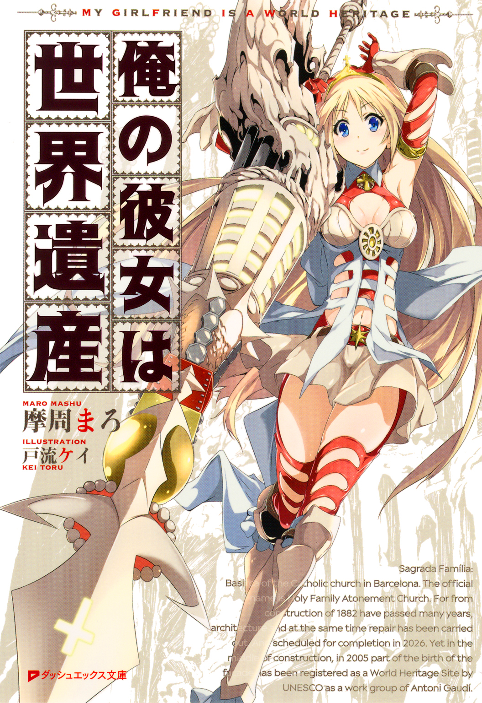
この本は縦書きでレイアウトされています。
また、ご覧になる機種により、表示の差が認められることがあります。
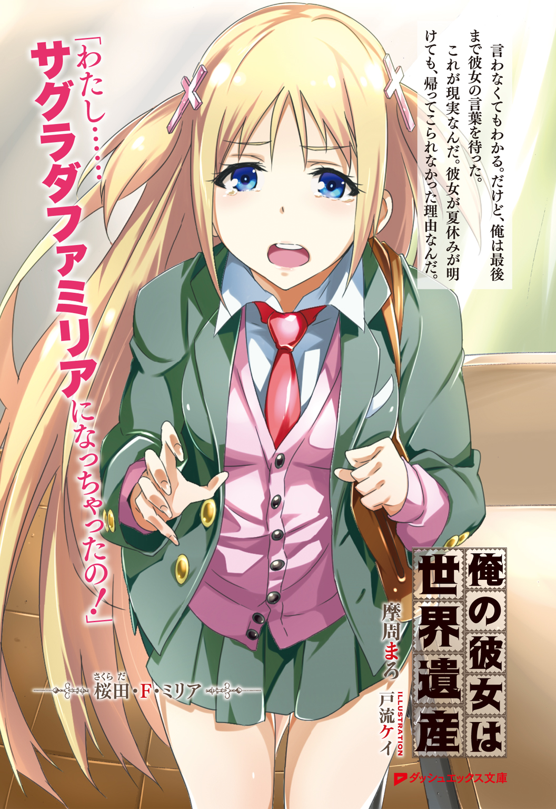
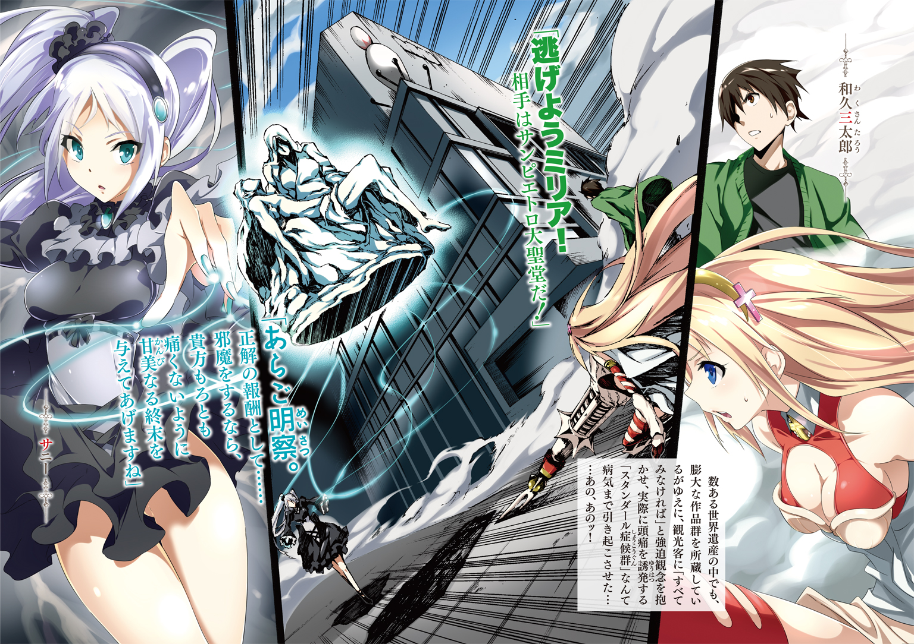
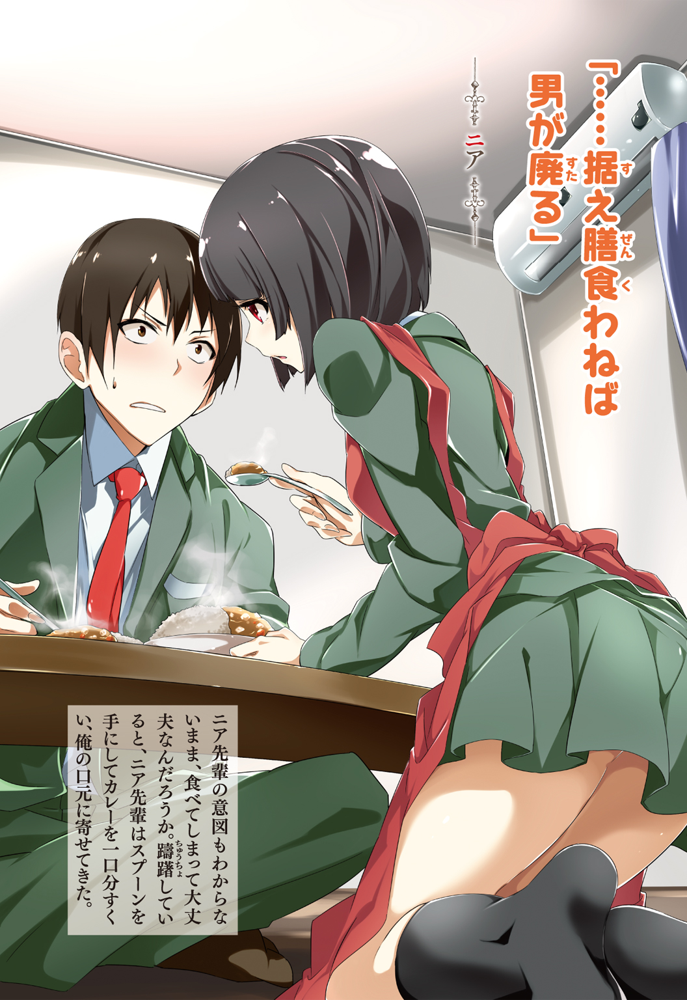
 ダッシュエックス文庫DIGITAL
ダッシュエックス文庫DIGITAL
俺の彼女は世界遺産
摩周まろ
言語の同調......調整完了。
ヴァールベリ無線通信所によるシステムリンクを確認。タイムラグはラ・ショー＝ド＝フォンにて打ち消し完了。
防壁としてカルカソンヌを展開。
グリニッジからの観測情報を時計塔へ。
推論機関に国立自治大学を選択。
フィレンツェに作業支援を要請。ヴァチカンからの承認確認。
未確定部分はデルフォイの神託にて補正。
環状列石、起動。
解析の結果......未だに我々は「危機遺産」の域を脱していない。
プロローグ
女の子は褒めなさい。それが我が家の――和久家の家訓だった。
俺に家訓を守るつもりは無い。母さんには悪いけど女の子と仲良くしてると「オンナスキー」とか「ままごと野郎」とか変なあだ名がつけられて困るからだ。
なのにいつも俺の思惑とは正反対の結果になってしまう。
女の子にちょっかいを出して、はやし立てるバカ男子どもに付き合う義理なんてないんだけど、度が過ぎるとみてられなくてついひと言本音が出る。
あとはいつものパターンで、俺は「オンナスキー」な「ままごと野郎」として、男子連中のつまはじきにされっぱなしだった。
それが原因......ってわけでもないんだけど、両親の仕事の都合で通算六回ほど小学校を転校した。
転校が多かった事と自分の性格が災いして、特別親しい友達......親友はできなかった。
二〇〇七年――小学三年生の春。七回目の転校先で青い目をした彼女と出会うまでは。
彼女を初めて見た時、俺は心から「美しい」って思った。そして彼女の力になりたい......友達になりたいって本気で思ったんだ。
新学期が始まって二週間が経ったある朝。ホームルームで転校生が紹介された。
「桜田・Ｆ・ミリアです。よろしくお願いします」
壇上でちょこんとお辞儀をすると、亜麻色の髪がふわりと空気を含んで広がった。背が高くて手足も長くて澄んだ瞳は海のように青かった。
色白で天使みたいな女の子だ。
「すっげー！ 外人じゃん！」
「どこの国から来たの？」
「Ｆってなんだよ」
教室中から質問が一斉に彼女――桜田さんに向かう。
「え、えっと......」
うちのクラスの男子連中は、まるで珍しい動物でも見るみたいに騒ぎ立てた。
桜田さんは困ったようなおどおどした表情で、ぶしつけな質問に応えた。
「え、えっとね......おばあちゃんがスペイン人なの......」
「じゃあお前って日本人じゃないわけ？」
「えっと......えっと......」
天使みたいな女の子を困らせるな。まったく失礼な連中だ。桜田さんが返答に困っているところに別の質問が飛び込んできた。
「そんならやっぱし、スペインから来たの？」
「と、東京から来ました」
おお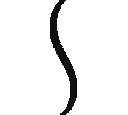。と、教室内がどよめいた。ちなみにこの小学校があるのは千葉県北西部だ。東京なんて隣だろ！ そこまで驚く事かっつーの。
「Ｆは！ ねえＦは!?」
「ミドルネームっていうんだけど......」
「ミドルネームって何!? 名前なの？」
「あのね、フェリスっていって......」
「ミリアが名前じゃなくてフェリス？」
「えっと、だからその......」
「変なのー！」
質問してた連中が一斉にゲラゲラ笑う。先生もぼーっと見てないで止めろよ。
「へ、変じゃないもん！」
桜田さんは声をあげた。こんな態度で接せられたら怒って当然だ。質問してる連中にそんなつもりがなくても、これじゃあ......いじめだ。
やってる方はあれで「クラスになじめるように、いじってあげてる」とか思ってるんだから余計にたちが悪い。
「変だろ絶対！ つーか外人だし」
「に、日本人だよ......こんな見た目だけど......」
こんな見た目......だなんて言わないでほしい。桜田さんの言葉に俺の胸は締めつけられた。
亜麻色の髪も青い瞳も両親や先祖からの贈り物だ。誰にそれをおとしめたりとがめたりする権利があるッ!!
桜田さんがうつむいた瞬間、カアッっと頭に血が上って俺は立ち上がった。
「ちょっと黙れよ」
「なんだよ和久。まさか外人に味方すんのか？ こっちはわざわざ転校生のキャラ立ててやってんだぜ？」
「お前たちのやってる事は、ただの嫌がらせだ」
「あん？ 俺らのやり方に文句あるわけ？」
「あるッ！ だいたい外人って言い方がおかしいんだ。外国人って言い方が正しい......っていうか、桜田さんは日本人なんだよね？」
「う、うん......」
彼女は恥ずかしそうにうなずいた。
「日本人なわけねーじゃん！」
「日本国籍を持ってるなら日本人だ。外見は関係ない」
「ごちゃごちゃうるせーな。あーあ、しらけちったよ。つうか和久さぁ......転校生かばってどうなるかわかってんの？」
「お前も先生がいる前で、口出ししたらいじめますって脅迫するのはどうかと思うよ」
やっと担任の猪熊先生が重い腰をあげた。
母さんがクラスの保護者会で聞いた噂によると、名字のイメージ通りこの熊みたいな中年の先生は度重なるモンスターペアレントとの死闘によって、ぽっきり心が折れてしまったらしい。
「はい、じゃあ、桜田は空いてる席について」
「は、はい......」
「和久も着席するように」
「........................はい」
不満はあっても、この場は返事をするしかなかった。
何も無かったようにスルーする先生に、きっと桜田さんも失望したと思う。
こんなんだからいじめがなくならないんだ。
教室の廊下側に付け足すように追加された席に彼女はついた。俺の席の真後ろだ。
不意に俺は肩を指で軽くつつかれた。振り返ると......そこには天使みたいな笑みを浮かべた桜田さんの顔があった。机から身を乗り出すようにして彼女は俺にこう言った。
「ありがとう。かばってくれて......」
「別にかばうとか......俺は普通の事を言ったんだ」
彼女に見つめられると、それだけでドキドキして変な気持ちになってくる。慌てて俺は前を向いた。
この一件で俺はクラスから完膚無きまでに浮いた。転校する度にこうなるから、もう慣れっこだ。
そう......俺だって桜田さんと同じ転校生みたいなもんだもんな。新学期に合わせてこの町に引っ越して来たんだ。
それにしても今回の学校は今までの中でもトップクラスで嫌な感じだ。
クラスを牛耳ってるいじめっ子グループのリーダーがＰＴＡ会長のバカ息子ときた。先生も頼りにならないし、俺くらいしか彼女を守ってあげられない。
桜田さんが迷惑だと思わない限り、俺は彼女の味方になると心に決めた。
それからしばらく......桜田さんはクラスになじめないままだった。
いじめというほど決定的なものじゃないけど、彼女と仲良くしたがっている女子にもバカな男子連中がちょっかいを出して、桜田さんが半分無視されるような状況が続いていた。
俺はといえば、すっかりバカどもと対立するようになっていた。望むところだ。というか同じ男としてこいつらのガキさが情けない。
連中は生き物係を桜田さんに押しつけた。他の係と違って毎日やることがあるので面倒くさい。飼育小屋の兎の面倒をみたり、教室に三つある花瓶に水やりをするのが主な仕事だった。
元はといえば、俺がいじめっ子どもとやりあって、桜田さんの肩身が狭くなったって事もあるわけで......俺は桜田さんの生き物係の仕事を手伝いだした。
ある日の放課後、兎小屋の掃除を終えて俺が教室に戻ると......。
桜田さんは泣いていた。
床に散らばった陶器の欠片と花を散らせた切り花と、広がる水たまり。
三つある花瓶のひとつが無残なことになっていた。教室で桜田さんはたったひとりでその場にしゃがみ込み、泣いていた。
「ど、どうしたの桜田さん!?」
「あのね......あのねっ......花瓶......割れちゃってて......」
おかしい。落として割っちゃったじゃなく、割れちゃってて......だなんて。
もちろん桜田さんが落として割った可能性だってある。
けど彼女がそんな言い訳をするようには思えなかった。まだ出会って数日だけど......。
俺が信じてあげなくて、いったい誰が彼女の言葉に耳を傾けられるんだ。
「怪我はしてない？ 破片は危ないから触っちゃだめだよ」
「うん......」
人差し指で涙をぬぐう桜田さんに、いたたまれない気持ちになった。俺はそっと手を差し伸べた。俺の顔を見上げて桜田さんは不思議そうにしている。
俺は自分から彼女の手をとって立たせた。ちょっと驚かせちゃったかな。
桜田さんは伏し目がちになって呟いた。
「あ、ありがとう。三太郎」
桜田さんは俺を名前で呼んでくれた。
「いったいどうしたの？」
「えっとね......なんでも......ないよ」
「なんでもないわけないだろ。俺の目を見て......本当の事を話してくれ」
俺はまっすぐに桜田さんを見つめた。信用して欲しいけど、その気持ちをうまく言葉にできないから、こうするくらいしか思い浮かばなかった。
潤んだ瞳で俺を見つめ返すと、桜田さんは声を震えさせて呟いた。
「信じて......くれる？」
よかった。俺の事を信用してくれたみたいだ。
「もちろん。だから正直に話してよ」
小さくうなずいて、彼女は続けた。
「あのね......他の花瓶にお水を入れに行って、戻ってきたら花瓶が倒れたみたいで......」
棚の上に置いた花瓶が勝手に倒れて落ちて割れた......というわけか。
「それなら桜田さんが悪いわけじゃない。ただの事故じゃないか」
「けど、倒れて割れるような花瓶じゃないし......」
うーん。決めつけは良くない。けど桜田さんが席を外している間に、誰かが花瓶を割ったような気がしなくもない。
「全部正直に、先生に言おう」
「でも......でも......どうしよう。花瓶、バラバラになっちゃったよ」
俺は床に散らばった陶器の欠片を見つめた。
これなら......いけるかもしれない。
すぐに自分の机の中にある道具箱から、瞬間接着剤を持ってくる。
接着剤。ああ、この素敵なアイテムが俺は好きなんだ。なぜだかわからないけど壊れたものを見ると無性に復元したくなる。
桜田さんはくりくりっとした青い瞳で俺の顔をのぞき込んできた。一瞬、見とれて俺は呼吸をするのを忘れてしまった。
「どうするの？」
「こ、壊れたなら直せばいいんだ」
ドキドキしてる場合じゃないだろ。ここで俺ががんばらなくて、誰が桜田さんを救えるんだ。集中、集中しろ俺。
割れた花瓶は破片のひとつひとつが大きくて、数もそれほど多くない。薄いガラスだったらお手上げだったけど陶器製ならなんとかなりそうだ。
俺は一番大きな花瓶の欠片を手にした。
「触ると危ないよ三太郎？」
「心配してくれてありがとう。気をつけるよ」
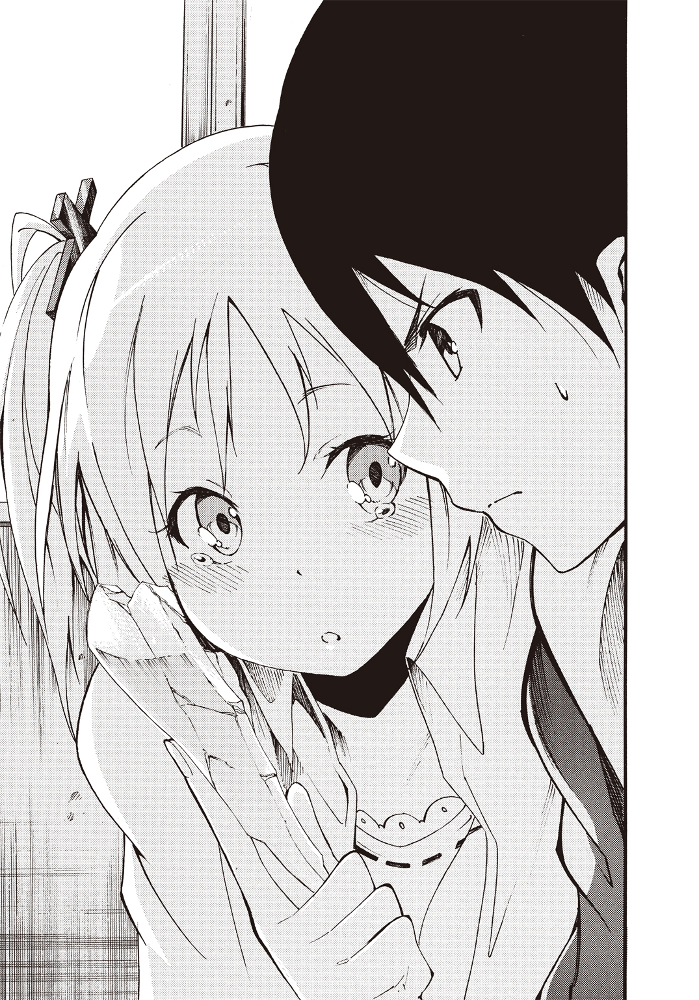
頭の中に散らばった欠片がパズルのピースのように浮かび上がる。俺はそれをイメージの中で組み上げていった。シミュレーションを終えると、俺は接着剤を手にして修復を始める。
破片を接着する順番は頭の中にできあがっていた。あとは手を動かすだけの簡単な作業だ。
迷う事無く、ひと筆書きをするみたいに俺は割れた花瓶を組み上げた。
「よしっと。元通りとはいかないけど、これでバラバラじゃなくなったな」
「す、すごい！ 三太郎ってすごいね！」
ずっと黙って見ていた桜田さんが、組み上がった花瓶に瞳をキラキラさせている。
ほっと息を吐いたその時、突然、俺たちの背後にぬーっと影が現れた。
「お前達、何をしてるんだ」
担任の猪熊先生だった。慌てて俺は花瓶を背の後ろに隠す。瞬間接着剤でくっつけたとはいえ、ひび割れているのは一目瞭然だ。
「え、ええっと......生き物係の仕事をしてました。そういう先生こそどうして？」
「教室で生き物係が花瓶を割ったのをごまかそうとしてる......と、匿名の報告があってな」
バカ男子どもか......花瓶を割って桜田さんに罪をなすりつけようとしたのは。
それを訴えても聞き入れてもらえるような気がしない。
「俺が割りました。つい、うっかり」
俺は隠した花瓶を先生に見せた。
桜田さんが目をまん丸くさせる。
「えっ!?」
もう一度、俺は念押しした。
「俺が落として割りました。直そうとしたけど、これが限界です。ごめんなさい」
猪熊先生は低い声でこう言った。
「噓をつくな」
やばい。桜田さんが割ったのを見たとか、そういう匿名の報告だったのか？ 筋書きはできてるのか？
桜田さんが涙目になった。
「違うんです。割ったのはわたしです！」
猪熊先生は大きなため息をついた。
「なあ和久、桜田。花瓶は......割れてないじゃないか」
俺は耳を疑って聞き返す。
「えっ......けど......」
「この花瓶は先生、前々から気に入ってたんだ。学校に置いておくのはもったいないから先生が預かろう。教室に花瓶は三つもいらないだろう。二つあれば十分だ」
初めて猪熊先生が笑顔になったのを見た。
花瓶を手にして猪熊先生は俺達にこう続ける。
「俺みたいなダメな先生が言えたような事じゃないんだが、二人とも......お互いを思い合う気持ちはすばらしい。けどな、誰かを守るために自分が傷ついたり、罪をかぶるような噓はいけないぞ。悪いが掃除を頼めるかな。それが終わったら、帰ってよし」
言い残して、先生はひびだらけの花瓶を大事そうに抱えると職員室に戻っていった。
それから数日後......猪熊先生は休職して代理の先生がやってきた。俺たちには先生の身に何があったのかわからない。
けどミリアへの嫌がらせはぴたっと止んだんだ。
きっと猪熊先生が俺達を救ってくれたんだと思う。
しばらくするうちに俺は桜田さんじゃなく、彼女をミリアって呼ぶようになっていた。
ミリアが俺を三太郎って名前で呼ぶもんだから、それがすっかりうつったみたいだ。
俺たちはいつもいっしょにいて、たくさん話して、笑って、触れ合って、俺はクラスの誰よりもミリアとの時間を過ごした。
ミリアの家族の事を聞いたり自分の家族の事を教えたりもした。うちは父さんが家を空けてばかりで、ずっと母さんと二人暮らし。兄弟もいないひとりっ子だ。いつも両親と揃って家族三人でご飯を食べてるっていうミリアが、ちょっぴりうらやましい。
ミリアと出会うまで自分の事を詳しく誰かに話したりしなかった。
親しくなったからだと思う。ミリアについぽろっと弱音を吐いてしまう事もあった。
転校も多かったけど、なにより自分の性格がこんなだから、これまでずっと友達ができなかった......って。
ミリアはそんな俺に笑顔で応えてくれた。その笑顔がまぶしかった。
「家族いっぱいがいいなら、大きくなったら、わたしが三太郎のお嫁さんになってあげるね」
「え、えっと......それはその......」
「大きくなるまで待てない？ じゃあ今から妹かお姉ちゃんになってあげよっか？ 三太郎はどっちがいい？」
「そうじゃなくて、ふ、普通に友達になって欲しいんだ」
「うん！ いいよ！ って、変だよね。もうとっくに友達なのに」
「その、友達以上の友達っていうか......」
「じゃあ、わたしたち親友だね！ 三太郎がピンチの時は必ずわたしが助けてあげる！」
「お、おう！ 俺もミリアのピンチには絶対に駆けつけるから！」
ミリアをまっすぐに見つめて俺は誓った。
彼女は目の色や髪の色がみんなと違う事を気にしてたけど、俺は生まれて初めて素直に家訓に従った。
「ミリアは天使みたいに綺麗だよ。青い瞳はサファイアみたいだし、亜麻色の髪も太陽の光を浴びてキラキラしてる」
ミリアは恥ずかしがったけど、言った俺だって顔から火が出るくらい恥ずかしい。
でも、それが本心だ。
俺達はこうして親友になったんだ。
ミリアは明るく前向きになっていった。元々活発な性格の女の子だったんだと思う。
自分に自信を持てるようになったミリアは、あっという間にクラスの人気者になった。
それからミリアは俺に教えてくれた。
ミドルネームのＦ――フェリスには「幸せな」っていう素敵な意味があることを。
すごく良い名前だなって思った。
そんな彼女の名前にはもうひとつ秘密があった。
秘密というか縁というか、語呂合わせというか。
桜田・Ｆ・ミリア......さくらだふぁみりあ......サグラダファミリア。
スペインにある今も建造中の大きな教会と響きが似てるんだ。
ミリアの両親は名前を付ける時に特別意識してなかったみたいで、自然とミリアっていう名前が浮かんだのだとか。ミドルネームのＦはミリアのおばあちゃんからもらったらしい。
響きが似たのは偶然だったけど、親近感がわくからっていう理由でミリアはサグラダファミリアが好きみたいだ。
インターネットで検索したり、図書館に行ったりして俺はサグラダファミリアのことを調べてみた。写真からでもその大きさに驚かされた。
それから母さんにその事を話したら父さんの書斎の鍵を渡してくれた。
父さんの書斎には、サグラダファミリアをはじめとした「世界遺産」に関連する本がずらりと揃っていた。
俺が物心ついてからずっと出張ばかりで家に帰ってきた記憶すらない父さんが、世界中の文化財を保護する仕事をしてるんだと、この時初めて母さんから聞かされた。
何度も引っ越しをしてその間に一度も父さんは帰ってこなかったのに、書斎はずっと引っ越す先で作ってたから、ずっと不思議だったんだ。
自由に使っていいとお許しが出たその日から、父さんの書斎は俺とミリアの秘密基地になった。
春が過ぎ梅雨が明けて夏が近づき一学期もそろそろ終わる頃。
ミリアは「夏休みにスペインのおばあちゃんに会いにいく」と楽しそうに話してくれた。
ミリアは日本生まれで実はスペインには行った事がないらしい。
実物のサグラダファミリアを見てくるっていうんだから、うらやましい限りだ。
彼女がスペインから帰ってきたら、いっぱい写真を見せてもらってたくさん話を聞こうと思った。
けど、彼女はスペインに行ったきり......帰ってこなかった。
彼女は――桜田・Ｆ・ミリアはスペインで事件に巻き込まれたんだ。
ミリアが世界を揺るがす大きな事件の当事者になっていたことを、俺が知るのは数年先の話になる。
第一章 学園都市は女の子だらけ
女の子は褒めなさい。それが我が家の――和久家の家訓である。
だからってこんな学校に入学させる必要ないじゃないか！
桜の花が舞い散る街路脇の歩道を俺は肩を落としながら歩いていた。
右を見ても左を見ても前も後ろも女子、女子、女子。
男子の制服を着ているのは俺だけだ。
入学式から教職員も含めて俺は同性の姿を目撃していない。
そもそもこの人工島に引っ越して来て以来、どこもかしこも女性ばかりだ。
自分が存在していること自体が罪にさえ思えてくる。
そんな、いたって自己憐憫的な罪を勝手に背負いながら俺は学園の正門前から敷地内を見渡した。
中庭はまるでベルサイユ宮殿の庭園のように、整然とした調和のとれた美しさを保っていた。幾何学的に切りそろえられた生け垣や、その緑の囲いの中で色とりどりの花を咲かせる花園は、隅々まで手入れが行き届いている。
庭園中央にある豪奢な円形の噴水。その奥に巨大な校舎が建っていた。こちらも庭園に合わせたバロック建築風だ。
東京湾内に浮かぶ人工島。それはまるまる学園都市だった。三学年、千名ほどが通う「世界樹学園」の俺は唯一の男子生徒......という事になる。
さっきから遠巻きに俺を見てる女子たちの視線が痛い。
入学する一般生なんて世界樹学園を女子校だと思ってるもんな。一応共学なんだけど。教職員でもその事を知らない人がいるんじゃないだろうか？
そんな学園の正門脇に風紀委員の腕章をした小柄な女子生徒が立っていた。
短い黒髪のおかっぱに赤い瞳をしている。印象的な燃えるような赤。ルビーレッドだ。
カラーコンタクトではなく彼女はそういう瞳の色なのだ。
どこか機械的な無機質さがあった。端正な顔立ちが彼女を人工物のように感じさせた。
けど、それが必ずしも悪い事のようには思えない。
控えめな胸も相まって、和服を着せたら日本人形っぽくなるかもしれないと思った。
綺麗な人だ。と、つい、ぼんやりながめていたら彼女と目が合った。
半分眠っているような抑揚の無い声で彼女は告げる。
「......おはよう。和久三太郎」
「おはようございます。って、なんで俺の名前を？」
「......あなたは目立つ存在だから。わたしはニア」
「ニア......先輩ですよね？」
彼女の制服のタイの色は緑色だ。緑は確か......三年生の色だ。ニア先輩は小さくうなずいた。
彼女はじっと俺を見つめる。間が持たない。ええと......こういうときは......。
「綺麗な瞳ですね」
つい本音が口からこぼれた。
「............」
ニア先輩の頰がかすかに紅潮した。って、俺も何を馬鹿正直に家訓を守ってるんだ。
いきなりこんな事を言われて相手だって困惑するだろうに。
「......早く教室に行きなさい」
「は、はい！ 失礼しました」
言ったこっちまで無性に恥ずかしくなってきた。先輩に一礼して俺は正門から早足で校舎に向かった。広い庭園をつっきるように続くまっすぐな道を、競歩の選手みたいに限界ぎりぎりの歩行スピードで歩き続ける。
あのままあそこにいたら、俺は恥ずかしさのあまりキラウェア火山みたいに噴火していたに違いない。
左右対称には特別な美しさがあると思う。
校舎の外観は見事としか言い様のない左右対称の造りになっていた。
そんな校舎の中身はというと、職員室や各種特別教室は建物の中心付近に集められていた。
そして、建物の両翼に各教室が配置されている。
一年生の教室は三階。二年生は二階。三年生は一階だ。
これから一年間、毎朝三階まで上り下りすると思うと気が重い。
それでも二年生になれば一階分楽になり、三年生になればもっと楽になる。年功序列だ。
校舎の三階。一番西端の教室が俺の所属する１ーＡの教室だった。
俺にあてがわれた席は窓際の一番後ろという絶好のサボりポジションだ。なぜか他の列と違って窓際の列の席は五つしかない。俺の席の後ろに、あと二、三個机が置けそうなのに......まあいいか。
ともあれ、このまま席替えなどのイベントが無い事を願おう。
席に着く。教室内には当然のごとく女子しかいない。ホームルームが始まるまで、まだ十分程あった。時間が経つほど教室内の女子密度が上がっていく。
所在なくしていると、一般生にまぎれて目立つ外見の生徒たちが教室に入ってきた。
金髪やピンク色の髪なんていうのは世界樹学園ではざらだった。決して校則が緩いというわけじゃない。
彼女たちはさっき正門前で会ったニア先輩と同じなんだ。
「やったぁ。また一緒だねヴァールベリちゃん」
「グリニッジとはいつになったら離れられるんだよ。ここまで来ると腐れ縁だな。つうかラ・ショー＝ド＝フォンもか」
「一から関係性を構築していくのは大変なんだからいいじゃない。けど、カルカソンヌとは離れちゃったわね」
「一からって......あーあ、また一年生からやり直しか。強くてニューゲームじゃあるまいし。つうか三階まであがんのしんどすぎるマジで」
「しょうがないよぉ。そういうルールなんだしクラス分けも先生が決めるんだしぃ」
一般生の入学式にはいなかった面々だ。
三人は俺と同じ列の前から順に座ろうとして、ぴたりと動きを止めた。ひとりがゆっくり振り向いて俺を見つめる。
「一年生男子発見！」
リーダーっぽい女の子が俺をびしっと指さした。たぶん彼女がヴァールベリさんだ。淡い緑色のショートヘアでアホ毛がアンテナのように立っていた。背が高くモデル体型だ。
「ど、どうも......」
「わぁ！ すごいねぇ男の子だねぇ」
ピンクのセミロング髪の女の子が、瞳を星みたいにキラキラさせながら俺の席のそばに駆け寄ってきた。じーっと俺を観察している。彼女がグリニッジさんだろう。夢見るふわふわ系美少女だった。
という事は落ち着いたダークグレーの髪に、片眼鏡をつけているのがラ・ショー＝ド＝フォンさんか。
「二人とも初対面の方に失礼でしょ。すみません......ええと......」
「和久三太郎です」
「ラ・ショー＝ド＝フォンです。あの電柱みたいな子がヴァールベリ。ピンクの綿菓子みたいなのがグリニッジです」
「誰が電柱だ！」
「ふわふわじゃないよぉ。ゆるふわだよぉ」
紹介に不服そうな二人に、俺は席から立つとちょこんとお辞儀をした。
「初めまして。よろしく」
顔をあげるとヴァールベリさんがびしっと俺の顔を指さしてきた。
「つうか和久って和久一馬の息子か？」
「そうだけど......父さんを知ってるの？」
「有名人だからな。ま、あたしが情報通っていう事もあるんだけど。家系は確か日本の宮大工で、保護官としての能力を買われて機関に入り、これまでに何人もの遺産少女を保護してきたエキスパート......だろ？ おまえさんはこの女の子だらけな楽園に親のコネで入学したのか？ スケベだな！」
「えっちなの？ えっちな人なの？」
やばい。グリニッジさんまで乗っかってきた。
「ち、違うって誤解だって！」
そう......父さんの仕事というのは、ここ数年で頻発し始めた「ある現象」に巻き込まれた被害者を保護することだ。
それがいつ始まったのかは誰も知らない。その記憶も記録もすべてが失われてしまっていた。世界各地に残る「少女を生け贄にする」慣習の、元になっているとも考えられているけど、真相は誰も知らない。発生の原因も依然として不明だ。
未成年の少女が文化財――世界遺産とリンクしてしまうという怪現象。
誰でもというわけではないけれど、まるで導かれるように遺産に認められた少女たちはその場所に引き寄せられて遺産とリンクしてしまう。
そうなると何が起こるのか？
人知を越えた現象が発生するのだ。
まず、少女とリンクした遺産本体には、強固な防衛能力が常時発動するようになる。
害意や敵意や悪意をもった人為的な破壊が不可能になるのだ。それでも風化はするので、保全や修復は必要なんだけど......。
その代償なのか因果関係は不明だが、遺産に選ばれリンクした少女――遺産少女は時間を止めたよう成長が止まってしまうらしい。
十八歳になると遺産少女はそれから先、老化していく事がなくなる......という話だ。
さらに、目の色や髪の色が特異なものに変化してしまう副作用まであった。
俺を取り囲んだ三人が話していた内容から察するに、彼女たちは去年まで三年生だったんだと思う。片方の目を閉じて、モノクルを付けた方の目でラ・ショー＝ド＝フォンさんが俺の顔をのぞきこんできた。
「いやらしいのはいけないわよ」
「あ、あの、顔が近いんですけど。それに......いやらしいとか、そういうんじゃなくて」
俺が困っているとラ・ショー＝ド＝フォンさんはそっと離れてうなずいた。
「失礼、精査する時はこうなるのよね。事情は察したわ。これから一年間よろしくね」
「よろしくなエロスの化身！」
「よろしくぅ！ えっちな人」
俺の事情などおかまいなしっぽいヴァールベリさんとグリニッジさんには、なにを言っても無駄かもしれない。エロス関連のレッテル剝がしはとりあえず諦めよう。そもそも俺だって自分がここにいる事に疑問を持っている人間のひとりだ。
「よ、よろしくお願いします」
三人は満足したのかそれぞれの席に戻っていった。最初のホームルームで自己紹介をする前に、それが済んでしまった感がある。
ちなみに、三人のリーダーっぽいヴァールベリさんは、スウェーデンの西海岸沿いにある街の名前だ。遺産はおそらくそこで開局した長距離無線電信局なんだろうな。
ラ・ショー＝ド＝フォンさんも街の名前で、たしかスイスにある時計産業の聖地だったっけ。
そして、ほわほわーっとしたグリニッジさんは言わずもがな。あのグリニッジ天文台。世界中の時間の「基準」であるグリニッジ標準時でおなじみだ。
三人のやりとりをみる限り、遺産少女は本名よりも遺産名を使う人が多いのかもしれない。
そんなことをぼんやり考えているうちに、教室内の席が八割以上埋まっていた。生徒はやっぱりみんな女子、女子、女子だ。
世界各地から遺産少女が集められてはいるものの、学園のほとんどの生徒......遺産少女ではない一般生は、入試試験に合格してこの学園にやってくる。男子の願書も受け付けているらしいけど、どんなに優秀な受験生もなぜか面接で落とされてしまうらしい。俺という例外を除いて。
というわけで世界樹学園は事実上女子校と言って差し支えなかった。他の学校と大きく違うのは、遺産少女と人間の共学というところだ。
そもそもなんで一般生がいるのかというと、時が止まってしまった遺産少女たちを遺産から分離する手段が見つかるまで、その年齢に相応しい生活を続けてもらうため......なのだとか。
そんな学園にひとりだけの男子となった俺は、一段と浮いて見えるだろう。
女の子目当てで、学園の母体となっている組織に所属している親のコネを使って入学してきた変態男子......なんて事にならなきゃいいんだけど。
予鈴が鳴って生徒全員がそれぞれの席についた。出席率はほぼ一〇〇パーセント。俺の前の席だけが空いたままだった。
俺だけ男子ってことで机ひとつ分隔離されてるのか？ いや、きっとこの席に座るはずであろう、誰かが遅れているに違いない。そうであってくれ！
でないと悲しすぎる。
朝のホームルームの始まりを告げるチャイムが鳴った。
時間ぴったりでメガネをした若い女性の先生が教室に入ってきた。黒板の前の壇上に立つ。
先生はその......なんと言いましょうか......かなりの......大きなおっぱい様だ。
彼女は懐中時計を手にしていた。文字盤に視線を落としながら呟く。
「５......４......３......２......１......おはようございます。私が今日からみなさんの担任になる時計塔です。遺産とリンクしていますが大学進学を希望し、しかるべき免許をとる事で本年度より学園の教員となりました」
俺の席列の一番前に座っているヴァールベリさんが、びしっと時計塔先生の顔を指さした。
「ちょ、大卒ってなんだよ！ たしかおまえさん、うちらと同期だろ？」
叫びながら勢い余ってヴァールベリさんが立ち上がる。
淡々とした表情を一切崩さずに、時計塔先生は返答した。
「学園も大学も飛び級で卒業しました。時間を有意義に使った結果です。しかし......時の流れとは無情ですね胸平らなヴァールベリさん。はい、では出席をとります......」
「平らじゃねぇ！ ちょっぴりスレンダーなだけだ！」
「私語は慎んでください」
後ろの席のグリニッジさんに「まぁまぁ」となだめられて、ヴァールベリさんは着席した。
遺産少女の中にも時計塔先生みたいな人がいるのか......と、俺は感心した。
もし自分の時間が十八歳になったところで止まったなら......永遠の命を得てしまったら、時間なんていくらでもあると無気力になって、何もしなくなってしまいそうな気がする。
そういえば遺産少女は餓死とか事故死とか、病死はしないんだろうか？
死なない事は幸せか？ 死ねない事の方が不幸じゃないか。永遠の命は永遠の孤独だ。
家族や友人や......一緒にいたいと思う人と同じ時を過ごす事ができなくなる。
遺産の守護者と言えば聞こえはいいけれど、遺産少女になる事はひとりの人間として幸せなことじゃない。
そう考えると、一日でも早くこの病気とも呪いとも言える状況から、遺産少女が解放されたらいいな......と、思ってしまった。思うだけで俺には何もできないんだけど......。
時計塔先生が出席名簿を開いたところで突然、教室の後ろのドアが開いた。
「おはようございまーす！」
元気で明るく快活な挨拶だ。
「初日から遅刻ですか？」
時計塔先生があきれ顔になった。いったいどんな女の子なんだろう。
俺だけでなくクラス中の視線が彼女に集まった。
その顔に......俺は見覚えがあった。もともと綺麗だった亜麻色の髪がつややかなブロンドになっている。茶色の色素が薄まって、より金髪に近づいていた。
サファイアブルーの瞳は変わらない。そんな彼女の目が不安げに泳ぎ出す。
「ぎりぎりセーフ......じゃ、ないですか？」
教室中の視線を集めてしまったのに気づいて、彼女は恥ずかしそうにうつむいた。
「チャイムが鳴り終わった時点で、教室にいなかった生徒は遅刻です。わかりましたか？ ......ええと、名前は遺産ではなく個人名を希望しているのですね？ 桜田さん」
「す、すみません。あの！ 廊下に立ってたほうが、い、いいでしょうか？」
「廊下に立たせて貴方が明日から遅刻しないのであれば、いくらでも立っていただいて結構ですが......そういうものでもないでしょう。十分に反省して着席してください。席は窓際の後ろから二番目です」
彼女が座るべき席がぽっかりと空いている。俺の目の前だ。そしてこの列の特徴にようやく気づいた。前から四人が遺産少女なのだ。
「は、はい。反省します」
しょんぼりと肩を落としてうつむいたまま、彼女は俺の席の横を通り過ぎようとした。
「ミリア......なのか」
つい言葉が漏れる。瞬間、立ち止まると下を向いていた彼女が顔をあげた。
「え？ 男の子？ えっと......えええー!?」
彼女は俺の顔を確認するなり、声をひっくりかえして悲鳴をあげた。
俺が男だから驚いてる......んじゃ、なさそうだ。
「ミリアだよな？」
俺は立ち上がった。
昔はミリアの方が背が高かったのに、今は頭ひとつ俺の方が背が高い。
ミリアは俺を見上げるようにしていた。
「もしかして......三太郎？」
どうやら本当にミリアみたいだ。桜田・Ｆ・ミリアなんだ。
こんなところにいるなんて......。
「三太郎！ 三太郎なんだよね？」
「あ、ああ......」
困惑しながら俺がうなずいた瞬間、ミリアは目に涙をためこんで......抱きついてきた。
「三太郎。会いたかった......会いたかったよぉおおおおおおおおおお！」
「ちょ、ちょっと！ ミリア！ 待って！」
「どうして？ 三太郎はわたしの事忘れちゃってたの？ 会いたくなかったの？」
「そうじゃないけど......」
教室中の視線が俺とミリアに集まった。ああ、時計塔先生のメガネの奥から冷たい殺意すら含んだような眼差しが突き刺さる。主に俺に対して。
それにヴァールベリさんたちまで後ろを向いて、ニヤニヤしてるじゃないか。
「こりゃあ、さっそく情報を発信だな」
「いいなぁ。彼氏いいなぁ。うらやましー」
「ヴァールベリもグリニッジも、そういうことは言わないの」
と言いつつ、三人の中では良心的ポジションのラ・ショー＝ド＝フォンさんまでにやけっぱなしだ。マジかよ。
ミリアは顔をあげると俺の瞳をのぞき込んできた。
「あのね......あのね......わたしね......」
「ミリア落ち着いて。髪の色......変えたんだね。すごく似合ってるよ」
「ありがとう......けどね......これってね......」
言わなくてもわかる。だけど俺は彼女が最後まで言い終えるのを待った。
これが現実なんだ。小学三年生の夏休みが明けても、彼女が帰ってこられなかった理由なんだ。
「わたし......サグラダファミリアになっちゃったの！」
俺をこの学園に入学させた両親や、俺の入学を許した学園がなにを考えているのかはわからない。けど、ようやく俺はこの学園に入学できてよかったと思える事をひとつ、見つける事ができた。
ミリアとこうして再会できた事だ。
第二章 孤独の男子と遺産少女たち
授業の合間の休み時間になってもミリアは席についたまま、ずっと前を向いていた。
こっちから声が掛けづらい。話したい事はいっぱいあるのにどうしていいかわからない。
朝のホームルームでミリアが俺に抱きついて号泣したのが、この近くて遠い奇妙で微妙な距離感の原因だった。
再会を喜び合うのもミリアのこれまでの事を聞くのも、もう少しだけお互いに落ち着いてからの方がいいのかもしれない。
なので今日は放課後まで授業に集中する事にした。というか、それしかする事が無かった。
ちなみに授業を受けた感想はというと......大変だというひと言に尽きる。
各教科の先生はみんな女性だった。せめてひとりくらい男の先生がいてくれてもいいのに。
授業内容のレベルも高く入学早々ついていけるか不安だ。
正直、俺はあまり勉強が得意な方ではない。じゃあ運動が得意か？ と聞かれれば天は二物を与えるどころか、一物すらも与えてはくれなかった......と返すしかない。
得意な事と言えば指先を動かす事くらいだ。小学六年生の時にサグラダファミリアの模型を作って市内のコンクールで金賞をもらった事。それが俺の唯一誇れる勲章だった。
そんなわけで迎えた四時間目の体育。絶望は至る所にぽっかりと口を開いて待っているのだと実感した。
体育の授業は男女別々である。
この学園では男子生徒は俺しかいない。
大事な事なので心の中で復唱しよう。俺ひとりしかいないんだ！
体育の先生曰く俺はこの時間、学園の施設を使って好きな事をしていいのだとか。最初に先生に出席をとってもらったらあとは自由時間だ。ああ、自由だ！ 無限の可能性を秘めた新世界が俺を待っている。
テニスの壁打ち。
サッカーのリフティング。
バスケのフリースロー。
野球（学園にはソフトボールの道具しかないけど）の素振り。
ほら、球技だけでもこんなにできる事がある。
空手の型。
柔道の受け身。
シャドーボクシング。
格闘技だって、対戦相手がいなくてもできるじゃないか！
水泳。
創作ダンス。
器械体操。
楽しそう！ すっごく楽しそう!!
......俺、泣いてもいいかな？
この三年間、体育の時間を持久走で過ごす事に決めて、俺はひとまず体操服に着替える事にした。
更衣室に入る。もちろん男子更衣室だという事は、念には念を入れて指さし確認までしたくらいだ。ぬかりない。
中に入るとロッカーがずらりと並んでいた。更衣室はシャワーブースまで完備している。
そもそも学園の施設は外見こそバロック建築を模しているものの、中身は近代的な最新の設備が詰まっていて快適だ。
俺は一番奥の角を曲がった先で着替えを始めた。
なんとなくだけど、入り口付近だとドアを開けた時に丸見えになるし......って、俺以外に誰も使わないとわかっているのに、なんで恥ずかしがる必要があるんだか。
女の子の園に男子ひとりというのは、いやでも自意識が過剰になりがちだ。安心しろ。興味本位で男子の着替えをのぞくような奇特な方なんて、いるわけがない。
制服の上着をロッカー備え付けのハンガーに掛け、Ｙシャツもさっと脱いだ。貸し切りの更衣室に、なんだか奇妙な開放感を覚える。銭湯や温泉で浴場に自分ひとりだけだった時みたいな、あの感覚だ。
ひとりは寂しいと思っていたけど、ミリアと再会できたおかげで俺も気持ちに余裕ができたみたいだ。
体操着の上着を着る前に、なんとなくズボンを先に履き替える事にした。一瞬とはいえほぼ全裸になる。この女の子だらけの建物の中で！
ああ！ 変なテンションになってきたぞ。ついさっきまで恥ずかしがっていた事がバカらしく思えてきた。
ズボンに手をかけ下ろした瞬間。
ガチャリとドアが開く音がした。
馬鹿な......そんなはずはない。男子は俺しかいないんだぞ!?
俺はパンツ一丁（靴下装備）で、恐る恐る角から顔を出し入り口の方を確認した。
「やっぱ去年の情報通りだろ。一年生って裏技知らないんだよな」
聞き覚えのある声が自慢げに男子更衣室に響いた。俺はすぐに角から顔を引っ込める。
「わああ！ ほんとに誰もいないねぇ」
「いいのかしら？ こんな事をして」
「いいんだって。男子のでも何でも、せっかくの更衣室を使わない方がもったいないだろ？ ほらさっさと脱げって！」
「いやーん。ヴァールベリちゃんのえっちー。えっとー。ブラも脱ぐんだっけ」
「脱がないだろ。つうかそもそもグリニッジはブラいらないんじゃないか」
「そんな事ないよー！ ちゃんとおっぱいあるもん！ ほら！」
「わざわざ脱いで見せる必要なんてないでしょう。はぁ......もし和久君がここで着替えていたら大変ね。一応念のため、奥の角を曲がったところにある死角を確認してくるわ」
や、やばい。いや俺はなにも悪い事をしてないんだけど。
慌ててズボンを履こうとして......ズボンがくるぶしのあたりでからまり、俺は思いっきり足をもつれさせた。
バタン！ と、音を立てて床に倒れ伏す。
「今、なんか物音がしたな？」
「なんだろーね」
「猫でも入りこんだのかしら」
俺はほっぺたに床のひんやりした感触を受けながら、精一杯甲高い声で鳴いた。
「にゃ――――ん！」
「わー。猫ちゃんだぁ。かわいいかなぁ。かわいいといいなぁ」
トテトテと足音が床に響く。まずい......。
俺が見上げると、そこには......なだらかなお腹のラインから続く、小さな小さな丘陵地帯が二つあった。頂の部分は薄い桃色だ。
「猫ちゃんじゃないねぇ」
床に這いつくばる俺をグリニッジさんは不思議そうに上から見下ろしていた。
眼差しが無邪気すぎますから！ って、俺も何を見てるんだ。二つ並んだなだらかな丘陵地帯を見上げるなんて、これは......い、いかんですよ！
「ご、ごごごごめんなさい！」
悲鳴をあげて床をのたうち回るようにしながら、俺は顔を背けた。
「去年の情報はもう通用しないみたいね。情報通のヴァールベリらしくないわ」
「あっちゃー。今年から男子生徒が増えたことをすっかり忘れてたわー。新情報に書き換えだわー。無邪気なグリニッジの上半身すっぽんぽんな姿を前にして、我が校唯一の男子生徒がパンツ丸出しになる事件が更衣室にて発生......と」
まるで示し合わせていたみたいに、棒読み気味で二人が言った。
はめられた!? これじゃあ俺が悪いみたいじゃないか？ 訂正を求めねば。
「ちょ、ちょっと待った！ ここは男子更衣室でしょ？ 俺は普通に着替えてただけで......」
床に這った姿勢のまま、俺は足首まで下げたズボンに手を伸ばし、なんとかズボンをあげようとした。みっともない姿の俺をヴァールベリさんがビシッと指さす。いや、指したような気がする。顔をそむけっぱなしだからわからないんだけど、そんな気がした。
「動くな！ 下手に動けば......おまえさんの学園生活が爆ぜるぞリア充」
「リア充ってなんだよ！」
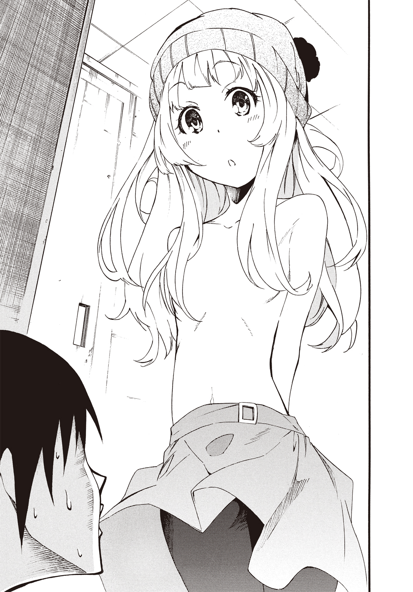
「あの新入りとはいったいどういう関係なんだ？」
「知りたい知りたい！ グリニッジも知りたいなぁ」
「体育の授業開始まであと七分しかないから、説明は手短にお願いね」
「新入りって？」
「去年までいなかったサグラダファミリアのことだ。まあ知ってるとは思うけど、あたしらは遺産とリンクしてるんで、このリンクが解けるまで基本的に延々と女子高生の生活を繰り返す事になるんだよね」
「時計塔ちゃんは無理矢理卒業したけどねぇ」
「で、あたしらは二周目なわけ」
二周目......か。やっぱり本当なんだな。遺産少女が歳を取らなくなるって。
ヴァールベリさんは続けた。
「だから学園の裏技も知ってんだよ。二年生にもなると混み合う女子更衣室じゃなく、男子更衣室を使うのもあり......ってね？ だからあたしらが男子更衣室に入っちゃったのも、わざとじゃないわけ。遺産少女の悲しい運命が導いた不可抗力ってやつだ」
そこまでしてミリアのことを聞きだそうっていうのか。ヴァールベリさんと交渉するのは危険な気がした。ここは一番の常識人に話を振ろう。
パンツ一丁で交渉を進める俺、うん、かっこよくはないな。それでも男には正々堂々と言い訳しなきゃならない時があるんだ。
「本当ですかラ・ショー＝ド＝フォンさん？」
「不可抗力というよりは未必の故意ね」
「こうなるとわかってたなら止めてくださいよ！」
「そうならない可能性に私は賭けたのだけれど......結果は残念なものに終わったわ」
だめだこの人も。口ぶりは丁寧だけど、ヴァールベリさんと大差ないかも。
無邪気な声が俺の頭上から降ってきた。
「ねえねえ！ ミリアちゃんの事教えて？」
「グリニッジさんは服を着てください！」
「更衣室だよー？ 着てなくてもいいんだよー！」
グリニッジさん幼すぎです。わざとか!? わざとなのか!?
この状況を打開する唯一の方法は......。
話すか？ 幼なじみだったこととか出会いとか仲良くなったいきさつとか......。
いや、いけない。
まだ俺はあの夏の突然の別れからそれっきり、ミリアときちんと話をしてない。時計の針は止まったままだ。
ミリアが遺産とリンクして、どんな心境の変化があったかもわからない。ミリアが過去に触れられたくないと思っているかもしれない。なら俺の口からそれを誰かに言うわけにはいかなかった。
話してしまったらそれはミリアへの裏切りみたいなものだ。
とはいえ話さなきゃこのままなのか。
そうだ！ 七分ねばって三人が遅刻になれば......。俺も遅刻になるけど死なばもろともだ。
「このままだと俺達四人とも次の体育は遅刻か欠席扱いですよ？」
ヴァールベリさんがニヤリと口元を緩ませた。
「こちとら何年留年しても関係ない実質高校四年生なんだよ。体育の授業を一度や二度欠席したって、どうってことあるか」
うっ......言われてみればそうでした。それに今のやりとりで俺はヴァールベリさんを傷つけてしまったかもしれない。本人が開き直っておどけてみせても、高校四年生という言葉には重たいものがある。
「なんでミリアの事を知りたいんですか？」
「それはあたしが情報通だからってのもあるけど、とにかくまずは能力だ」
「はい？」
「能力だよ。何度も言わせるなって」
能力っていうと身体能力的な事なのかな？ よくわからないけど......ともかくミリアとの思い出には該当しない当たり障りの無い事を答えよう。
「俺が知ってるミリアは勉強よりも運動が得意だったかな」
「そういうんじゃなくて、遺産固有の能力だっつーの」
「遺産固有......って？」
聞き慣れない単語に俺は混乱した。
俺が返答に困っていると、トントン！ と更衣室のドアがノックされた。それからほんの少しだけドアが開かれる。
「三太郎......いる？」
透き通った声が更衣室内に響いた。ミリアの声だ。
すると遺産少女の三人が一斉に鳴いた。
「にゃ――ん！」
「にゃん♪」
「にゃ――ん」
なんだ猫か......ってなるか！
ドアが完全に開かれた。
「誰かいるの？」
ミリアが入ってきたのが床を伝わる足音でわかる。足音は少しずつ加速していった。
それに合わせてキュッときびすを返す音がした。三人のうちの誰かが引き返したんだ。
「こんにちは......ええと、なんて呼べばいいかしら」
声はラ・ショー＝ド＝フォンさんだった。どうやらミリアが角を曲がる前に自分から出ていったみたいだ。
「あれ？ あの......えっと......」
「ラ・ショー＝ド＝フォンよ。あなたと同じ遺産少女の」
「桜田・Ｆ・ミリアです」
「遺産名よりも名前の方がよさそうね。よろしくねミリア」
「よ、よろしくです。ら......らら......」
「ラ・ショー＝ド＝フォンよ」
「ラショーさん」
「それでいいわ。それよりも着替え終わったなら体育館に集合よ」
「あの、どうしてラショーさんは男子更衣室にいるんですか？」
「同級生なのだし敬語はよしてちょうだい。あのね、実は男子更衣室って誰も使ってないから、混雑を避けるために時々利用するのよ。ちょっとした裏技ね」
「そ、そうなんですか！ じゃない、そうなの!?」
敬語じゃなくていいと言われて律儀に言い直してるし。ああ、ミリアのそういう素直なところは変わってないんだな。
「けど男子は三太郎がいるから......三太郎見なかった？」
「ちょうど行き違いだったかもしれないわね」
俺が声をあげようものならミリアはこっちに来かねない。するとそこには上半身裸のグリニッジさんと、ズボンを下ろしてパンツ一丁で無様に床に這いつくばっている俺がいる。
さてここで問題です。俺はミリアに助けを求めるべきでしょうか？
答えは......絶対にノー。小学生でもわかる事だ。
ミリアが残念そうに息を漏らした。
「......はぁ。そっか。もう行っちゃったんだ」
「そんな事ないよー。三太郎くんいるのにぃ。噓はいけないんだよぉ」
グリニッジさんが無邪気に呟いた。瞬間、俺とヴァールベリさんとラ・ショー＝ド＝フォンさんの顔が青くなる。
「え？ いるの？」
「来るなミリア！」
つい俺は叫んでしまった。
「三太郎いるのね!?」
俺は顔をあげた。ミリアがちょうどロッカーの陰から姿を現した。
彼女は体操着姿だった。
俺の目の前で上半身裸のグリニッジさんが、不思議そうに首を傾げている。
俺はズボンを足首のところまで下ろした状態で、ほぼパンツ一丁だ。
ミリアに......見られた。この最悪なシチュエーションを。
ヴァールベリさんが身構える。
「おっと見られちまったか」
ミリアがきょとんとした顔でヴァールベリさんに聞き返した。
「三太郎がパンツ姿で、グリニッジさんが裸で......えええええっ!?」
ヴァールベリさんは人差し指を立てると、チッチッチと言いながら指を左右に振った。
「ちょっと新入生を歓迎しようって思ってたんだけどね。あたしらなりのおもてなしってやつ？」
うわああああ！ ヴァールベリさん何で余計に誤解を招くような事を言ってるんだ！
「ミリアこれは違うんだ！ 事故なんだ！」
しゃがみ込むとヴァールベリさんは俺の顔をのぞき込んできた。
「そうだよなー。事故って言わなきゃ男としてのメンツが立たないよなー。まさか幼なじみの前で女子に囲まれていじめられてるなんて、言えないもんなー」
「いじめられてないって！」
やばい。ヴァールベリさんがこんな事を言う意図はさっぱりわからないけど、この状況そのものがミリアを刺激しかねない。
俺たちは子供の頃、お互いがピンチになったら助け合うって約束したんだ。
俺を助けようとミリアが無茶をしかねない！
プルプルと肩を震えさせるミリアの姿にヴァールベリさんがにんまり笑った。
「おっ！ これはもしかして逆鱗に触れた感じか？ やるぞ二人とも！」
「えー。校内でケンカはいけないんだよー」
「ごめんなさいねミリア。口で説明するよりもお互いに力を見せ合う方が、きっとわかり合えると思うの。その様子だと説得も無駄なようだし」
ただならぬ雰囲気に俺は再び声をあげた。
「ちょ、ちょっと！ 三人とも待ってくれ！ なあミリアも落ち着け......ってミリア？」
俺はミリアから重圧感を覚えた。うまく言えないけど、そう......見上げるほどの巨大な建築物を前にした時に感じる、あの圧倒される感覚だ。
「三太郎を......いじめたのね？」
ミリアは怒っていた。完全に俺を被害者だと勘違いしている。
「ち、違うんだミリア。これは俺が......」
「三太郎は......わたしが守る」
瞬間、室内の空気が変わった。ミリアが宣言した途端に水を打ったように静かになる。
まるで世界中の時が止まってしまったみたいだ。かすかにどこからか聞こえていた学園内の雑音が......消えた。全くの無音になったんだ。
聞こえるのはこの部屋の中にいる五人分の息づかいだけ。
重苦しい沈黙の中ヴァールベリさんが口火を切った。
「グリニッジはとりあえずこれを着てデータ収集。直接の相手はあたしがする。ラ・ショー＝ド＝フォンはグリニッジと連携してバックアップ」
「はぁい！ 観測するねぇ」
「予測作業に専念するわね」
近くにあったという理由だろう。俺の体操服の上着をヴァールベリさんがグリニッジさんに投げて渡した。それを「よいしょっ♪」と着て、グリニッジさんはいつの間にか筒状のものを手にしていた。それは......望遠鏡のようにも見えた。
いったいどこから出したんだ？
一方、ラ・ショー＝ド＝フォンさんも、いつのまにか銀色の懐中時計を手にしていた。
ヴァールベリさんは小さなグリップを握っていた。それを勢い良く振るう。グリップの先からパイプが飛び出した。まるで警棒だ。瞬間、バチバチと警棒がスパークする。スタンガンと警棒が合わさったような凶器だ。
ちょっと！ そんなもの出して......これじゃあ傷害事件だよ！
なのにミリアは動じない。
「三太郎はわたしが守るんだからっ！」
淡い金髪が風に煽られたように広がった。彼女の身体を金色の光が包み込む。
光が止むとミリアはその身体に乳白色の陶器でできたような、美しい鎧を纏っていた。
同時に光の束が彼女の手に集まる。光は彼女自身の身長よりも長い槍となった。ミリアは右手にそれを構える。
ランスに施された意匠に見覚えがあった。見た目がサグラダファミリアにある石造りの尖塔そっくりなのだ。頂点には赤地に金の十字架が掲げられていた。
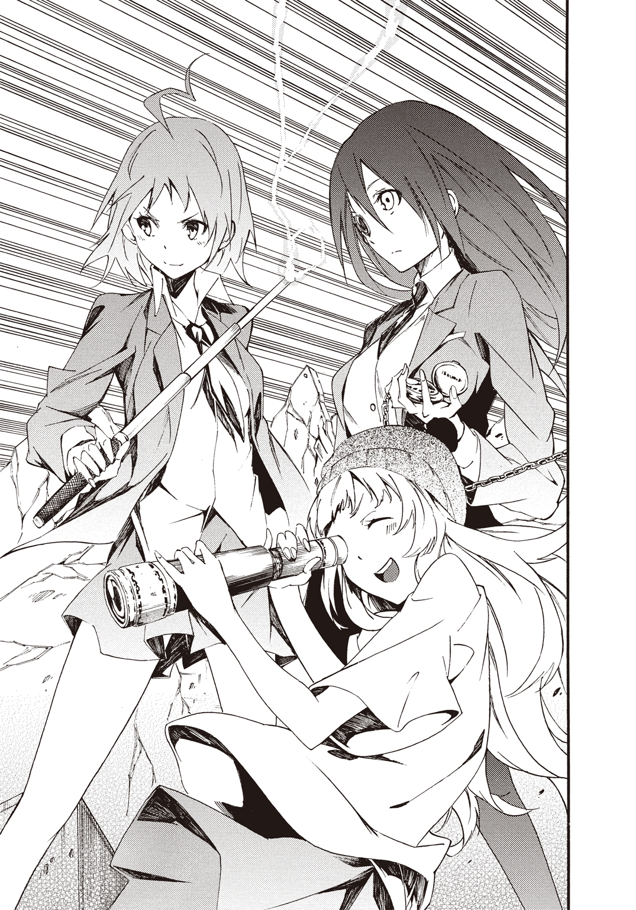
望遠鏡をのぞき込んだままグリニッジさんが声をあげる。
「うわぁうわぁ！ 全身を覆う装備なんて大聖堂級だね。あとすっごく怒ってる。それと好きな人の裸を見て混乱してるよ！」
「大聖堂って......マジか！ だがしかし遺産力の大きさが実戦での勝敗を決定づけるとは限らないし！」
「ヴァールベリ前を見て。二秒後に攻撃が来るわよ」
「三太郎をいじめる人は、みんないなくなれえええ！」
ラ・ショー＝ド＝フォンさんの予言通りミリアはランスを構えて突進した。壁を背にしていた三人が左右に飛び退く。
ミリアのランスによる突進は部屋の内壁を易々と貫通した。
外壁にまで達したランスの先端が引き抜かれると、崩落するように壁に大穴が開いて校庭との風通しがずいぶんとよくなる。
ダイナミックな器物破損だ。
普通の女の子と違うとは知っていたけど、これはいったい......。
遺産少女ってなんなんだ!?
ヴァールベリさんが舌打ちした。
「ったく。いくら結界内だからって好き勝手して」
ミリアは顔を真っ赤にさせてランスを振り回した。おそらくほかの学校よりも広めな更衣室だけど、長いランスを自由に使えるスペースなんて......ない。
そんな俺の心配をよそにランスは壁をうがち、カーテンもろとも窓まで寸断しロッカーをアルミ缶みたいにべっこべこに凹ませた。
物理法則とは別の力が働いているようだった。
ミリアの無差別攻撃に、いつの間にか三人は部屋の隅に追い込まれていた。床に転がったままの俺は難を逃れているけど、このままでいいわけがない。密かにズボンをあげてベルトを締める。相変わらず上半身裸だけど、そこはそれだ。
それにしても音が消えた瞬間から身体が重たい。だるい。まるで急性のインフルエンザにかかって高熱に浮かされているみたいだ。それなのに意識だけは朦朧とせず、はっきりしていた。むしろ普段よりも研ぎ澄まされているとさえ思える。
ラ・ショー＝ド＝フォンさんが右目のモノクルで、じっと懐中時計の中を走る秒針を追いかけながら呟いた。
「五秒後に何かくるわね」
「何かってなんだよ！ グリニッジ解析は？」
「うーん。わかんないけど超すごそう！」
ゆ、緩い。イギリスは天文学が発達したおかげで世界中に植民地を持つ「日の沈まない国」になった......っていう話を聞いた事があるけど、グリニッジさんからは大英帝国のすごみみたいなものは感じられないな。
って、冷静に分析してる場合じゃない。早くこの喧嘩を止めないと。
ミリアはランスを身体の後ろに引きながらスッと腰を落とした。力を溜めるような動作だ。
「死中に活を求めるってやつだな！」
ヴァールベリさんが飛び出してミリアに単独で仕掛ける。タイミングが絶妙だ。ミリアが溜める動作に入った瞬間の奇襲だった。
ミリアから強烈な一撃が来る前に、ヴァールベリさんは懐に飛び込むことに成功した。こうなると得物の大きなミリアは不利だ。小回りの利くスタン警棒の一撃を、この近距離で防ぐ手立てはない。
目の前で行われている現在進行形の光景に、ゆっくりとスローモーションがかかった。まるで自分の意識だけが加速しているようだった。
身体は重く思ったように動いてくれない。なのに思考だけが俺の身体からかけ離れるように速度を上げていく。何だ......何なんだこれ。俺までどうにかなっちまったのか!?
ヴァールベリさんがスタン警棒でミリアの右肩を狙った。白い陶器のような鎧がミリアの身体を守っている。
「これでどうだっての！」
スタン警棒が炸裂した。ミリアの肩から右腕にかけて、鬼火のように青白い雷光がほとばしる。
「いくら硬い装甲でも電流は防げないっ！ これで武器も振るえないだろ？」
ヴァールベリさんがニヤリと笑った。すかさずグリニッジさんが、ふわっとした口ぶりで忠告する。
「ヴァールベリちゃん。ダメージ通ってないよ」
「いいんだよ動きさえ止められれば」
「スタンも入ってないしぃ」
ヴァールベリさんがきょとんとした顔になった。
「はぁっ？」
「ミリアちゃんの装甲外壁には、すんごい加護がかかってるみたいだねぇ」
「マジかよ!?」
ラ・ショー＝ド＝フォンさんがうなずいた。
「次、二秒後ね」
「――ッ!!」
俺は重たい身体を引きずるようにして力を振り絞り立ち上がった。ヴァールベリさんめがけてタックルする。
「ど、どうして結界内で普通の人間が動けんのさ!?」
無我夢中で俺はヴァールベリさんを床に組み敷き押し倒す。
それとほぼ同時に、ミリアはすくい上げるようにランスを繰り出した。ボクシングのアッパーカットみたいな軌道を描いて天井にランスの先端がヒットした瞬間、更衣室の屋根が跡形も無く吹き飛ぶ。もう無茶苦茶だ。
こんなのひとりの女の子の力じゃない。まるで重機か台風だ。
天井まで吹き飛ばしたミリアが悲鳴をあげる。
「三太郎が女の子を押し倒してる......三太郎のばかああああああああ！」
「違うんだミリア落ち着けって！」
俺は身体を起こした。自分でも動きが鈍いとわかる緩慢な動作だ。熱っぽさはいつのまにか、空気が水のように身体にまとわりつく感覚に変わっていた。浮力の無いプールに頭のてっぺんまで沈められたような感じがした。
ミリアは泣きべそをかいて俺の顔をじっと見つめる。女の子を泣かせることへの罪悪感と、理解を超えた現状に俺もどうしていいのかわからない。
ミリアが吠えた。
「ちょっと会えなかった間に......三太郎はパンツ一丁で女の子に足で踏まれるのが大好きな人になっちゃったの!? いきなり上半身裸で背後から女の子にのしかかるような変態さんになっちゃったの!?」
ちょっと......じゃない。俺にとっては七年も......だ。
それにさっきはパンツ一丁だったけど、別にグリニッジさんに踏まれてはいなかったし、喜んでもいないし、今のだって押し倒したのは、あのままじゃヴァールベリさんが危ないって思ったからだ。
「俺は変態じゃない！ 落ち着けミリア。俺の目を見ろ。これが変態の目か!?」
俺はまっすぐな眼差しでミリアを見つめた。やましい気持ちなんて何もないんだ。
青い瞳を少し伏し目がちにしてミリアはうなずいた。
「......う、うん......あ！ えっと、変態っていうのを肯定したんじゃなくて......昔の三太郎っと同じ目だからっていう意味での『うん』だよ......」
よかった。どうやらミリアはわかってくれたみたいだ。けど......。
それはそれとしても心外だな。いなくなってからずっとミリアは連絡ひとつくれなかった。
「時間だってちょっとじゃない。ずっと、ずっと七年間も待ってたんだぞ！」
つい、声が大きくなった。
ミリアの事情を普通の人間の俺がわかるなんて言うのは、おこがましい事だと思う。
それでも俺だって......ずっと会いたかった。初めての......たったひとりの親友なんだ。
ミリアが帰ってこなかった小学三年生のあの夏の終わりに、俺は生まれて初めて友達を失う悲しさを知った。
それ以来、誰かと深く関わり合う事を恐れるようになった。別れが辛いなら最初から親しくならない方がいいって、心のどこかで思うようになっちまったんだ。
「だから俺はミリアと再会できて嬉しいんだ。なのに何でこんな事になるんだよ！ 壁も天井も吹き飛ばすなんて、校則違反どころか退学ものじゃないか。せっかく会えたのに......それに何より、誰かを傷つけるなんてミリアらしくないよ」
他人に暴力を振るうような女の子じゃなかったのに......これも遺産とリンクした影響なんだろうか？ だったらあんまりだ。
ミリアの手からランスが落ちて床に転がり......ふっと消えた。同時に彼女の装着していた白い陶器のような鎧も光に包まれ消えてしまう。
「ごめんね三太郎。三太郎が襲われてるって思って......わたし......こんな事になっちゃうなんて知らなくて」
確かにパンツ一丁で床に這いつくばっていた俺にも責任がある。
ラ・ショー＝ド＝フォンさんがため息混じりに呟いた。
「能力は必要に迫られることで遺産少女から引き出されるものだし、誰かを守りたいという気持ちが騎士の姿をとらせたのかもしれないわね」
サグラダファミリアはスペインにある。
スペインで騎士というと......俺はラマンチャの男――ドン＝キホーテを連想した。巨大な風車を巨人と思い込んで挑んだ騎士に憧れる男の話だ。
騎士......か、それにしてはなにかが「足りない」気がする。またがる馬がいないのは仕方ないにしてもミリアは片手でランスを軽々と振るっていて、空いた方の手を使っていなかった。って、こんな時に何を分析してるんだ俺は。
ともあれミリアの守りたいという理想が具現化して、今、この時に花開いた......という事らしい。
という事は俺はミリアに守られる対象としてみられていた？
お互いピンチの時には助け合うと約束しただけに、一方的に助けられるというのでは、男としてかなり情けない。
立ち尽くす俺と戦意喪失したミリアを交互に確認してから、ラ・ショー＝ド＝フォンさんが宣言した。
「どうやら戦闘終了ね。データは取れたかしら？」
グリニッジさんが小型望遠鏡を手品のように手の中から消失させて、微笑んだ。
「うん！ 期待の大型新人だねぇ。はい、ヴァールベリちゃんも立って立って」
手を差し伸べられて、床に仰向けになっていたヴァールベリさんが立ち上がった。スカートの上からお尻のあたりをパンパンっと叩いて俺とミリアに抗議する。
「あ、あのなぁ！ さっきのは自力で避けられてたし、和久が邪魔しなきゃカウンターで勝ってたんだからな！」
俺がタックルしたのは余計なお世話だったってことか。ミリアには誰も傷つけて欲しくないし、ヴァールベリさんにも怪我なんてしてほしくない。というかミリアのあの攻撃を受けたら怪我どころじゃ済まないと思う。
冷静になったところでミリアがヴァールベリさんに頭を下げた。
「ご、ごめんなさい！ 急に襲いかかってごめんなさい！」
ヴァールベリさんはあっけらかんとした表情で返した。
「いいっていいって。こっちがわざと挑発したんだしさ。怪我するようなら、あたしの自業自得だっての。その様子じゃ結界の事も知らない......どころか能力の発現と解除もまともにコントロールもできてないみたいだしな」
ミリアが伏し目がちになって不安げに聞き直した。
「あ、あの、能力ってなんですか？」
それは俺も知りたいところだ。ラ・ショー＝ド＝フォンさんが懐中時計をしまってうなずいた。
もちろん、収納したという表現は正確ではなくて、懐中時計は彼女の手の中から忽然と消えたんだけど。あれも能力ってことか。となると、どうやら遺産少女は力の象徴となる道具を自由に出したり消したりできるみたいだ。俺の中で常識が揺らぎまくる。
「能力というのは遺産固有の力の事よ。戦闘で使えるものばかりではないのだけれど、桜田さんは純粋な戦闘タイプみたいね」
「あのねあのね！ 観光地でお客さんが多かったり有名だと強いんだよぉ」
ヴァールベリさんがムスッとした顔になった。
「グリニッジはメジャーなのにアホだけどな」
「あ、アホじゃないもん！ お星様きらきらきれいでしょ？」
「反論になってねーって。いくら有名でもリンクした遺産との同調率が低いと、せっかくの遺産力も十分に発揮できないっつーのに」
グリニッジ天文台といえば世界の時間の基準点だ。グリニッジ子午線。経度〇度......となると天文台のイメージだけじゃなく、本来ならグリニッジさんの能力って、時間に関係しているのかもしれない。まぁ俺の妄想なんだけど。
「ふぇーん！ ちゃんと遺産力を使えてるもん！ ヴァールベリちゃんのいじわるぅ」
ほっぺたを膨らませるグリニッジさんに、ヴァールベリさんはぷいっとそっぽを向いた。
モノクルを外して、柔らかそうなハンカチでレンズを磨きながらラ・ショー＝ド＝フォンさんはため息混じりだ。
「二人ともそれくらいにしてちょうだい。ええと、続けるわね。さらに能力には有名度というか......地元補正的なものもかかってくるのよ。わたしもヴァールベリも、日本ではそれほど知られていないから能力は低下してしまうわ。その点、あなたは違うわね」
その言葉はミリアに向けられていた。ミリアは頭を抱えこむ。
「えっと、えっと......三太郎助けて！ 難しくてよくわかんないよ！」
俺が三人の話についていけるのは、世界遺産に関して偏った知識があるおかげだ。遺産少女であるミリア自身が、遺産が持つ能力について知らなかったのは意外だけど......。
そういえば小学生の時もこんな感じだったっけ。二人で父さんの書庫にあった世界遺産の資料を見ていた時も、ミリアはよく頭を抱えていた。
ちょっとでも難しい単語が出てくると、それだけでミリアは思考停止状態になりがちだった。だから俺は教えてあげたくて......困った顔の彼女に笑顔を取り戻してほしくて、世界遺産について気になる事があると調べるのが習慣になったんだ。
俺はミリアにわかるようにざっくりと説明した。
「簡単に言えば有名な遺産とリンクしてる遺産少女は、すごい力を秘めているって事だよ。そしてミリアは世界遺産の中でも超有名って事だ」
「そうなの？」
きょとんとした顔のミリアに俺はゆっくり大きくうなずいた。
「ああ。間違いない。サグラダファミリアは旅番組や世界の不思議を発見するクイズ番組なんかで、何度も日本のテレビ局に取り上げられてるからな」
偉大な建築物はそれ自体が信仰の対象になる。もちろん日本にだってたくさんある。
世界最古の木造建築である法隆寺をはじめとした奈良や、東照宮のある日光に、街そのものが文化財みたいな京都。それに中尊寺のある平泉。姫路城に首里城もいいんだけど、俺が好きなのは広島県にある厳島神社だ。
ちなみにまだそのどこにも行ったことがない。
あれだけ引っ越しをしたのに......なぜか世界遺産のある町には行けないんだよな。
ええと、それはそれとして。
厳島神社は佐伯氏が建立してから、平清盛が造営して以降も歴代の権力者に敬われながら、焼失する度に再建されてきたっていう歴史があるんだけど......何よりあの朱色がクールだと思う。
だから大鳥居に硬貨を刺すのはやめてください！ やってる人間があの行為をお参りとか善意のつもりでしてるもんだから、遺産少女とリンクしたとしても遺産の保護力が作動しないだろうし！
って、俺は誰に訴えてるんだ。ともかく有名な遺産の方が強いって事で、日本では日本の遺産が強くなるって事になるのかもしれない。
世界遺産に順番や序列をつけるのは、何だか変な話だと思うけど......。
そうなると、やっぱり世界史の教科書に載ってるような遺産ともなれば、日本でも超がつくほどのメジャー扱いになるのかな？
ギリシャ建築の最高峰！ パルテノン神殿なんてドが付くくらいのメジャー遺産だ。柱の真ん中辺りが膨らんでる工法が日本の法隆寺の柱のルーツ......なんて話を聞いたら、文明や文化が繋がってるんだなって感動すら覚える。
クフ王のピラミッドなんて、重機もない時代に人間の手で作られたのが信じられない巨大さだ。実は失業した農民たちを働かせて雇用を創出していた公共事業だったっていうんだから、驚かされる。
フランスでも屈指の観光地なのがモン・サン・ミシェルだ。城塞になったり監獄にされたりと、時代ごとに役割が変わっているのが興味深い。パリにあるエッフェル塔やルーブル美術館もたまらないし、ベルサイユ宮殿にも憧れるし、ああ、フランスまじでやばい。
ノートルダム寺院って実はいくつもあるんだ。ノートルダムは聖母マリアっていう意味合いがある。マリアを信仰する教会だ。
それらの中でもシャルトル大聖堂のロマネスク様式とゴシック様式の融合は、シンメトリックではないけれど、むしろそれが印象的だしステンドグラスのシャルトルブルーは、本当に綺麗だと思う。
ローマのコロッセオは五万人も収容できたっていうんだから、プロ野球の球場も真っ青な超弩級の巨大建築物だ。開閉式の屋根まであったなんて信じられない。
そんなコロッセオでは、剣闘士が猛獣や同じ剣闘士と戦っていた。その戦いの敗者を殺すかどうか観客の声を皇帝が直接聞いて決める......なんて事をしていたらしい。
皇帝が自分の人気を市民の反応を見て実感していたのかも......と、想像すると権力者や支配者も治める民に支持されてなんぼのものなんだな......なんて思ったりしてしまう。
ああ、どの遺産も実物を見た事が無いのが悔しくて仕方ない。
って、あれ？ いつの間にか俺は四方から四人に囲まれていた。
正面に立ってミリアが俺の顔をのぞき込む。
「どうしたの？ さっきからぼーっとして」
「な、なんでもないよ。俺は大丈夫だから」
身体は熱っぽくて重たくて辛いはずなのに世界遺産の事を考えていたら、一気に思考が加速してしまった。気を抜けばマチュピチュやアンコールワットの事まで、妄想含みで垂れ流してしまいそうだ。
俺の右隣であきれ顔のヴァールベリさんが呟いた。
「んで、なんでおまえさんは結界の中で普通に行動できてるんだ？」
「へ？ お、俺が......なにか？」
ヴァールベリさんは右手にスタン警棒を手にしたままだ。
「まだ、あたしが能力を発動してるから結界の中なんだけど。つうか和久一馬の息子なのにそんな事も知らないのか？」
「そんな事って言われても......」
「世間一般に公開されてる情報までしか知らない......ってか？ すっとぼけてるんなら容赦しないぞ」
「とぼけてなんていないって！」
ヴァールベリさんが肩を落とした。
「はぁ......そのリアクションじゃ本当に知らないっぽいな。いいか和久。あたしらが能力を使うと、その間だけ時間が停止するんだ。世界から切り離されるっていうか、もうひとつの別世界に繋がるっていうか......ともかく遺産少女が能力を発動させて交戦状態が確認されると、周囲に被害が及ばないよう安全装置が作動するんだよ。そして、そこで行われた破壊に関してはすべて無かったことになる。あたしがこの能力を解除すれば、結界が消えてこの天井も壁の穴もすっかり元通りって寸法さ」
ミリアが目を丸くさせた。
「ほ、本当に？ よかったぁ......」
安心したのかミリアは脱力してへなへなと床にへたりこんだ。
「おっと安心すんのは早いって。元に戻るのはあくまで結界内でも背景化したものだけだ。結界の中で戦闘してるあたしら自身は、この時ダメージを受ければそれは結界が解除されても残るんだ。遺産少女は不老不死みたいに言われてるけど、受けたダメージの回復には時間がかかるし......最悪、戦闘でのダメージが大きすぎれば死ぬ事だってあり得る」
なんだって......それじゃあまったく「よかった」じゃ済まないぞ。
ラ・ショー＝ド＝フォンさんが補足するように呟いた。
「学園が日本に置かれた理由は思想的中立さもあるけれど、地元補正で現地にいると遺産力が高くなりすぎてしまう遺産少女を隔離して、その力を弱めるっていう意味もあるのよね。特に宗教的な遺産は地元補正でとんでもない能力になってしまって、遺産少女自身がコントロール不能になりがちなの。暴走してしまうって事ね」
「じゃあミリアもそれで日本に戻って来たのか？」
ミリアは首を小さく左右に振った。
「知らなかったけど、そうだったんだ......」
ミリア自身も学園に入学する事になった経緯を、ちゃんと理解していなかったみたいだ。
結界という安全装置があったとしても俺には気がかりでならない。
「ラ・ショー＝ド＝フォンさん。遺産少女同士の戦闘って多いんですか？」
「心配はいらないわ。小競り合いはあっても本気の殺し合いに発展した事なんて、これまで一度も無かったし......。ただ、どういった力をもった新入生が来るかはわからないから、わたしたちはこうして調査をする事にしたの。彼女はまだ遺産少女として力をうまく使えないようね。それに戦闘タイプでも好戦的な性格とは限らないみたいだし」
戦闘タイプっていう事は、他にもいくつか分類があるんだろうか。ヴァールベリさんはミリアと直接戦ったから戦闘タイプなのかもしれない。グリニッジさんはさしずめ分析タイプで、ラ・ショー＝ド＝フォンさんは支援とか援護タイプってところか。
グリニッジさんが万歳してみせた。
「好きな男の子の事になると見境なくなるみたいだけどねぇ」
瞬きする間にミリアの顔が耳まで赤くなった。
「す、すすす好きとかじゃないから！」
声がひっくり返るミリアに、俺も一瞬ドキッとした。そ、そうだよな。好きって言うのはその、そういう感情があったとしても、あくまで友達的な意味でだろうし。
ヴァールベリさんが苦笑いで告げる。
「つうわけで悪かったな。こっちは警戒してて、ミリアは誤解してて、それでこんな形で自己紹介になっちまったけど改めてよろしく」
「よろしくねぇ」
「よろしく。桜田さん」
「は、はい！ 遺産少女として至らないところもありますが、よろしくお願いします！」
「だから敬語はよせって。んで話を戻すけどさ......和久はなんで結界内なのに動けるんだよ？ 結界内で動けるのは遺産とリンクしたあたしらだけって思ってたんだけど」
「そう言われても......俺にもさっぱり」
「ったく使えないやつだな。ま、いっか。知らないんじゃ仕方なし。んじゃ、そろそろ結界解くぞ」
ヴァールベリさんがスタン警棒を壁に押しつけてコンパクトに畳んだ。その手からグリップだけになった警棒が消えた瞬間、まるで映像を逆再生するみたいに崩れた壁も吹き飛んだ天井も元に戻る。圧巻の光景だ。
そして、俺の身体にまとわりついていた重さや熱やだるさや息苦しさが、すーっと引いていった。俺は安堵の吐息混じりに呟く。
「元に戻った......」
ヴァールベリさんが自慢げに「だろ？」と笑う。
壁や天井の事だけじゃなく俺自身の体調の変化の事もなんだけど......もしかしたら、結界内にいたからあんな風に感じたんだろうか。
俺が特別だったのか、ミリアに「守るべき対象を結界内で行動させる」みたいな能力があったのかはわからない。けど、今の俺は遺産少女しか立ち入れない禁断の領域に、入る事ができるみたいだ。
ミリアが声をあげた。
「あっ......じゃあ三太郎がもし結界内にいて何かあったら......」
言われて俺もようやく理解した。あんな戦いに巻き込まれようものなら、普通の人間の俺なんてひとたまりもない。命がいくつあっても足りないぞ。
気づいた瞬間、始業を知らせるチャイムが鳴った。
当然、体育の授業は四人とも遅刻扱いだ。
第三章 週末デートタイム
世界樹学園は東京湾に建造された人工島内にあった。島は東京、千葉、神奈川と海底トンネルを通じて繋がっている。トンネルには鉄道と道路網が延びていて、三都県を結ぶ大環状線を形成していた。
なので人工島から都内にアクセスするのも地下鉄一本と、とても便利だ。
ちなみに学園の一般生の大半が電車通学だそうな。学園には女子寮もあるけど、それらは遺産少女専用だった。
俺はというともちろん男子寮なんてものは無いため、この春からアパートにて一人暮らしである。学園までは徒歩十五分。ミリアたちが暮らす女子寮にもほど近い。というか女子寮とは徒歩五分のご近所という立地環境だった。
俺はこれからの三年間をこの部屋で過ごす事になった。
初めてのひとり暮らしとなる我が家は、狭いながらもコンビニまで徒歩一分と便利である。
この世界樹学園のために用意されたであろう巨大な人工島内には、コンビニはもちろん、ホームセンターやドラッグストアに巨大なショッピングモールなどなどひと通り揃っている。
人工島だけに史跡旧跡の類いは無い。学園を中心とした暮らしやすい計画都市......といった印象だ。ある意味、歴史を持たない首都として有名な計画都市のブラジリアに近いのかもしれない。
買い物も娯楽施設も、ほとんど島内で完結してしまう環境なのには、きちんと理由があった。
遺産少女は学園の許可が下りない限り人工島の外に出られないんだ。
時計塔先生はそんな中でも例外で、遺産少女の中でもとびきり優秀だったらしい。
学園も飛び級で卒業し、海外留学するとそちらも飛び級で卒業して教員になったのだとか。
全部、昼休みに学食でミリアと一緒に情報通のヴァールベリさんから聞いた話である。
昼食の間も、ミリアはどこかよそよそしい感じだった。
午後の授業を乗り越えて、ようやく放課後になり俺は解放された気分になった。カバンを手にして立ち上がるとミリアの背中に声をかける。
「ミリアはこの後どうするんだ？」
彼女は振り返ると困ったように眉を八の字にさせた。
「え、えっと......」
更衣室での事件からずっとミリアはこの調子だ。どことなくおどおどしている。さっきは向き合ってくれたのに、今は俺の目を見てくれない。これも七年間のブランクのせいだろうか。長かった空白期間は簡単に埋まりそうにないな。
俺もミリアもお互いに再会の衝撃から落ち着いてきて、時間的な距離感を改めて感じているんだと思う。
だからといってこのままっていうのは、寂しい。せっかくこうして再会できたんだから、俺はもっとミリアと話したかった。
「もし時間があるなら、散歩がてら学園内を一緒に歩いてみないか？ 話したい事もたくさんあるし」
ちらりと横目に、ヴァールベリさんがラ・ショー＝ド＝フォンさんに羽交い締めにされて、グリニッジさんに足を持ち上げられて担架みたいに運ばれていくのが見えた。
教室から廊下に出ながら、ラ・ショー＝ド＝フォンさんが俺にウィンクする。
「ほらヴァールベリ。せっかくの二人の再会に水を差しちゃ悪いでしょ」
「そうだよぉ。ヴァールベリちゃんはデリカシーがないなぁ」
「べ、別に尾行して話を盗み聞きして、内容を軽く盛って拡散なんてしねぇよ！ あっ！ 和久！ ミリア！ 本当だから！ こいつらが悪ふざけしてるだけだからな！ あたしは事実しか伝えないんだ！」
廊下に運び出されてからも、ヴァールベリさんは訴え続けた。
「別におまえさんらの事が気になるんじゃないからなーっ！」
三人が行ってしまったのを見送って、俺とミリアは顔を見合わせた。
「ヴァールベリさんって、ちょっとアレだけど......きっと根はいい人なんだろうな」
「う、うん。そうだね。あ、あのね......三太郎はヴァールベリさんの事......どう思うの？」
「どう......って言われても」
「三太郎はサグラダファミリア以外の世界遺産にも興味があるんだよね？ ヴァールベリさんのことも、き、気になる？」
「まあ、情報通を自称するだけあって、気になるというかこっちが彼女の動向を、ちょっと気にしておいた方がいいかな......とは思うけど。それはそれとしてヴァールベリさんはフレンドリーな人だと思うよ。俺やミリアにも積極的に話しかけてくれるしね」
「そ、そうだけど、えっと......うう」
ミリアは困ったように眉を八の字にさせた。
「あと、ちょっと男の子っぽいかな」
「そ、そうだね。ボーイッシュな感じがするよね！」
困り顔だったミリアが笑顔になった。昔から感情表現の豊かな女の子だったけど、それは今も変わってないんだな。ほっとした。
ともあれ話を続けよう。
「それで、さっきの事なんだけど......いっしょに学園を見てまわるのってどうかな？」
ミリアはうつむいて伏し目がちになった。
「えっとね......寮の門限までなら、いいよ」
「よかった。じゃあ......とりあえず適当にぶらついてみよう」
ミリアが席から立ち上がって、カバンを手にするとそっと俺の方に手を伸ばした。彼女の右手が俺の左手に触れる。
「あっ！ ご、ごめんね三太郎。もう、子供じゃないのにね」
七年前、ミリアと仲良くなってからの楽しかった記憶が甦る。よく二人で手をつないで歩いたっけ。俺が手をつないでないとミリアはたんぽぽの綿毛みたいに、ふわふわとどこかに行ってしまうんだ。そして......割と高い確率で迷子になる。だから俺はミリアの手を離さないよう、しっかり握ってた。それが習慣になって、いつの間にかミリアの方から俺の手を握ってくれるようになったんだ。
「俺は別に構わないぞ」
「え、えっと......じゃあ......」
ミリアはそっと俺の手を握った。教室内に残っていた一般生の視線が......集まっている。それに気づいてミリアは慌てて手を離した。
「や、ややややっぱり普通にしてるね！ 高校生にもなって変だよね！」
俺も実は......恥ずかしかった。さすがに......友達同士なんだし。
「あ、ああ。ええと......じゃあ、とりあえず一階の昇降口に行こう。学園の施設案内図もあったはずだし」
「うん」
更衣室で俺を守ろうとした勇ましい姿が、まるで噓みたいにミリアはしおらしい。
俺達は二人並んで教室を出た。
昇降口付近は、これからグラウンドに出る運動部の生徒や帰宅する生徒たちでごった返していた。それを避けるようにして昇降口脇の掲示板スペースに向かう。
掲示板にはめ込まれた大型ディスプレイには、校内の案内図アプリが走っていた。タッチパネルになっていて学園内の施設を検索できるみたいだ。
アプリはダウンロード可能なので、迷子にならないよう俺もミリアもそれぞれのスマホにアプリを落とした。
スマホを手にしたままのミリアに俺は提案する。
「せっかくだしアドレス交換もしておくか」
「えっ？」
「なにか不都合があるのか？」
「そんな事ないよ！ じゃあじゃあＬＩＮＥも交換しよ！」
慌てるミリアを見てホッとする自分がいた。困っているミリアに安心するなんて、何だかいじわるな気もするけど、遺産少女になってガラッと変わってしまったんじゃないか......と、実は心のどこかで心配してたんだ。
ミリアはミリアのままだった。明るくて元気で少しおっちょこちょいで......。
アドレスを交換し終えて、さっそく俺は校内の案内アプリを起動させる。
「部室棟なんてあるんだな。ミリアは部活はしないのか？」
「あのね、体育の時にヴァールベリさんに教えてもらったんだけど、遺産少女で部活をする人って少ないんだって」
「へー。それはまたどうしてだ？」
「普通の人には無い特別な力があるから......かな。授業で能力を使うのは禁止なんだって。普通の子と、できるだけ平等に溶け込むようにしなきゃいけない......って」
言われるまで気づかなかった。当事者のミリアだって、自分の力に気づいたのはつい数時間前のことだ。
運動部にしても文化系の部活にしても、遺産の力を借りて部活動をするのは普通の女の子からすれば不公平だ。
対戦する競技で遺産の能力で相手の次の行動がわかったりしたら、駆け引きで圧倒的に有利だもんな。遺産少女同士の戦闘じゃない限り、例の「結界」も発動しないみたいだし、たとえ能力を使って無くても、他の競技者から疑われてしまう時点でスポーツなんかはやりづらそうだ。
もちろんスポーツだけじゃない。勉強にしたって何にしたって。遺産少女は特別だからと、差別とまではいかないまでも必ず区別されてしまう。
「悪い......変な事聞いて。ミリアたちって普通じゃな......と、特別なんだもんな」
いらん事を言いかけてしまった。これじゃあ言ったのと同じだ。焦る俺にミリアまで焦りだした。
「三太郎が謝る事じゃないよ！ 遺産少女が普通じゃないのは仕方ないんだし。それに、わたし個人としては部活に入部するよりも、自由時間がいっぱいある帰宅部の方がいいし。これから三年間、時間が合えばだけど三太郎と一緒に帰れるんでしょ？」
遺産少女の女子寮は俺のアパートの近所だ。当然ミリアとは登下校で同じ道を通ることになる。
「あ、ああ。途中までだけど......」
言いかけて気持ちが重たくなった。途中までなんだ。ミリアと一緒に帰れるのは。
俺は普通の人間でミリアは遺産少女になってしまった。三年で卒業する俺と、高校三年間を繰り返す......ミリア。
俺が大人になっても、おっさんになっても、おじいちゃんになっても、棺桶に収まっても......ミリアが遺産少女であるうちは今のまま変わらない。
遺産と女の子を分離する方法が見つかればいいけど、時間が経つほど俺達は離れていく。もしかしたら、ひとつになってしまったものを元に戻す方法なんて無いのかもしれない。
ミリアと世界の時間の隔たりは、この先も続いていく。俺と離れていた七年どころじゃない。何年。何十年。何百年と。
その事をミリアは知っている。気づいている。わかってる......はずだ。
「俺、毎日ミリアを寮の前まで送るよ」
「ま、毎日は無理だよ。じゃない！ えっと、三太郎に迷惑がかかるのは、わたしも本意じゃなくって......だから」
「迷惑なもんか！ 俺がそうしたいんだ。朝だっていっしょに登校しよう！ いいだろミリア？」
「けど、さっきみたいに色んな人に見られたら恥ずかしいし......」
彼女の手をとって、少しだけ強く引いた。
「三太郎。ど、どこに行くの？」
「誰も居なさそうなところだ。これだけ広い学園なら、どこかに良い場所があるって」
「二人っきりで？」
「人の目が気になるなら、その方が恥ずかしくないだろ？」
「恥ずかしいよ！」
ミリアは耳の先まで真っ赤になった。立ち止まると俺をじっと見つめる。
「どうしたんだミリア？」
「三太郎の......エッチ」
「はぁ？」
「女の子を二人きりの場所に連れ込もうとするなんて、い、いけないんだよ！」
慌てて俺はミリアの手を離した。そういう風に受け取られるとは......。
俺はミリアがスペインに行ってからの事をゆっくり聞きたいだけで、下心なんてない。そもそもミリアは幼なじみで......べ、別に異性として意識した事なんてなかったのに。
すごく綺麗になったし、成長したミリアにドキドキする部分もあるけど......やっぱりミリアは俺の......親友なんだ。
「そ、そういうつもりで言ったんじゃないって！ 誤解すんなよ！」
「じゃあ、なんで更衣室でパンツ姿だったの？」
今その話を蒸し返されると辛い。
「更衣室で脱ぐのは普通のことだろ！ つうか、こんなところで俺がパンツ一丁だった事を公表するなって。ただでさえ男子ひとりで肩身が狭いんだから」
と、言った瞬間に俺は後悔した。
下校中の一般生の動きがぴたりと止まり、視線が集まっている。主に俺に。
「あの、ええと......やだなぁミリアったら。冗談きついって。はははは」
ミリアは肩を落とした。
「今日は先に帰るね。また明日ね......三太郎」
寂しげな眼差しのまま背を向けるミリアに、俺は手を伸ばして......結局何もできなかった。伸ばした腕が空を切りぶらんと下がる。
ミリアの背中が昇降口からだんだん遠く、小さくなっていく。
足が動かない。追いかける一歩目が踏み出せない。
追いかけていって嫌われるのが怖かった。
この先も、ずっと俺はこうなんだろうか？
ミリアの気持ちがわからない。話したい事がたくさんあるのに、うまく彼女に伝えられない。空白の七年間を俺は埋めたかった。何でも話し合えたあの頃に戻りたかった。ミリアに何があったか聞きたかった。
もしミリアが悩んで苦しんでいるなら力になりたいんだ。
けど......三年後を思うと憂鬱になる。俺が何をしてもミリアを救えない。話を聞いたくらいで、ミリアの事をわかった気になるなんて俺の傲慢だ。
ミリアの事は放っておけない。なのに俺にできる事のすべてが、焼け石にかける水にすらならない。
特別な存在である遺産少女とただの人間との間には、悠久の時の流れという大きな隔たりがあった。
「......和久三太郎？」
呼び声に振り返ると見覚えのある少女が立っていた。艶やかな黒髪に、赤いルビーを思わせる瞳が印象的だ。
今朝、正門であったニア先輩だった。そういえばニア先輩も遺産少女だよな。けど、そんな名前の遺産なんてあったっけ？ ニア......ニア......うーん、ぱっと思いつくのはモシ・オア・トゥニヤだ。現地語で「雷鳴とどろく水煙」という意味を持つ世界三大瀑布のひとつ、女王の滝ことヴィクトリアの滝だ。
「あの、ぶしつけな質問ですけど、ニア先輩ってヴィクトリアの滝なんですか？」
ニア先輩は首を左右に振った。
「......自然遺産の少女は現在、未確認」
「そ、そうなんですか」
世界遺産は大きく二つに分けられている。建造物や遺跡などの文化遺産と、地形や生態系、景観などの自然遺産だ。それらを合わせもっているのが複合遺産になる。
富士山は最初は自然遺産として登録申請をしたけど、ゴミ問題なんかで見送られたんだよな。そのあと富士山を中心とした文化という形で複合遺産として認められたんだっけ。
ハッ......またしても遺産のことで頭がいっぱいになっちまった。
「......どうしたの？」
「な、なんでもありません」
「......悲しそうな顔をしているわ」
「俺が......ですか？」
ニア先輩は小さくうなずいた。こうしてみると、ニア先輩って小柄で抱けば折れてしまいそうな華奢な人だ。そんな人に心配されるほど、俺は絶望的な表情をしていたんだろうか。
俺の顔にまで出る心配事というのは、もちろんミリアの事だ。
今日、出会ったばかりの先輩にこんな話をしていいのかと思うのに自然と口が開いた。
「あの、俺......ずっと会いたかった幼なじみの女の子と、この学園で再会したんです。けど、彼女は遺産少女になっていて......彼女の力になりたいけど、どう接していいのかわからなくて」
「......そう」
「すみません変な話をして！」
「......かまわないわ」
「先輩こそ、どうして俺に声をかけてくれるんですか？」
「......わからない」
ニア先輩ってちょっと変わった人みたいだな。わからなくても心配してくれるなんて。
「ああ、きっと男子が珍しいんですね？」
「......そうかもしれない」
ニア先輩はじーっと俺の顔を見て黙り込んだ。
妙な空気だ。なにか話さなきゃと思うのに言葉が出ない。
「......デートしたら？」
「きゅ、急になにを！」
「......桜田・Ｆ・ミリアをデートに誘ったら？」
「あれ？ 何でミリアの事を知ってるんですか？」
俺は幼なじみとしか言ってないのに。
「......ヴァールベリ」
納得しました。ヴァールベリさん、まさか怪情報を電波に乗せて発信してないだろうな。
というかえーと......エート......デート......デート......。
「デートって言われても......って、で、でででデート!?」
「......遺産少女の人間性を維持するという名目で、外出許可を申請できる。寮の門限はあるけれど島外に出る事もできるわ」
「ミリアを誘ってデートしろって言うんですか？」
「......長い時を経るほどに、遺産少女の人としての心は死んでいく。けれど、思い出を作る事で遺産少女は人間の心を保つ事ができる。あなたなら、彼女に思い出の種を蒔く事も可能なはず。遠い未来、あなたが彼女の思い出になったとしても、あなたが彼女の心の中に育てた記憶の花園があれば、彼女は人として生きていられるのよ」
「人として......か」
思い出が消えれば人ではなくなるみたいだ。それは恐ろしく寂しく思えた。
「......あなたが何をしても彼女のためになるという事よ」
「俺が......何をしても？」
俺がミリアの隣にいられなくなっても、思い出があればミリアの助けになる......って、事なのか？
「......それに遺産である前に、女の子だという事を忘れないで。いつか訪れる終末や、遠い未来を恐れる前に今を大切にしてほしいの」
俺の心は見透かされていた。ニア先輩がそういう能力を使ったのかすら、俺には判断がつかない。
ニア先輩は俺に背を向けた。
「......言いたい事はそれだけ。さようなら和久三太郎」
「え、えっと......ありがとうございます！」
廊下を歩き出したニア先輩に俺は深く頭を下げた。
今日、ミリアを一人で帰らせる事になったのは、遺産少女になった事を意識しすぎて、今の彼女ときちんと向き合えなかった俺の責任だ。
ミリアを誘ってみよう。べ、別にデートってわけじゃないけど。
けど、まいったな。いったいどこに行けばいいんだ。ミリアはどうすれば喜んでくれるんだろう？
「......池袋がおすすめ。サンシャイン。乙女ロード。タカノフルーツパーラー。エジプト展。劇場。ほかもろもろ......」
「う、うわぁっ!?」
俺が顔を上げると目の前にニア先輩が立っていた。それを言うためにわざわざ引き返してきたのかよ！
「......それじゃあ」
言うだけ言って今度こそニア先輩は去っていった。
土曜日の午前十一時。俺とミリアは揃ってＪＲ池袋駅にやってきた。
ミリアは桜色のワンピース姿だ。ヒールの低いパンプスを履いていた。ハイヒールで強調しなくても、足がすらっと長くてスタイルがいい。自動改札を出る時もどことなく彼女は颯爽として見えた。
我が家の家訓を思いだした......ってわけじゃないけど、つい言葉が漏れる。
「そのワンピース、春っぽくてミリアによく似合ってる」
「そ、そうかな......ちょっと足下がスースーしてて恥ずかしいんだけど」
「学園でもスカートだろ？」
「そうだけど、ちょっと違うの！」
ぷくっとほっぺたを膨らませてからミリアはすぐに笑顔になった。
「けど、褒めてくれてありがとう。三太郎って、そういうところは変わってないんだね」
「そういうところ？」
「女の子を褒める性格の事よ。嬉しいんだけどちょっと心配」
「俺が軟派な奴だとでも言いたいのか？」
「うん！」
子犬みたいな純粋な瞳で俺を見つめつつミリアは大きくうなずいた。
「これはだな......ええと......我が家の家訓なんだ」
「七年前と同じ事言ってるし」
「ミリアがいない七年間、家訓の改訂が無かったんだ」
少し不安そうな顔でミリアは小さく首を傾げた。
「家訓ならわたしだけじゃないよね？ 三太郎が可愛いって思った女の子には、もれなく家訓が有効なんだよね？」
「中学卒業まで男女ともに友達らしい友達はいなかったし、家訓が有効な機会もなかったな」
ミリアとの別れからずっと友達を作る事に臆病になっていて、俺は誰であろうと距離をとってしまいがちだった。ミリアのせいじゃなくて俺の自業自得だ。だから、なんで友達ができなかったのかまで、ミリアに言う必要はないと思う。
「じゃあほかの遺産の事は？」
「友達からいきなり遺産の話に飛ぶなんて唐突だな？」
「だ、だって......学園には可愛い女の子がいっぱいだし、しかも遺産少女だし......」
「今も昔も俺が一番好きなのはサグラダファミリアだ」
「ほ、本当に!? じゃ、じゃあ参考までに二番目は？」
「二番目？ うーん、難しいけどイタリアならヴェネチア......あ！ ヴァチカン市国も含めると、ちょっとおいそれとは決められないぞ。フランスなら歴代国王の戴冠式が行われたランスの大聖堂......も捨てがたいけど、やっぱりモン・サン・ミシェルだな。他にも、カルカソンヌやパリのセーヌ川沿岸地域に......ああ！ そうだヴェルサイユ宮殿があるじゃないか」
「三太郎？」
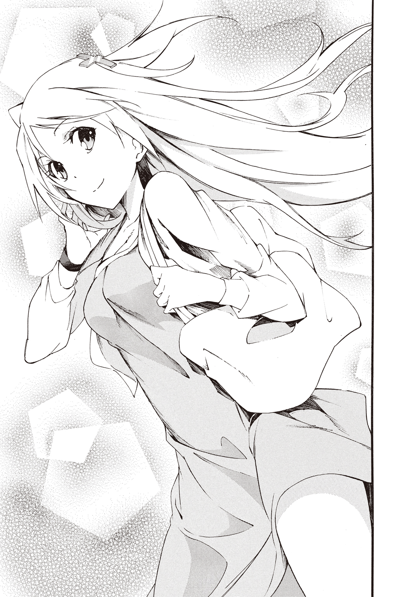
「けど、宮殿つながりでいくとロシアのエルミタージュ美術館こと、女帝エカテリーナ二世の冬の離宮も負けてないよな。それに忘れてはならないのは、オーストリアのウィーンにあるシェーンブルン宮殿だ」
「えっと......いっぱい名前が出すぎて、どれが二番かわからないかも」
「ご、ごめんミリア。つい......みんな人類の宝だから決められなくて」
「三太郎って浮気性なの？」
「浮気性って......そんな言い方しなくても......」
「だって世界遺産の話になると、こんなにスラスラ名前が出てくるんだもん」
ミリアがぷくっとほっぺたを膨らませた。
「しょうがないだろ。好きなんだから。あ！ 最後のシェーンブルン宮殿は、建物ももちろんだけど、そこに暮らしていた人たちの事を考えると思い入れが深いかもしれない」
「どういう人が住んでたの？ やっぱり宮殿だから王様？」
「マリアテレジアっていう女の人だよ。だから王様じゃなくて女王様になるのかな。夫のフランツとの間に十六人も子供をもうけたんだ。宮殿はきっと賑やかだったろうな。で、その子供達のうちのひとりが、フランスに嫁いだマリーアントワネットなんだ」
ミリアが目をまん丸くさせた。
「マリーアントワネットのお母さんなの？」
「ああ。そんなマリアテレジアだけど、夫のフランツに先立たれちゃうんだ。するとマリアテレジアはフランツのために、彼を偲んで漆の間っていうのを造って、それ以降はずっと喪服で過ごしたんだってさ。それくらい家族愛の深い人だったんだ」
「そうなんだ。三太郎は子供がいっぱいの方がいい？」
「ひとりっ子だったし、ほとんど母子家庭みたいだったから......賑やかなのには憧れがあるのかもしれない」
「そっか。昔と変わらないんだね。わたしは......ちょっと変わっちゃったけど......」
ミリアがうつむき気味で呟いた。いかん。俺、独りで一方的に喋りすぎた。
「って、これじゃあいつまで経っても池袋の街に出られないな。主に俺のおしゃべりのせいなんだけど......ともかく、せっかく許可までもらって出てきたんだから、今日は遺産のことは忘れて楽しもう！」
人の流れをかき分けて、ミリアを先導するように歩き始めた。
駅の地下道を抜けて階段を昇り外に出る。
目の前に池袋駅東口のロータリーが広がった。
その光景にミリアの瞳がキラリと輝く。
「三太郎！ すごいね！ 大都会だね！ ここからがデートの本番なんだね？」
デートじゃなくて、これはあくまで日本に帰国したばかりのミリアに、日本の今を知ってもらうという名目で行われる「島外研修」ってことになっている。
学園に申請してすぐに許可が下りたのには正直、驚いたけど......。
まあ、何はともあれミリアも元気を取り戻してくれたようだし、誘ってよかった。
俺がぼんやりとそんな事を考えている隣で、ミリアはいきなり横断歩道に飛びだそうとした。
「こっちこっち！ このまま歩いていけばサンシャインだっけ？」
すかさず手を取って彼女を制止する。信号はまだ赤だ。
「ストップミリア！ 飛び出したら危ないからッ!!」
サグラダファミリアの二代目設計主任――ガウディの死因は交通事故だった。
不思議な事に、ガウディは死の直前にサグラダファミリアの完成模型を作っていたらしい。それをもとに今もサグラダファミリアは作り続けられてるんだけど、完成予定は二〇二六年頃なのだとか。
遺産が設計者と同じ事故死とか、あり得ないから！ 遺産少女が事故死するのかはわからないけど、ミリアは戦えば傷つくし最悪それで死ぬ可能性だってあるんだ。たとえ不死身に近い存在だろうと、危ない目に遭わせていいわけがない。
「ごめん。三太郎」
ミリアはしゅんっとしてしまった。
「これはペナルティだな」
「えっ!? ど、どうしよう」
おどおどするミリアに俺は言った。
「ミリアは罰として、今日一日、俺と手をつないで歩く事。研修なんだから安全に気をつけて真面目に取り組まないとな」
ぱあっとミリアの表情が明るくなる。
「うん！ そうするね！ その方がいいよね？ わたしおっちょこちょいだし」
人なつっこくミリアは笑った。ようやく少しだけ昔の距離感に戻れた気がする。
学園にいると、ミリアには遺産少女っていう肩書きがあって、しかも超メジャーな遺産で他の遺産少女たちからも注目度が高くて、そのうえ学園内でひとりだけの男子である俺と話しているもんだから、彼女は余計に目立ってしまう。
二人で島外に出た事で、そういったわだかまりは全部、人工島においてこられたように思えた。
「じゃあ行こうかミリア？」
「三太郎といっしょにデー......け、研修できて嬉しいよ！ 予習もばっちりしてきたし」
今度はきちんと信号が青に変わるのを確認してから、俺達は歩き出した。
ミリアと手をつないでいると胸がドキドキしてくる。すごく柔らかい感触だ。とてもじゃないけど、自分の身長よりも大きい、あの尖塔のランスを軽々と振り回す手とは思えない。
ミリアが隣を歩きながら不思議そうに俺を見つめて来た。
「どうしたの三太郎？ ちょっとぼーっとしてるよ」
「どうもしないよ。ほら、行くぞ」
横断歩道を渡りきった先のＵＦＪ銀行脇で俺達は一旦立ち止まった。
ミリアはスマホの地図と辺りの景色を見回してから、銀色のオブジェを見つけて指さす。オブジェはシンプルな円柱で、オレンジ色の文字で「サンシャイン通り」と書かれていた。
「この道をまっすぐ行けばいいのかな？ 三太郎はどう思う？」
「そうだな......ええと......」
俺もざっくりと左右を見渡した。大まかな方向はあってるだろうけど、目の前の細い路地をこのまま進んでいいものか？
空を見上げてみたけど、左右をビルに挟まれてサンシャインビルの姿は見えなかった。俺は腕組みして唸るように呟く。
都会慣れしていない＆地図の読めない俺達に、さっそく迷子の黄色信号が灯った。
「うーん、スマホの地図通りならここを通っていけば良さそうだけど......というか、サンシャインも他のビルの谷間からだと、さすがに死角になって見えないんだな」
ミリアはその場でかかとをあげて背伸びをした。
「ほんとだ。見えないね」
「背伸びしたくらいじゃさすがに無理だって。予習してきたっていう割に、場所はふわっとしか調べてないんだな」
「それを言ったら、誘ってくれた三太郎もそうでしょ？ わたしはお店の下調べをばっちりしたの！」
しまった墓穴を掘った。
「俺がふわっとしか調べてなかったのは、おっしゃる通りなので反論の余地もございません。もう少し拓けた場所を探すか......それよりも交番で聞くのがてっとり早そうだな」
フクロウをモチーフにしたデザインの交番がすぐそこにあるのを見つけて、ミリアは首を左右に振った。
「警察にお世話になるなんてだめだよ！ 三太郎は女の子の前ですぐ裸になるし」
「俺を犯罪者扱いしないでくれ！」
「三太郎っていつ感情が高ぶって脱ぎ出すかもわからないから、わたし心配なの」
「それは言わないでくれええええぇ！」
「っていうのは冗談。迷子になるのもいいじゃない。冒険みたいで」
ミリアはぺろっと舌を出した。もしかして俺は今後三年間、ミリアに露出狂扱いされ続けるんだろうか。
更衣室での一件は、ミリアが遺産の能力に覚醒するきっかけになったくらいだから、彼女にとってはとても印象的な出来事だったんだろうけど......。
そのダメな思い出のところだけ部分的に記憶喪失になってくれればいいのに。
って、いやいや落ち込んでる場合じゃないぞ俺。気持ちを切り替えて先に進もう。
「冒険っていうのはいいな。上を向いて歩いてるうちに、サンシャインも見つかるかもしれないし」
サンシャイン60は地上高二三九・七メートル。都庁に抜かれるまでは日本で一番高いビルだったらしい。
「うんうん！ ともかく進んでみましょ」
ミリアは笑顔をはじけさせた。
ちなみに、サグラダファミリアの地上高は一七〇メートルほど。さすがにサンシャインには届かないけど、それでも......やっぱりバカでかい。
「ところでミリアは、サンシャインに行ったら何をするんだ？」
「ショッピングね！ かわいい雑貨のお店があるの。ほかにも色々見たいし、服だっていっぱいだし。時間があれば水族館にも行ってみたいな」
ミリアは青い瞳を細めて微笑んだ。本当に彼女は、宝石や砂糖菓子みたいな綺麗なものを集めて作ったような女の子だ。
最初に出会った時の天使という印象は、今も変わらず......むしろますます磨きがかかっているように思えた。
いかん。つい見とれてしまったぞ。ええと、ここはひとつ提案しよう。
「買い物の前に水族館に行った方が、手荷物が少なくて済むんじゃないか？」
「三太郎って力持ちだよね？ 男の子だもんね？」
お願いするようなちょっぴり媚びた感じのする丸い瞳が、天使を小悪魔っぽく見せる。魅せられてしまいそうだ。
って、何を考えてるんだ。ミリアは親友なのに。落ち着け。冷静になれ俺。
「はいはい。荷物持ち承知いたしました。誘ったのは俺だもんな。あんまりたくさん買いすぎないでくれよ。お手柔らかに頼む」
「うん。両手が埋まるほどは買わないつもり。そうしたら三太郎と手をつなげなくなっちゃうし」
今日一日、俺はミリアに尽くす事になりそうだ。ま、悪い気はしないな。
細い路地を進んで交差点をいくつか渡ったところで、俺達は巨大なボーリングのピンのオブジェと出くわした。
「ボーリング場か。ここを右折した方がよさそうだな。そうすると大通りに出て、そこを左折して進むとハンズがあって、その近くの地下道を下りて進んだ先がサンシャインだ」
スマホの地図でルート確認する俺に、ミリアが目をまん丸くさせてピンのオブジェを指さした。
「ねえねえ三太郎！ ボーリングやりたい！」
「買い物はいいのか？」
「洋服屋さんも雑貨屋さんも逃げないけど、ボーリング場は逃げるかもしれないでしょ？ ころころころーって！」
「いやいや逃げないから。転がらないから」
不意に、ニア先輩の言葉が思い浮かんだ。ミリアに必要なのは思い出だ。
寄り道だっていいのかもしれない。小さなハプニングもそれ自体が思い出になると思う。予定外の出来事があった方が、冒険っぽいもんな。
「けど、予定変更はありだな」
改めてボーリング場の建物を見上げた。どことなく人の気配がない。看板をみると、どうやら三月いっぱいで休業になってしまったらしい。
ミリアはすっかりボーリングをするつもりみたいだ。困ったな。休業の知らせをミリアに教えようか、それとも他のボーリング場を探そうか。
何気なくビルの屋上付近を見上げると、休業中にもかかわらずそこには人が立っていた。
あんなところに......女の子？
距離が離れているのに、鮮烈に彼女の姿が浮かび上がって見えた。
銀髪に黒いドレス姿だ。ドレスと言っても引きずるようなスカートの丈じゃない。七分丈くらいだ。
何かのコスプレっぽかった。ともかく現実感が無い。夢の中から飛び出してきたような荒唐無稽さがあった。
そんな黒ゴスドレスの女の子が......突然、屋上から飛び降りた。
飛び降り自殺か!? 目を覆う事もできずに、俺は彼女が落ちていくのを見つめていた。
スカートが落下傘みたいにふわりと開く。
スローモーションでもかけたようにゆらゆらと、水中を漂うクラゲよろしく彼女は地上に降り立った。
俺に純白のパンツを見せつけながら。
「ちょ、ちょっと何見てるの三太郎ってば！」
「見ようと思ってみたわけじゃない！ っていうか、おかしいだろ！」
人間はこんな風にゆっくりと飛び降りる事はできない。
ピサの斜塔から落とした鉄球同様、落下するはずだ。
俺はようやく事態を把握した。
街を往来していた人々が、まるでその場で石像にでもなったように動かなくなってしまったのだ。
黒ゴスドレスの少女は俺とミリアの前に立つと、じっと値踏みでもするように睨みつけてきた。
エメラルドグリーンの瞳はカラーコンタクトの類いではないだろう。
肌がざわついた。身体に空気が重くまとわりつく感覚にも覚えがある......間違い無い。
結界だ。俺たちの周囲に結界が張り巡らされたんだ。この少女が遺産力とともに破壊の意思を発している。そしてミリアも無意識のうちにそれを警戒していた。二人の間に衝突の兆しが現れた瞬間、結界が発動した。
「ようやく会えましたね。サグラダファミリア」
少女の声は冷たく、その響きには明らかに敵意が混ざっていた。ミリアを見据える眼差しは、氷を磨き込んで研ぎ澄ました刃のように鋭い。
負けじとミリアが気炎を吐く。
「そういうあなたは何者なの!?」
「これから死を迎える貴方に、名乗る名前はありません。ところで、どうしてそちらの方は結界内で動けるんですか？」
やっぱり俺が動けるのってイレギュラーな事なんだ。
「逃げよう......っていうか、なんでミリアが狙われるんだ!?」
襲撃者の正体は不明で、ミリアの素性は割れている。
しかも相手は正面から堂々とミリアに殺害予告までしてきた。事が穏便に済むわけがない。
ミリアは俺の提案に首を左右に振った。
「たぶん、逃げ切れる相手じゃないよ。すごい重圧を感じる。三太郎は......下がってて」
ミリアはそっと俺から手を離した。手を離してわかった。ミリアの手は緊張で、しっとりと濡れていた。
手に汗をかくのは、持った武器をしっかり握れるようにするために人間が持つ本能だ......と、どこかで聞いた話を思いだす。
ミリアはすでに戦っていた。相手から発せられる目に見えない脅威に抗っているんだ。
そんなミリアが手に力を集中させた。手中に光の束が生まれ、それは一本のランスを形成する。
同時に彼女は身体に光を纏った。光は陶器のような鎧となって、ミリアの身体を守るように包み込む。
グリニッジさん曰く大聖堂級。スペインから遠く離れた東の果ての島国でも、その威光は色あせることがない――サグラダファミリアの遺産少女。それがミリアだ。
黒ゴスドレスの少女は、戦闘準備を完了したミリアにため息をつく。
「たいした使い手ではなさそうですね。覚悟してください」
黒ゴスドレスの少女が両手の指をピアニストのように動かして、虚空の鍵盤を叩いた。すると彼女の指先から光の糸が伸び、その先でひとつの像を結ぶ。
白色の美しい人型が生まれた。
それは......聖母マリア像だ。
まるで生きているような息づかいさえ感じさせる純白のマリア像が、俺たちの前に立ちふさがった。
ミリアが吠える。
「もう一度聞くけど、あなた......何者なの？ なんでこんな事をするの？」
黒ゴスドレスの少女は冷淡な表情を崩さない。
「知ったところで結果は変わりません。私が貴方を解放してあげますから、大人しく壊されてください」
黒ゴスドレスの少女の指先が動くと、それに反応してマリア像がミリアに襲いかかった。
ミリアがランスでマリア像をなぎ払おうとする。まるで自分の身体の一部のように、ミリアは軽々とランスを振るった。
「大振りですね。それに遅すぎます」
黒ゴスドレスの少女が再び指先をほんの少しだけ動かした。繊細な指使いだ。瞬間、光の糸で繋がったマリア像がミリアのランスの下をかいくぐった。
いけない！ ミリアの懐はがら空きだ！
俺は咄嗟にミリアに抱きつくようにタックルする。マリア像が放った手刀がミリアの美しいブロンドの髪を何本か、さらっていった。
ミリアを壊すという言葉には噓も迷いも無いらしい。
「きゃっ！ いきなり抱きつくなんて、やっぱり三太郎は変態さんになっちゃったの!?」
「今、危なかっただろ！ あのままだったら死んでたかもしれないんだぞ？」
「簡単に死んだりしないわよ。だって......わたしは......世界遺産なんだから」
そう告げるミリアの表情がどことなく悲しげに思えた。
マリア像が路上に倒れた俺とミリアを見下ろすように迫る。
この像......どこかで見たような気がするぞ。
マリア像のある世界遺産はいくつも存在するけれど、この美しさは......圧倒的だ。
本当に布を羽織っているような服のラインの柔らかさ。どことなく憂うような表情。まるで今にも呼吸をし始めるんじゃないかという息づかいさえ俺は感じた。
まるで動き出しそうな......というか実際に動き出してしまっているわけだけど......。
遺産力の強さはその遺産の有名度に比例する。当然、傑作を有している遺産ともなれば有名になるのはもはや必然だ。こんなにも素晴らしいマリア像を具現化できる以上、黒ゴスドレスの少女がかなりの遺産であることは違いない。
俺は立ち上がるとミリアの腕をとって起こした。黒ゴスドレスの少女が俺を睨みつける。
「どいてください。でないと怪我では済みませんよ？」
どうやら彼女の狙いはミリアだけで、俺がそばにいるのが邪魔みたいだ。
俺がミリアのそばにいれば相手は攻撃できない？ いや、たぶんその考えは甘い。
警告はあくまで一度きり。黒ゴスドレスの少女は、俺がミリアをかばうようならもろとも殺す......って顔をしていた。
だからって逃げるわけにはいかない。俺だって男なんだ。ミリアを守る。守りたい。
けど、ただの人間の俺が前に出ればミリアはそんな俺をかばおうとする。助けようとしてしまう。
考えろ。俺にできる事はなんだ？
見ろ。視ろ。観ろ。観察しろ。相手が遺産少女なのは間違いない。それなら生み出した物の姿形から、相手の正体だってわかるはずだ。
純白のマリア。
この美しさは......そうだ。思いだした。ピエタ像だ。
ダビデ像とも並ぶミケランジェロの傑作。それをモデルに具現化したってことは......やばすぎる。なんでそんな遺産がミリアを狙うのか、さっぱりわからない。
ただ遺産力に目覚めたばかりのミリアがかなう相手じゃない事だけは、確かだった。
数ある世界遺産の中でも、膨大な作品群を所蔵しているがゆえに観光客に「すべて見なければ」と強迫観念を抱かせ、実際に頭痛を誘発する「スタンダール症候群」なんて病気まで引き起こさせた......あの、あのッ！
「逃げようミリア！ 相手はサンピエトロ大聖堂だ！」
黒ゴスドレスの少女は俺を見つめてフッと笑った。
「あらご明察。正解の報酬として......邪魔をするなら、貴方もろとも痛くないように甘美なる終末を与えてあげますね」
ピエタ像がその白いローブを翻してミリアに襲いかかった。
「サンピエトロって何？ そんなにすごいの？」
子供の頃に教えたのに忘れたのかよ！
「すごいもなにも......世界遺産に上下なんてあってほしくないけど、いくらミリアでも勝てる相手じゃないんだ！」
現在あるサンピエトロ大聖堂が完成したのは一六二六年。一五四六年から建築の総指揮を執ったのが、ルネサンスの巨匠、ミケランジェロだ。
「そんなのやってみなきゃわかんないでしょっ！」
ミリアは再びランスを構えた。今度は大ぶりではなく、ピエタ像の動きを先読みして俊敏な突きを繰り出す。
直線的な動きをするピエタ像に尖塔のランスが突き刺さった......かに見えた。
がぎいいいいいいん！
と、まるで金属同士をぶつけ合わせたような甲高い音が響く。
ガウディとミケランジェロの差だとでもいうのか、ミリアが遺産力を使いこなせていないからなのか......ピエタ像めがけて放たれたランスのひと突きは、像が纏う聖なるローブを貫通するどころか傷ひとつつける事ができなかった。
黒ゴスドレスの少女――サンピエトロ大聖堂が悲しげに笑う。
「壊れて楽になればいいんです」
ピエタ像の左手の手刀がミリアを狙った。
瞬間、その指先に俺は違和感を覚えた。
うまく言葉にできないけれど、まるでその部分だけが「違う」ように思えて俺は叫んだ。
「ミリア！ 指先を狙って弾け！」
俺の声に反応してミリアはランスでピエタ像の指を狙った。
ランスと手刀の間合いが交錯する。
「その程度の攻撃が私に通じると思いますか？」
ため息混じりのサンピエトロ大聖堂。だが、次の瞬間――ランスの先端と手刀がぶつかり合うと......ランスが貫きピエタ像の指先は砕け散った。ブツンブツンとピエタ像を操る光の糸がちぎれ、その衝撃が使い手であるサンピエトロ大聖堂にフィードバックする。
「そんな馬鹿な事が......ありえません!?」
ずっと冷淡な表情を崩さなかったサンピエトロ大聖堂が、驚愕して目を丸くさせた。
彼女の左腕に衝撃が走りドレスの袖がズタボロに破けた。そして、まるで神経が通っていないかのようにダメージを負った腕はだらんと下がったままになる。
割れた花瓶を接着剤で無理矢理くっつけた感じだ。彼女の手はボロボロにひび割れていた。人間の腕じゃない。肘から先が石膏像のような、体温を持たない別の何かに変わってしまった。
カウンター気味に入ったミリアの一撃は、サンピエトロ大聖堂に予想外の打撃を与えた。
ミリアはきょとんとしている。自分の反撃が通じた事に驚いているようだった。
「え、あ、あの、ごめんなさい！」
「左手が使えないくらいちょうどいいハンデです」
サンピエトロ大聖堂は右手で虚空の鍵盤を叩いた。再びピエタ像がミリアを狙う。
ミリアは......動けない。相手を傷つけてしまった感情を、自分の中できちんと整理できていないんだ。それでも相手は攻撃の手を緩めてくれない。
遺産少女同士が本気で戦う......殺し合う事なんて無いっていう情報は噓だったのか？
「ミリア！ 防げ！」
俺の声に反応してミリアはハッと我に返るとランスを振り回した。それじゃあダメだ！ ピエタ像に大振りな攻撃は当たらない。むしろ隙をさらすことになる。
サンピエトロ大聖堂が声をあげた。
「これで楽にしてあげます」
ミリアのランスをかいくぐり、ピエタ像の手刀がミリアの心臓めがけて突き立てられる。
そんな数秒先の未来が見えた......気がした。
思考が加速して、ミリアもサンピエトロ大聖堂もゆっくりと動いているように感じられる。
俺の目には......うっすらとミリアの左手にシルエットのようなものが見えていた。
シルエットは盾だった。
そこに盾があればという俺の願望が見せた影だ。
ミリアの戦う姿を見て俺はずっと違和感を覚えていたんだ。
ミリアは片手でランスを扱っている。もう片方の手は空いていた。さっきピエタ像に踏み込まれたのも、そのぽっかり空いている空白部分からだ。
「ミリア！ 生誕のファサード」
サグラダファミリアには三つのファサードがあった。そのうち完成しているのは生誕のファサードと受難のファサードの二つだ。
ファサードはフランス語で建物の正面という意味だ。聖堂の外観を構成する主要な面には装飾が施されている。
生誕のファサードはサグラダファミリアの東側の門で、聖母マリアを象徴していた。イエスが磔刑に処された受難のファサードよりも俺は自然とそちらを選んでいた。
俺の言葉にミリアは応えてくれた。......いや、たぶんミリア自身の知識というよりも、サグラダファミリアが彼女を守るために力を貸してくれたんだと思う。
聖母マリアの刻まれた盾がミリアの左腕からその胸までを覆うように展開した。
俺が叫ぶのとほぼ同時だった。まるで俺の意識とミリアの力が同調したように。
盾に手刀が触れる寸前のところで、ピエタ像は動きを止めた。
「動きなさい！ ピエタ像！」
「三太郎。こ、これ!? どうなってるの？」
ミリアも自分が盾を出した事に驚いていた。
「ええと、その盾で殴れ！」
「う、うん！」
ミリアがピエタ像に対して盾を構えてタックルする。すると、磁石の同じ極を合わせた時のようにピエタ像は反発して吹き飛び、ボーリングのピンのオブジェに激突した。
瞬間、サンピエトロ大聖堂が悲鳴をあげる。
「きゃああああああああああああああああああ！」
衝撃が走り彼女の黒ゴスドレスが散り散りに吹き飛んだ。
なぜ脱げるんだ。俺は思わず視線を外す。
「よくもやってくれましたね。サグラダファミリア」
「そっちが攻撃してくるからでしょ？ 正当防衛よ！」
ミリアが叫び返す。
下着姿のままサンピエトロ大聖堂はフンっと鼻を鳴らして、右腕で胸を隠すようにした。左手は......動かない。相変わらずだらりとぶら下がったままだ。
破壊された左指の負傷は、もしかしたら致命的で深刻なものなのかもしれない。
俺がボーリングのピンに半分埋まったピエタ像を見つめると、それはフッと光の粒子になって空気に溶けて消えた。
「私が何者か知ったんですから、どれほどの力があるかも理解しましたよね？」
「は、裸で偉そうに言わないでよ！」
「裸じゃないです。それにこの程度のダメージならすぐに元に戻ります。左手は少し......時間がかかるかもしれないけど」
ミリアが泣きそうな顔で俺に聞いてきた。
「じゃ、じゃあ......やっぱり弱ってるうちにやっつけた方がいいの？」
サンピエトロ大聖堂にある秘宝は数え切れない。このまま戦うとして、何が出てくるか見当もつかないぞ。
俺はじっとサンピエトロ大聖堂を見つめた。注視した。するとサンピエトロ大聖堂は伏し目がちになりながら顔を背けた。顔を赤らめている。
彼女は下着姿だ。俺はそんな彼女を目をこらしてガン見していた。
別にやましい気持ちなんて俺にはないんだ。目を離すと何が出てくるかわからない。だから見ざるを得ない状況なんだ。
と、心の中で弁明する俺にサンピエトロ大聖堂は冷たい声で告げた。
「興がそがれました。今回だけは見逃してあげます」
サンピエトロ大聖堂の背中に天使よろしく純白の翼が生える。羽ばたくと彼女の身体はふわりと宙に浮かび、もう一度大きく羽ばたいたかと思うと、あっという間に周囲のビルの高さを飛び越えて彼女は空の向こうへと消えてしまった。
「逃げた......のかな？」
「ああ、逃げたな」
俺とミリアは顔を見合わせた。途端に彼女がぷくっとほっぺたを膨らませる。
「三太郎のエッチ」
非難めいたミリアの言葉に俺はハッとなった。たぶん、下着姿のサンピエトロ大聖堂を見つめ続けたのが、彼女を怒らせた原因だ。
「違うって！ サンピエトロ大聖堂が何をしてくるか注目してたんだ」
疑惑混じりのミリアの視線がひりひり痛い。
サンピエトロ大聖堂の気配が完全に消えたのを確認して、ミリアは武装を解除した。
結界がなくなり、ピエタ像が激突して壊れたボーリングのピンのオブジェも、あっという間に元通りだ。
「それより怪我はないかミリア」
「うん。三太郎は？ 顔色が真っ青だよ」
必死になって集中していたから忘れかけてたけど......結界の中だと俺はひどく消耗するんだ。結界が解けて身体の重さやだるさから解放された。前よりも少しだけ耐性がついたのか、その場にへたり込むようなことはなかったけど、けっこうきつい。
正直、サンピエトロ大聖堂に襲われたなんて生きた心地がしなかった。きっとミリアもだろうけど。
それにしても......なんだったんだろう。
あのピエタ像の指に覚えた違和感は。
ミリアに見えた盾の影は。
俺には......遺産少女に関係する何か特別な力があるのか？ そんな事って......。
だから世界樹学園に入学させられた......っていうなら納得もいく。けどそれならそうと、なんで誰も言ってくれないんだろう。父さんや母さんは俺に特別な力がある事を知ってたんだろうか？
止まった時間が流れ始めて、街を人々が往来している。何事も無かったように。
本当に、普通の人にはミリアとサンピエトロ大聖堂の戦いがあった事なんて、認識すらされていないんだ。これが背景化って事なんだな。
ミリアが深呼吸するように大きく息を吐いた。
「デートを邪魔してくるなんて何様よ！ せっかく三太郎と二人っきりだったのに」
「ええと......研修なんだけど」
命を狙われたのに動じてないみたいだし......ミリアって実は大物なのかもしれない。
その後も一応、警戒はしてみたものの、サンピエトロ大聖堂はもちろん新たな刺客も現れなかった。
結局、何事もなく俺はミリアのお買い物に付き合う事になった。
「ここで断念したら脅迫に屈したみたいでいやだ」というミリアは、きっちりサンシャイン水族館まで満喫した。
夕方には池袋を出発して、何とか門限前に人工島内の女子寮にミリアを送り届ける事ができた。襲撃事件に巻き込まれつつも研修の日程は無事終了だ。この事はきちんとレポートにまとめて、学園に報告しなきゃな。
ミリアの安全について懸念は残っている。とはいえ女子寮のセキュリティーは万全だろう。建物は周囲を城のような高い壁に囲まれていた。空を飛ぶ相手には意味がないかもしれないけど......さすがに遺産少女がたくさんいる寮に、単身乗り込んでくるとは考えにくい。
そんな寮の正門は開かれっぱなしで、先ほどからひっきりなりに引っ越しの業者さんが往来している。
どうやら新しい入居者が来るみたいだ。ちなみに余談だが、引っ越しの業者さんも女性ばかりだった。
門の中をこっそりのぞいてみる。堅牢な壁に囲まれた女子寮の建物は、まるでスペインのバルセロナにある世界遺産カサ・ミラのようだった。曲線を多用した不思議で、少し奇抜で見る者の目を奪うデザイン――モデルニスモ様式を彷彿とさせるものがある。
ああ、俺もこんな寮なら住んでみたい！ うらやましい！ べ、別に女子寮だからではなく、デザインに惹かれただけだから。
それにしても、引っ越し業者さんが何往復もしてるけど、いったいどれだけの荷物なんだろう？ 何人かまとめて引っ越してきたのかもしれないな。
あっけにとられている俺にミリアが笑顔で言う。
「今日はありがとね！」
「あ、ああ。そうだミリア。体調の方は大丈夫か？」
「うん！ 元気だよ」
「そっか。よかった。安心したよ」
「心配してくれるんだね。三太郎って優しいまんまなんだ」
「優しいとかじゃなくて、あんな事もあったわけだし......」
「わたしは大丈夫だよ」
ミリアは大きな瞳をくりくりと輝かせる。彼女から見たら俺はどうなんだろう。昔とあんまり変わってないのかな。
つい独り言みたいに言葉が漏れた。
「変わってないって事は成長してないってことだよな......」
「わたしは良いところはずっとそのままで良いと思うよ。それじゃあね！」
彼女は引っ越し業者さんたちの横をすり抜けるようにして、寮の建物内に入っていった。
安堵の息を吐きつつミリアを見送り終えて、俺もアパートに帰る。
気になる事もあって少し早足気味だった。
帰宅した俺はさっそく研修のレポートをまとめる事にした。ついでにネットでサンピエトロ大聖堂のピエタ像の事も調べてみた。
一七三六年。ピエタ像は左手の指四本を破壊され、その修復を受けたらしい。その時、修復した人間が「より指を美しくみせよう」と造形に手を加えた......という疑惑があったというのだ。
歴史の真実はわからないけど、そういった疑惑が存在する事自体が、もしかしたらピエタ像に「弱点」を作ってしまったのかもしれない。
週明けの月曜日、俺たちのクラスに四月にもかかわらず転校生がやってきた。
「サニー・ピエトロです。よろしくおねがいします」
その銀髪にエメラルドグリーンの瞳は忘れようもない。彼女は制服の上着を着ていなかった。左手にギプスをはめて包帯で首から吊るためだ。
俺とミリアが啞然とする中、彼女は何事もなかったように席についた。彼女の席は窓際の遺産少女の列の最後尾。つまり俺の後ろに追加されていた。
いったいなんなんだ？ まさかこれからミリアを学園内でも狙ってくるつもりなのか!?
第四章 三太郎の才能
ホームルームが終わると、サンピエトロ大聖堂ことサニーがミリアの席の隣に立った。
「初めましてサグラダファミリア......それとも、出席名簿通り桜田さんとお呼びした方がいいですか？ 私もサニーで登録していますし、サニーって呼んでくださいね。同じ大聖堂級の遺産がいてくれて心強いです。これからよろしくお願いします。あの、突然ですけど......私とお友達になっていただけませんか？」
「えっ!? えっと......ええと」
一気にたたみかけられてミリアはすっかり困惑している。俺だってそうだ。
「ちょっと待った！ 初めましてとはご挨拶だな？」
俺の方に振り返るとサニーは小さく首を傾げた。
「どちらさまですか？」
「俺は和久三太郎。ミリアの友達だ」
「そうなんですか!? あの......もしよろしければ、私ともお友達になってください」
サニーはぺこりと頭を下げた。
やったぞ俺。友達が増えた！ じゃない。
ミリアを狙って襲ってきた奴を相手に喜んでる場合か!?
返答に困る俺の隣に、いつのまにかヴァールベリさんが立っていた。
「なーんか怪しいな。その顔は初対面じゃないって顔だ」
先日、ミリアが彼女と戦った事を正直に話していいんだろうか？ ヴァールベリさんの情報拡散能力を考えると軽はずみな返答はできないぞ。
いや待て。その前に何で平然と襲撃者が転入してくる？
俺が時計塔先生にメールで提出した「研修レポート」は学園側も把握してるはずだ。
あのサンピエトロ大聖堂が他の遺産少女に攻撃を仕掛けてくるってだけでも危険なのに、よりにもよってうちのクラスに来るなんて......。
学園は俺のレポートなんて信じていないのか？ それともわかった上で彼女を受け入れた？ 判断がつかない以上、今は目の前の危機に自力で対処するしかない。
じっと俺はサニーを見つめた。
彼女は目をそらさない。心にやましさがあるなら目を背けてしまうはずだ。演技かもしれないけど疑い出せば切りが無い。こういうのは直感だ。
「そんなに熱い眼差しを送られると少し恥ずかしいです。情熱的なんですね」
「え、いやこれはその......」
数秒、サニーと見つめ合ってしまった。
頰を赤らめるサニーに俺の猜疑心は砕け散った。
こんな風に恥ずかしがられたら疑えないじゃないか!?
もしかして俺とミリアが遭遇したのはまったくの別人......ならぬ別遺産だったのか？ 何者かがサンピエトロ大聖堂の姿に化けてミリアに挑んできた......とか。
もしくは同じ遺産とリンクした双子......？
困惑する俺のそばで、ヴァールベリさんがニヤニヤしっぱなしだった。俺は彼女に第三者的な意見を求める事にした。
「あの、ヴァールベリさん。質問してもいいかな？」
「情報料は高いよ！」
「お金取るのかよ!?」
「質問の内容が面白かったら安くしとくって。ちなみに現金なんて要求しないから安心しな。代金は『こっちの質問にも答える事』だ。んで和久は何が知りたいの？」
「ひとつの遺産に対して二人の女の子がリンクする事ってあるのかな？」
「知らない！ けど、そんな話は情報通のあたしも聞いた事ないぞ。んじゃあ、和久に質問な。サニーとはどういう関係なんだ？」
危うく殺されかけた......と、正直に言うのはよしておこう。
「どういうもなにも......」
サニーが悲しそうに眉尻を下げた。
「あの......和久君はお友達にはなってくれないんですか？」
「え、えっと......そういえば左腕を怪我してるみたいだけど......どうしたのかな？」
ずっと我慢するように座っていたミリアが勢い良く立ち上がった。
「それってわたしが......」
俺はミリアをじっと見つめた。相手の意図がわからない以上、今、先日の戦いのことを持ち出すのは色々とまずい気がする。
サニーはミリアに向き直って微笑んだ。
「ギプスをつけているから大げさに見えるかもしれませんが、大した事は無いんです」
「あ、あわわわ......あう。そ、そうなんだ」
ミリアはほっとしたような表情を浮かべた。自分を襲った相手なのに、大丈夫と言われて安心したのか。ある意味ミリアらしい。
と思っていたらミリアは急にそわそわと不安そうな顔になった。ヴァールベリさんとサニーを交互に見てから、しゅんと落ち込んでしまう。
ミリアは自分の身に余る力を得てしまった。その力に対して臆病になっているように感じられた。俺を守ろうとして力を使って、更衣室を壊しヴァールベリさんを傷つけそうになったのも、たぶんトラウマになってるんだ。
ヴァールベリさんが楽しそうに笑う。
「おいおい、何だ何だ修羅場か!?」
楽しそうなヴァールベリさんにつられるように、グリニッジさんまでやってきた。
「ねぇねぇヴァールベリちゃん。修羅場ってなぁに？」
「男と女の情念渦巻く焼けただれた煉獄ってやつだ」
何だかそれらしい言葉を並べてるけど、煉獄の使い方はたぶん間違ってるぞ。
保護者的立場なラ・ショー＝ド＝フォンさんも話の輪に加わった。モノクルを付けた右目でサニーの左腕を観察して告げる。
「ごめんなさいサニーさん。この二人はいつも騒がしくしてしまうのよ。自己紹介が遅れたわね。わたしはラ・ショー＝ド＝フォン。この自称情報通はヴァールベリ。こっちのふわふわ系はグリニッジよ。よろしくね」
「よろしくお願いします」
サニーはちょこんとお辞儀をした。ラ・ショー＝ド＝フォンさんが小さく首を傾げる。
「それにしても、遺産少女の傷は時間とともに癒えるはずだし、人間のような治療は必要ないのだけれど......」
「少し打ち所が悪かったみたいです」
そう言うとサニーは俺に視線を向け直した。
「ところでぶしつけな質問ですが、和久君はどうしてこの学園にいるんですか？」
それについては俺も知りたいところだ。
俺が世界樹学園に入学させられたのには、たぶんおそらく......きっと理由がある。
父さんに聞くのが手っ取り早そうだけど、俺は連絡先を知らなかった。
池袋で襲撃に遭った日の夜に母さんに電話してみたけど、母さんも父さんの居場所や連絡先を知らないらしい。
俺を学園に入学させた理由を母さんに聞いてみても、結果はある意味予想通りというかなんというか。「お父さんの奨めだもの。それより彼女できた？」と、会話がやっかいな流れになるのは明白だったので、俺は母さんとの電話を早々にきり上げてしまった。
幼なじみのミリアと再会できた事も報告できないままだ。
俺が学園に入学した理由は俺自身わからずじまいだった。
なので、当たり障りのない返答をしよう......と、思った矢先にヴァールベリさんが声を上げた。
「和久はムッツリスケベだからな。女の子がいっぱいいる学園に入学してくる理由なんていわずもがな。この前なんて更衣室でパンツ一丁になりながら、奇声を上げて床の上をのたうち回ってたし」
グリニッジさんまでうんうんうなずいた。
「びっくりしたよねぇ。まさか更衣室であーんな事や、こーんな事があったなんて」
誤解だ！ つうかミリアの視線が痛い！
「三太郎......やっぱり変態なの？」
「違うから！ え、えっとサニー......さん？」
慌てる俺にサニーは「ふふふっ」と吹き出していた。
「ごめんなさい。なんだかとっても楽しそうで......」
彼女は目尻にかすかに涙を浮かべていた。
池袋で遭遇したサンピエトロ大聖堂とは、まるで印象が違う。
別人だったとしても左腕を怪我してるし......ならサニーは二重人格か？ それとも記憶喪失にでもなったのか？
ええい、ままよ。ここはひとつ思い切ってさぐりを入れてみよう。
「初対面で悪いんだけど、よかったらその左腕を怪我した時の事を詳しく教えてくれないか？」
「昔からあまり身体が丈夫な方ではなくて......一昨日、来日してすぐに空港で転んでしまったんです。動く床にうまく乗れずに......パタンって」
恥ずかしそうにもじもじと膝をすりながら彼女は俺に告げた。
空港や大きな駅にある動く歩道で怪我......って、あり得ないとは言わないけど......不自然だ。その不自然さが逆にリアルと言えなくもない。ああ、考えるほどわからなくなる。
サニーはじっと俺の顔を見つめてきた。
「心配してくれるなんて優しいんですね和久君は」
微笑む彼女に一瞬、見とれてしまった。こんな風に笑えるなんて、本当に彼女は襲撃者なのか？ そもそも襲撃者が自分の正体をあそこまでおおっぴらにするだろうか。
第三者がサンピエトロ大聖堂――サニーをおとしめようとしているのかもしれない。
陰謀論が俺の中で嵐となって吹き荒れた。
ただ、偽物だったとしてもあのピエタ像の神々しさに、噓は感じられない。
それほどまでに完璧な模倣者が存在するのだろうか？ 左手の指が一度破壊され、修復時に元の形とは違う造形にされてしまったという、疑惑までもコピーするほどに。
「あ、ああ......そうなんだ。ごめん、変な事を聞いて」
俺が引き下がると、それからはヴァールベリさんが、一限目の授業が始まる直前までサニーを質問攻めにした。
彼女の来日は先週末の金曜日。世界樹学園に入学する事は以前から決まっていて、今日からホテルではなく学園の寮で暮らし始めるらしい。俺が先日遭遇した女子寮の引っ越し作業は、彼女の迎え入れ準備だったみたいだ。
もしサニーが他の遺産少女を狙う悪い奴なら、そもそも学園が入学を許可するとは思えない。
やっぱりサニーは悪い遺産少女じゃないのか？
俺とミリアは二人して池袋で幻覚でも見せられていたっていうのか？
予鈴が鳴り一限目の教科の先生が少し早めに教室にやってきた事で、ヴァールベリさんの取材は中断された。
授業が始まるとスマホにＬＩＮＥのメッセージが届いた。ミリアからだ。
『サニーちゃんの事、どう思う？』
『わからない。とりあえずしばらくは相手の出方をみよう』
『うん』
短いやりとりだったけど、ミリアと俺はお互いに今後の方針について確認しあった。
サニーにずっと注目していたわけじゃないけど、少なくとも午前中の授業が終わるまで、彼女はミリアに仕掛けてくるようなことはなかったし、怪しい素振りも見せなかった。
ヴァールベリさんの誘いで昼食はみんなで学食で食べた。
もともと遺産少女は一般生よりも目立つ存在だ。その中に学園唯一の男という目立つ存在として俺は混ざったんだけど......実はすごく居心地がよかった。別にハーレム的な意味ではない。
より目立つ集団の中にいると、俺の存在が相対的に目立たなくなるんだ。
昼休みもサニーに動きはない。
とはいえ午後の授業の間も、俺は後ろの席のサニーが気になって勉強に集中できなかった。
そんなこんなで何とか無事、放課後を迎えるに至ったんだけど、こうして何事もなく一日が終わってしまうと、今度は逆に少し拍子抜けした感じだ。
まだ結論は出せないけど、サニーはごくごく普通の女の子という印象だった。
俺が心の中で肩の荷を下ろしていると、帰りのホームルームの終わり際に時計塔先生がミリアを呼んだ。
「桜田さんはあとで職員室に来てください。少しお話ししておきたいことがあります」
「は、はい！」
突然の呼び出しにミリアは目をぱちくりさせた。用件を告げ終えて時計塔先生がホームルームを締めくくる。
「それではホームルームを終わります。みなさん気をつけて帰宅してください」
それぞれカバンを手に帰ろうとする中で、ミリアはきょとんとしたまま席についていた。
「いったい何の用事なんだろうな？」
俺が声をかけるとミリアは席に着いたまま首を傾げた。
「なんだろうね？」
ミリアにも心当たりがないのか。
「待ってようか？」
「もしかしたら遅くなっちゃうかもしれないから、今日は先に帰ってて」
「本当にいいのかミリア」
「心配しなくて大丈夫だよ。わたしだってもう、子供じゃないんだから」
明るく言うとミリアは席から立ち上がって、早足で教室を出ていった。
何となく俺は振り返ってみた......窓際の列の一番後ろの席には誰もいない。また明日......とか、そういった挨拶もなしにサニーの姿も忽然と消えていた。
警戒しすぎかもしれないな。
今日はミリアのお言葉に甘えて先に帰ることにしよう。
教室を出ると廊下をゆっくり歩いて、階段を下り一階の昇降口までやってきた。
下駄箱を開けると......そこには可愛らしいピンクの封筒が入っていた。
これってもしかして......ら、らららラブレターってやつか!?
いや、中身を確認するまではわからないぞ。もしかしたら不幸の手紙の類いかもしれないし......。
恐る恐る封筒を手に取った。宛名は「和久三太郎様へ」となっている。どうやら送る相手を間違えたというわけじゃなさそうだ。
封筒を裏返す。書かれていた差出人の名前に心臓の鼓動が早まった。
差出人は......サニー・ピエトロだ。
いったいどういうつもりなんだ？
わからない。けど......封筒を開けてみない事には先に進めない気がした。見なかった事にもできるけど俺は......知りたいんだ。気になるんだ。
サニーの正体が。
封筒をやぶって手紙の中身を確認する。
『放課後、ひとりで屋上テラスまで来てください。大切なお話があります』
一文だけの簡素な内容だ。
罠......かもしれない。
じっと手紙を見つめていると......。
「......サンピエトロ大聖堂に会いに行くの？」
「うわあああああ!? びっくりした」
俺の正面にニア先輩が、いつの間にかぽつりと立っていた。いったいどこから現れたんだ？ 気配なんて微塵も感じなかったぞ。
「ニア先輩、見てたんですか？ って、なんで手紙の内容知ってるんです!?」
神出鬼没の風紀委員の先輩は黒い髪を揺らしてうなずいた。
「......封筒に差出人の名前があったから。あとは『放課後』『下駄箱』『手紙』......それらから導き出した推論」
「というか、なんでサニーがサンピエトロ大聖堂って知ってるんです？」
「......ヴァールベリ」
なるほどな。そういえばニア先輩とは、こんなやりとりを前にもした気がする。
「......ひとりで行くの？」
手紙の文面にもそう指定がある。ミリアが職員室に呼び出されたのは、たまたまなんだろうか。それともそういう機会をサニーが待っていたのか......。
「俺にはどうしても会って話さなきゃいけない事があるんです」
俺を人質にとってミリアを......なんて事も考えられる。うかつに行動するべきじゃない。けど、サニーと直接会って確認したいのも本心だ。
「......彼女も傷ついているわ。あなたならその傷を癒やせるかもしれない」
「あの......どういう意味ですか先輩？」
「......？」
俺の質問の意図がわからない......と、言わんばかりにニア先輩は首を傾げた。仔リスみたいに可愛い小動物的な仕草に、つい見とれて聞き直すのがワンテンポ遅れた。
「えっと......なんでサニーが傷ついてるってわかるんですか？」
「......遺産少女はみんなそうだから」
ああ俺はなんてバカなんだ。サニーを疑いの目でばかり見て、そんな事にも気づかないなんて。
遺産とリンクしてしまった以上、遺産少女として生きていく覚悟を決めるしかない。けれど遺産少女の背負う......背負い続けなければならない責任は、余りにも大きく重たい。
サンピエトロ大聖堂ともなれば、凡人の俺の想像もつかないほどのものすごい重圧に違いない。
「すみません先輩。考えが浅はかでした。俺......行ってきます」
ニア先輩は道しるべみたいな人だ。もしかしたら船を導く灯台とか、そういった遺産なんだろうか。
ニア先輩に一礼して俺は校舎内に引き返した。
サニーが俺にだけ話したい事っていったいなんなんだろう？
考えたってわからない。なら、やっぱり会って話してみるしかない。罠かもしれない不安はあった。それでも足は止まらない。
廊下を駆け抜け階段を上りきり、屋上に続く重たい扉を押し開けて外に出ると......そこには学園指定の開襟シャツ姿のサニーが俺を待っていた。
正直ほっとした。黒ゴスドレス姿で臨戦態勢で待ってたらどうしようと心配してたんだ。
「本当に来るなんて、ちょっと驚きました。貴方はもう少し警戒心を持つべきだと思います」
「警戒心って......まさか」
この感じ......不安の方が的中しちまったのか......。
「まさか......なんです？」
「お前は池袋で襲ってきたサンピエトロ大聖堂なのか？」
「そうですけど、何か？」
「何か？ じゃないって！ ミリアを襲っておいて、お友達になってくださいとかおかしいだろ！ それにやっぱり俺とは『初めまして』じゃないじゃないか！ 今日一日、ずっと演技してたってのか!?」
「あくまで『転校生のサニー』としては『初めまして』です。まぁ、貴方とサグラダファミリアがどう反応するのか、試してみたんですけど......やっぱり彼女は壊した方がいいみたいですね」
「壊すって......何でそんな事をするんだ!?」
「破壊なくして再生もありません。私の目的は遺産に魂を囚われた少女の解放です」
「解放だって？」
サニーはうなずきながら続けた。
「それに彼女を......サグラダファミリアを破壊する事と、お友達になる事は両立します。無事、破壊されれば彼女もきっと私に感謝するはずです」
彼女は聖母のような優しげな表情で目を細めた。なんて物騒な笑顔なんだ。
「しないって！ 全然しないから！」
サニーは小さく息を吐くと、改めて俺の顔をじっと見つめる。
「和久君。私が貴方とお友達になりたいというのも本当です」
「だったらミリアを壊すなんて恐ろしい事は言わないでくれ！」
屋上にはサニー以外に人影はない。幸運にも、校舎内に通じる唯一の出入り口は俺の背中側だ。逃げるか？ いや、それじゃあ何も変わらない。戦う？ 論外だ。
俺は彼女と話したいんだ。対立したいわけじゃない。
「和久君は私とお友達になってくれないんですか？」
「少なくともミリアを傷つけるっていうんならお断りだ。だいたい何で俺だけ呼んだ？」
サニーは髪を耳元からたくしあげるようにした。春の風がさらさらと銀髪を揺らす。
「貴方が遺産に触れることを許された特別な人間だからです」
特別と言われてもいまいちピンとこない俺に、彼女はにっこり微笑んだ。
「結界内で活動できるのがその証拠ですから」
俺......やっぱり普通じゃなかったんだ。特別な才能なんてものを持ってたんだ。それがミリアと関わり合える力なら、こんなに嬉しい事はない！ ......って、今は感激してる場合じゃないぞ。
「じゃあサニーは俺に特別な力があるから友達にしたいっていうのか？」
「そうです。いけませんか？」
「それって相手に特別な力を求めてるだけじゃないか。そんなものは友達じゃない」
「残念です。ミリアと戦った時、貴方さえいなければ私は彼女を破壊できました。逆に考えれば、貴方は目覚めたばかりの遺産少女の力を、あそこまで引き出すことができる逸材だという事です。これから私がする事に貴方が協力してくれたなら、どれほど心強いかと期待していたのに」
「勝手に期待して勝手に失望しないでくれ。遺産少女を襲う手伝いなんて、俺は絶対にしないからな」
「わかりました。ではひとりでやるので邪魔だけはしないでください」
サニーの眼差しが氷のように冷たくなった。見られているだけで背中が寒くなる。震えるなびびるな俺。しっかりしろ！
「ミリアを狙うっていうなら全力で妨害させてもらうぞ」
「私が遺産少女を破壊する理由を教えれば、私に協力してくれますか？」
「俺はミリアを守る。それは俺がどうなろうと変わらない。けどサニーが戦う理由は知りたい。お互いに話し合えば戦う以外の解決方法だって見つかるかもしれないだろ？」
サニーはゆっくり息を吐くと、一歩一歩距離を詰めてきた。
「もし遺産少女にとって『破壊』こそが唯一の救いだとしたら、どうですか？」
「救い？ そんな事あるわけ......」
「遺産少女はリンクコアを内包しています。遺産と少女をつなぐそのコアさえ破壊すれば、遺産少女を普通の少女にする事ができるんです」
「ミリアを元の普通の女の子に戻せるっていうのか？」
「そのためには戦闘で破壊してコアを露出させ、そのコアを破壊しなければいけないんです」
遺産と少女を分離する方法が見つかっていないから、学園を設立して遺産少女を保護してるんじゃなかったのか？
困惑する俺にサニーは続けた。
「この学園も母体である遺産保護機構も真実を隠しています。遺産と少女、その両方を傷つける事なく分離する事はできません。けど、遺産と少女をつなぐコアを破壊すれば少女は助かるんです。そして......遺産少女を破壊できるのは同じ遺産少女だけ」
「本当なのか？ 本気で言ってるのか!?」
「私には貴方を説得して信じてもらう必要はありませんが......もし信じて力を貸してくれるというなら、とても嬉しいです」
俺がどうなろうとミリアを守ると決めたように、サニーの決意も固そうだ。
「遺産少女を救うつもりで襲ったっていうのか......。いや、説明も無しに襲われた方はわけがわからないだろ！ 相手の同意も無しに襲うだの壊すだのおかしいって。たとえ......相手が人間に戻りたがっていたとしても......それに、どうしてミリアなんだよ？」
サニーの顔色が薄暗く曇った。
「ミリアに遺産とともに生きる覚悟があるなら、私も干渉するつもりはないです。けど、自分が遺産少女である事を彼女は受け入れていません」
そう......かもしれない。ミリアは遺産力に目覚めたばかりだ。自分に力があることを知れば、人は誰だってそれを意識しだすと思う。
たった今、俺はおぼろげだった「自分が持つ特別な力」をサニーによって認識させられた。
自分がミリアの隣にいてもいいと、思えるようになったんだ。ただ、その力がどういったものなのか、まだ自分でもよくわからない。ミリアもきっとそうなんだと思う。
自覚がないのは仕方ないじゃないか。
「遺産少女としての自覚は、これからしっかりしていくかもしれないだろ？」
「今すぐに覚悟を決めるべきなんです。彼女は自分の名前を捨てていません。人間としての未練を断ち切れずにいます」
学園の遺産少女は遺産名の人がほとんどなのに、ミリアは「桜田・Ｆ・ミリア」のままだった。
それならサニーだって同じじゃないか。
「なら、なんでお前はサニーなんだ？」
「こ、これは偽名です」
サニーは慌てた口ぶりでまくしたてた。
「遺産保護機構ＥＵ本部でもミリアの存在は懸念材料でした。遺産本体から引き離し、この学園で保護するという決定が下されましたが......ただの時間稼ぎです。根本的な解決を先延ばしにしているだけです」
「だからミリアを追って来たのか？」
「そうです」
「誰の差し金だ？」
「この行動は誰に言われたものでもなく、真実を知った私の意思によるものです」
「コアを壊せば救われるなんて、前例でもなきゃ断言できないよな？」
「前例はあります。ヴァチカンの情報収集能力は各国の諜報機関にも負けません」
「そんな前例が残っているなら、なんで破壊するっていう方法を採らないんだ？ 問題があるから誰もその方法を採れないんじゃないか？」
サニーは小さくうなずいた。
「問題点は二つあります。ひとつは破壊を請け負う遺産少女がいない事です。私がその役目を負う事で解決しました」
「もうひとつは......なんだ？」
「後遺症です。破壊する事で無理矢理遺産とのリンクを断つわけですから、遺産にも少女にもダメージが残ります」
「ダメージって......」
「少女は心になんらかの傷を負うと言われています。リンクが絶えた遺産は遺産との同調率が高くなるほど、リスクも大きくなるんです」
「まだ、力を使いこなせないミリアを狙うのも、同調率が低いからなのか？」
サニーは小さく首を縦に振って続けた。
「それに......知っていますよね？ サグラダファミリアが現在も作り続けられている遺産だという事を」
「それが同調率と関係するのか？」
「遺産には黄金期が存在するんです」
「黄金期？」
サニーはゆっくり整えるよう息を吐いてから、静かな口ぶりで続けた。
「遺産にとって最高の姿――それが黄金期です。その状態になった時、遺産力は爆発的に高まります。その遺産力を覚悟の無い人間が受け止められるかは、わかりません。たとえ本国から遠く離れたこの地に疎開していても、ミリアの力が暴発する可能性は十分にあるんです。現存する遺産の中でも、完成を控えた大聖堂級なんて珍しいですから」
ガウディの死後、戦争で設計資料が消失してしまったサグラダファミリアだけど、現代の建築家達が残された資料から、ガウディの設計思想をくみ取って建造が続けられている。
人から人へと受け継がれた意思が形を成して完成に至る時、遺産は黄金期を迎える......ってことだとしたら......。
「サグラダファミリアが完成する二〇二六年まで......まだ時間はあるじゃないか？ それまでに、ミリアと遺産を傷つけずに分離する方法だって見つかるかもしれない」
「見つからなかったら、彼女は手遅れになるかもしれないんですよ？」
サニーの言葉が胸に刺さった。遺産力に目覚めたばかりのミリアなら、浅い傷で済むかもしれないんだ。
少女が心に負う傷。それがどんなものなのか想像もつかない......けど、このままだとミリアは遺産との同調率を上げていって、黄金期を迎えて......人間に戻れなくなるかもしれない。
ミリアが遠くに行ってしまう。
迷うな。惑うな。しっかりしろ、俺。
「そもそも、遺産少女を破壊したら、元の遺産はどうなるんだ？」
「少女とリンクしている遺産は、敵意や害意による干渉を受けなくなります。それは知ってますよね？」
「ああ。風化や経年劣化は起こるけど......こんな事は起こって欲しくないけど、たとえ戦争で周囲が焼け野原になっても、遺産は傷つけられないって話だよな？」
「その加護を遺産は失います。けど......遺産が多少壊れても、それは人の手で修復できるじゃないですか？」
遺産はそのままにしていればいずれ風化してしまう。それを守るのは人の手だ。
少女を遺産から解放するためなら、遺産が傷ついてもいいっていうのか。
世界の至宝と、ひとりの人間の人生。
悩む俺にサニーは続けた。
「それに遺産力の暴発は危険なんです。同調率が限界を突破した場合、最悪......少女が遺産に取り込まれてしまうのだから」
「取り込まれる？ そ、そうなるとミリアはどうなるんだ!?」
「具体的にはわかっていません。ただ、人の心を失い、遺産を守るためだけの存在になる......としか。遺産との同調率が高まりすぎるのを防ぐために、この学園は存在するんです。少女が少女でいられるように......遺産ではなく人間の心を持ち続けさせるための箱庭ですから」
そんな......そんな事って......。
がらがらと音を立てて世界が崩れ落ちていくのを感じた。
冷淡な表情のまま、サニーが俺に聞く。
「ミリアが黄金期を迎える時、貴方は何歳ですか？」
「......二十七歳前後だ」
「遺産少女は十八歳で成長が止まります。正確には老化しなくなる......ですね。それがどういう意味かは、説明しなくてもわかりますよね？」
「同じ時間を並んで歩いていけない......って事だよな」
俺の解答にサニーは満足そうにうなずいた。
「彼女と同じ時間を生きたいと思うなら、くれぐれも私の邪魔だけはしないでください。彼女も遺産も傷つくかもしれませんが、サグラダファミリアは今も人の手によって作られ続けているんですし、そういった意味では修復も容易です。それに破壊による分離の結果から、遺産と少女の正しい分離法が発見されるかもしれません」
ミリアは試すのにぴったり......とでも、言いたいのか。
「そんなもんは......詭弁だ！ いくら適してるからって......ミリアを生け贄にしていいわけがない」
「ひとりの犠牲で多くの遺産少女が救えるかもしれないんですよ？」
「ミリアはそれを承諾したのか!?」
「私の言葉は信じてくれないでしょうけど、もし和久君が説得してくれれば、彼女はすべてを受け入れて首を縦に振ると思います」
俺が説得すれば......俺にならミリアを説得できるかもしれない。けど......けど......。
「断る！ そんなの絶対にダメだ！」
できるとか、承諾しそうだとか、直せるとか......理屈じゃない。
ミリアとサニーが戦った時の事を思いだす。ミリアは遺産力に目覚めたばかりだったし、俺も戦闘に巻き込まれたのは二回目のド素人だ。
そんな素人二人とサニーは引き分けた。単にミリアに戦闘に適した遺産少女の素養があっただけなのか？ 俺の援護が功を奏した？ いや、本当にそれだけとは思えない。
サンピエトロ大聖堂には、ピエタ像を始め数え切れない作品群が展示されている。
ここからは俺の勝手な推論だが、サニーがそれらを具現化しなかったのは......できなかったのは、サニーがサンピエトロ大聖堂を拒んでいるからじゃないか？
「なあ、サニーは......どうなんだ？ お前は......人間に戻りたいと思った事はないのか？」
遺産と少女を切り離すことをサニーは「救い」と信じている。遺産力が暴発する事で起こるであろう悲劇を知っているから、サニーは自身の同調率が上がる事を恐れているんだ。
同調率を抑えているなら、サンピエトロ大聖堂の遺産力を引き出せないのも理解できる。
ミリアと俺が引き分けられた理由があるとすれば、まさにそれが理由だろう。
じっと見据える俺にサニーは悲しげに微笑んだ。
「私は......サンピエトロ大聖堂です。遺産である事をやめるわけにはいきません」
そう言うと彼女は左腕に巻かれた包帯をほどきだした。
包帯を外すと彼女の肘から先にギプスはなかった。封印でもほどこしたように、包帯を何重にも厚く巻いていただけだった。
不格好な左腕がだらんと下がっている。
「どう見えますか？」
「どう......って、その腕どうしたんだ？ こんな言い方したくないけど、それは腕......なんだよな？」
まるで石膏像のように肌は真っ白く変色していた。しかも腕としての形を成していない。指も本来あるべき位置がバラバラだ。肘と手首があべこべにくっついていた。
一度ハンマーで砕いたものを、でたらめに組み合わせて積み上げて無理矢理くっつけたようになっている。見るも無惨な姿だった。
「普通の人間には、おそらくただの左腕にしか見えないはずです。けど、貴方のような特別な人間には審美眼が備わってます。私の腕は腕の形を成していないように映ってるんですね？」
俺は自然とうなずいていた。
「その腕......治らないのか？」
「時間がかかります。それに、完全には元に戻らないかもしれません」
痛々しい。ミリアを狙った理由も知って、サニーの言い分も聞いて......賛同はできないけど、サニーが傷ついている事の片鱗くらいは感じることができた。同情してないとは言いきれない。
「なあ、ちょっと見せてくれないか？」
サニーの左腕は重傷だ。
ミリアが知ればきっと落ち込む。襲われた事を抜きにして、サニーに取り返しの付かない大怪我をさせたと責任を感じてしまう。
治せる力があれば......あの日、割られた花瓶みたいに。
俺はサニーに近づくと、そっと傷ついた左手をとった。
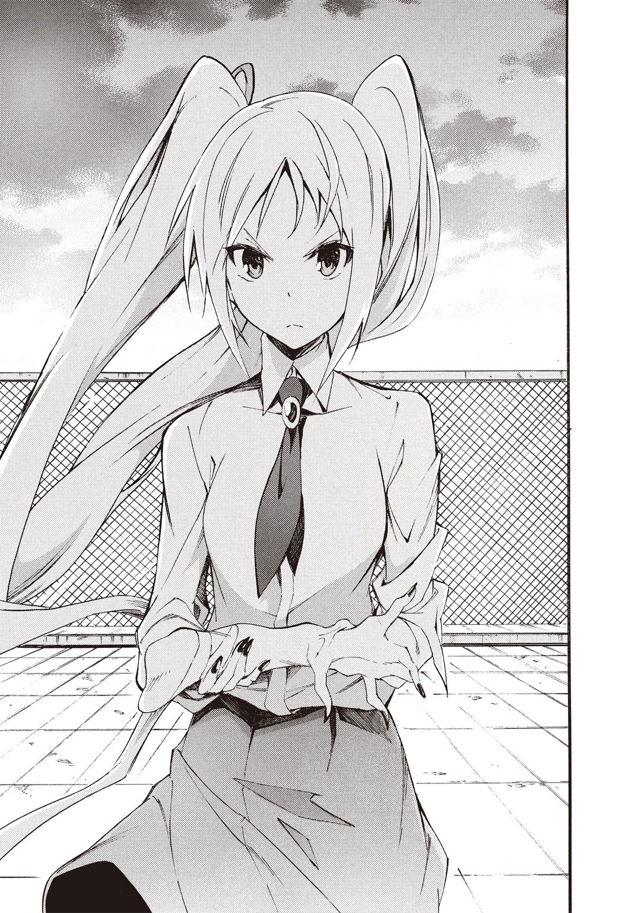
「な、何をするんですか？」
意識を集中して彼女の傷を見る。一度、彼女の手を頭の中で立体的に分解した。砕かれた左腕のパーツを整理し、頭の中で組み上げる。
肘から先に向けてブロックを積み重ねるようにイメージを再構築していく。
上腕から手首。手のひら。指の先端まで......綺麗に整った。そっとさすって接着した傷跡を消していく。ひび割れた表面を磨き上げる。
こうして触れていると細くてしなやかでやわらかくて......なんて繊細な手触りなんだ。
白魚のような指はまるで生きた芸術品だ。
「これが貴方の力というわけですね」
サニーの声で俺はハッと我に返った。
俺は彼女の手を両手で握ったまま固まっていた。自分がいったい何をしていたのか、きちんと思い出せない。ただイメージする事に没頭していた。
「どうして私を治療してくれたんですか？」
「治療って......俺はその......あ、あれ？」
花瓶と世界遺産じゃ規模が違う。なのに、サニーの左手は綺麗に傷ひとつ残さず治っていた。
「これを俺がやったのか？」
「はい。あの......ありがとうございます」
サニーが頰を赤らめる。俺は大あわてで握っていた手を離した。
「これで今すぐにでもミリアを壊せますね」
「え、ちょ、ちょっと待った！」
サニーは意外にも素直にうなずいた。
「......わかりました。少しだけ待ちます」
「は、はい？」
待てと言った俺の方が面食らった。
「本当に待ってくれるのか？」
「ええ。きっちり三日後、彼女を破壊します」
冗談を言っている表情じゃない。
「だから私が待っている間に、和久君が決めてください。ミリアにすべてを話すかどうか。期限は三日。それまで私からは、彼女に手出しをしない。どうですか？」
猶予は七十二時間。......って、そんなもん関係ないな。俺の答えは決まってる。
「言ったろ。俺はミリアを壊させない。サニーがそのつもりなら、俺はミリアといっしょに戦う......って」
「その時は全力でお相手しますね。こうして治療してもらいましたし」
「どうしてもやるっていうんだな」
「それが最善です。それに、ミリアに真実を教えない事の方が残酷かもしれないですよ？」
破壊されれば救われる。証拠もないけど噓と証明する事もできない。
学園の誰かを頼れないか？ だめだ。俺はサニーに襲撃された事を、池袋での研修レポートに書いたのにスルーされている。
学園はサニーの行動を容認しているように思えた。ミリアが分離できるかどうかのデータがとれるなら、放っておこうという腹なのかもしれない。
どの道、責任を負うのはサニー......って事で、大人同士の話合いはついているんじゃないか。なら学園は頼れない。
「三日間待つっていうのは、噓じゃないだろうな？」
「神に誓って」
サンピエトロ大聖堂が言うと言葉の重みが違うな。
俺だってミリアを解放してあげたい。けど、そんな考えは俺のエゴだ。
同じ時間の流れの中で、いっしょに過ごしていきたい。それは俺の欲望だ。
「わかった。三日後、決着をつけよう」
これ以上話し合いによる歩み寄りはできなさそうだ。俺がサニーに背を向けると、校舎の入り口のドアが少しだけ開いているのに気付いた。
中から誰かが俺たちのやりとりを見ている!?
「誰かいるのか!?」
ヴァールベリさんだったら大変な事になるぞ。俺はドアに向かって走った。すると、ドアの向こうにいた気配が......校舎内に逃げ込むように走り出す。
ドアを開くと下り階段の踊り場に......ミリアがいた。
「さ、三太郎の......ばかああああああああ！」
「ちょっと待てミリア！ どうしてミリアが屋上なんかに？」
「昇降口の下駄箱のところで、親切な先輩が教えてくれたんだよ！ 三太郎、まだ屋上にいるかもって」
ニア先輩何してくれてるんですか―――――――――――――――っ!?
ミリアは涙目で非難じみた声を上げた。
「サニーちゃんと屋上で二人っきりなんて、な、ななな何してたの？」
「何って......その......」
「説明できないような事、しようとしてたの？」
「してないって！」
「けどサニーちゃんの手をとって、あんなにじっと見つめて......」
「どこから見てたんだ？」
「どこからって......いいでしょそんな事！ もう三太郎なんか知らないんだから！」
ミリアはぷくーっとほっぺたを膨らませると、俺に背を向けて階段を急ぎ足で下り始めた。
「ちょっと待って！ 誤解なんだ！」
慌てて追いかける。階段を飛ぶように下りて肉薄し、ミリアの背中に手を伸ばした瞬間、彼女の背後に盾のようなシルエットが浮かんだ。
「って、生誕のファサード!? なんで！」
盾が俺の方に向かってくる。狭い踊り場で逃げようもなく、俺は盾と壁に挟み込まれて身動きがとれなくなってしまった。
ミリアは脱兎の如く逃げていく。あっという間の出来事に、俺は惚けたように立ち尽くした。というか壁に押しつけられて動きようもないんだけど......。
「何をしてるんですか？」
俺の目の前を何事もなかったようにサニーが通り過ぎる。
「助けてくれ！ ください！ お願いします！」
「残念だけどそれはできません。ピエタ像とその盾は相性が良くないみたいなんです。それでは、お先に失礼しますね」
「うおおおおおい！ 行かないでくれ！」
「貴方は動けず私の傷が完治しているなんて、襲撃のタイミングとしてはぴったりですね」
「お、お前！ 三日待つって言ったじゃないか？」
「ええ。だから残念ですけど、手は出しません」
緊張の面持ちのまま、俺は心の中で大きく安堵の息を吐いた。
「だいたい俺はミリアを守ると言ってるだけで、サニーの敵になるとは言ってないぞ」
「立ちはだかるというなら排除します」
ニコリと微笑むとサニーは軽やかな足取りで階段を下りていく。
「排除って......まったくどうすりゃいいんだ」
途方に暮れかけた俺が解放されたのは、意外にもこの後すぐのことだった。
能力が解除されるやいなやミリアにＬＩＮＥで連絡をとってみたけど、彼女から返事はない。
襲撃者かもしれない（というか『襲撃者だった』わけだけど）サニーと、二人きりで人目を忍ぶように屋上で密会しているところをミリアに目撃されたわけである。
怪しい相手と会っているのにミリアが不信感を覚えるのは当然にしても、あそこまで怒らなくてもいいだろうに。
ミリアにサニーの言う「真実」を告げるべきか悩む以前に、ミリアと喧嘩したような形になっちまったな。
第五章 聖域の侵入者
翌日の朝、ミリアの様子はおかしかった。早く教室についていたミリアは、俺を避けるように顔を合わせてすらくれない。俺は彼女の席の隣まで行って声をかけた。
「おはようミリア」
「フンだ。三太郎と話す事なんてなんにもないんだから」
ぷいっと彼女はそっぽを向いてしまった。そんな俺とミリアのやりとりに、前の席のヴァールベリさんたちはもちろん、列の一番後ろに座るサニーも注目している。
「何怒ってるんだよ？」
「怒ってないよ。全然怒ってないし気にしてないし。三太郎が誰と仲良くしてても、わたしには関係ないし」
「その事で、きちんと話しておきたいんだが......」
言いかけて俺は言葉を呑み込んだ。席に着いたままだけど、ヴァールベリさんが聞き耳を立てている。グリニッジさんが楽しそうに「しゅ～ら～ば～♪ しゅ～ら～ば～♪」と歌い、ラ・ショー＝ド＝フォンさんは口元を緩ませながら、右目のモノクルを外すとハンカチで磨きだした。
言えない。言える空気じゃない。ミリアは耳を両手で抑えて「聞こえない。聞こえない」って念仏みたいに唱えている。
ＬＩＮＥのメッセージは無視されるし......監視の目がある以上、ミリアが独りになるタイミングを見計らって話さなきゃいけないな。
どこまで話すべきか俺は迷っていた。
気持ちを聞いてミリアが......遺産少女じゃなく、普通の女の子に戻りたいって心から願っているなら、サニーの言う「真実」を俺は話してしまうかもしれない。
結局、学園内にいる間ミリアはずっとヴァールベリさんたちに囲まれていた。ミリアも俺を避けてるみたいで二人きりになるチャンスも訪れず......放課後を迎えてしまった。
タイムリミットがある以上、時間をかけてはいられない。
「ミリア。いっしょに帰ろう？」
「三太郎は放課後、いっしょに過ごしたい女の子がいるんでしょ？ わたしがいると邪魔だよね？ べ、別に遠慮しなくてもいいんだからね！」
「それってサニーの事か？」
「やっぱりサニーちゃんの事......わたしと三太郎は、た、ただの幼なじみなだけだし、究極的に言えば赤の他人だし」
「なんでそんな言い方するんだよ。だいたいあれは......」
今、説明していいのか？ いや、まずい。サニーとどんな会話をしたのか、正直に話すには教室はギャラリーが多すぎる。それにサニー当人だってまだこの教室内に残ってるんだ。
ミリアがカバンを手にして呟いた。
「今日はこのあと悩みそうだ......ヴァ、ヴァールベリちゃんたちとお茶して帰るから。三太郎は来ちゃだめだからね！ 女子会なんだからね！」
かすかに瞳を潤ませながら、ミリアはヴァールベリさんたちに合流した。ミリアのやつ、いったいどうしちゃったんだ？
ミリアを迎え入れたグリニッジさんが俺に向けて大きく手を振る。
「ばいばーい！」
ヴァールベリさんがにやけ顔で俺に告げた。
「ちょっとミリアを借りるけど妬くんじゃないぞ和久？」
「や、妬くって......俺は別にそんなつもりは......」
ラ・ショー＝ド＝フォンさんが肩を落とす。
「これはある意味重症かもしれないわね。それじゃあまた明日ね。和久君」
四人は揃って教室から出ていってしまった。取り残された気分だ。
「わかってますよね。和久君？」
突然、背後から声をかけられて俺は肩をびくつかせた。
振り返るとサニーがにっこり微笑んでいる。
「わかってるって。ただ、話したくてもミリアと二人きりになれなくてだな......」
「二人きりにならないといけないんですか？」
「当然だろ。お前の言う真実っていうのは、この学園の存在そのものを揺るがしかねないんだ。ヴァールベリさんに知られでもしたら一瞬で情報が拡散されて、大パニックを引き起こしかねない」
俺は真剣な眼差しでサニーを見つめた。
「教える相手はきちんと選ばなきゃいけない......違うか？」
サニーは小さく肩を落とした。
「そうですけど......すっかり彼女に避けられてますよね？」
「誰のせいだと思ってるんだ！」
「和久君の自業自得じゃないですか？」
そう言われると反論できない。ミリアが変な誤解をしたのは、俺がサニーの手を握ってたからだ。
あのタイミングでミリアが屋上に来るなんて、思わないだろ普通！
サニーとの会話を聞かれていなかっただけ、良かったのかもしれないけど。
「悪かったな。自業自得だよ」
「そもそも、どうして避けられているんですか？」
「それは......放課後に屋上で女の子の手を握って、じっと見つめてるところを目撃されてだな......」
「つまりミリアは和久君が私の事を好きだと勘違いしているんですね？」
「それはその......何と言うか......」
「はっきりしないですね。私に嫉妬するということは、ミリアは貴方の事が好きという事になります」
「す、好きってそういうんじゃ......つうか、もうこの話はやめよう！」
ヴァールベリさんほどじゃないにせよ、そこはかとなく聞かれている気がする。一般生の視線が痛い。
「和久君はミリアが好きなんですか？」
「あいつは......親友だ。生まれて初めてできた俺の大切な友達なんだ」
可愛いし女の子らしくなったし魅力的だけど、そういうやましい気持ちでミリアと接したくない。友情の輝きを失ってしまいそうで不安になる。
あれ、なんで俺、こんなにドキドキしてるんだ？
サニーが小さく「フン」と鼻を鳴らした。
「なら、やっぱりきちんと彼女を救ってあげるべきです。二人きりで話ができないというなら、私が協力してあげます」
「ミリアに誤解だってことを、いっしょに説明してくれるのか？」
「私と和久君の関係が深いんじゃないかと思い込んで、逆効果になるかもしれないですよ？」
「じゃあどうするんだよ？」
サニーはかかとをあげて背伸びをすると、そっと俺の耳元に口を寄せた。吐息がくすぐったい距離だ。ほのかに花の蜜のような甘い香りがした。
「今夜九時、女子寮に来てください。連絡が取り合えるようにＬＩＮＥを交換しておきましょう」
「え、あ......ああ」
明後日には戦う相手と仲良くＬＩＮＥの交換って......と思いつつも、俺はスマホを取り出していた。まるで催眠術にでもかけられたみたいにサニーのペースだ。
交換を終えると、サニーは軽やかな足取りで教室から出ていってしまった。
ああ、女子寮......女子寮だって!? あの素敵なデザインの建物の中をおがめるのか。高ぶってきた！ 興奮を覚えるッ！ って、何を変な妄想をしてるんだ俺は。
サニーの手引きで女子寮侵入ミッションなんて、あるわけないだろ。
サニーがミリアを女子寮の外に連れ出してきてくれるって事に違いない。って、あれ？ 寮なんだから門限があるはずだよな。
午後九時って門限に引っかからないか？ いやいや、きっと大丈夫だ。ここはサニーに任せて大船に乗ったつもりでいよう。サニーとは戦うことになるかもしれないけど、彼女がミリアに事情を把握させたいという気持ちは本心だと思うから。
午後九時の女子寮は正門が閉められて鉄壁の城塞の様相を呈していた。
さながらその堅剛さはモン・サン・ミシェルの外周部のようだ。モン・サン・ミシェルは時代とともに信仰の場となったり城塞となって外部からの侵攻を防いだり、牢獄として政治犯を閉じ込めたりしているわけだけど、俺がこの壁を高く険しく感じるということは、つまり「壁からはじき出されるべき存在」だと、俺に自覚があるからだ。
壁......それはなにも目に見えるものばかりじゃない。
外からの攻撃を想定した外壁を持つ城もあれば、贅の限りを尽くした宮殿のような城もある。宮殿なんてお金持ちの王様の道楽だろうし、敵を阻む城壁を持った城の方がかっこいい！ と、思っていた時期が俺にもありました。
実は宮殿っていうのは海外から外交でやってくる使節たちを、圧倒するために豪華な造りになっている......なんて側面もあるらしい。
マリーアントワネットのお母さんであるマリア・テレジアが作り上げたシェーンブルン宮殿は、まさにそうだった。
こんなにもゴージャスですごい宮殿を作れる国を敵にしたくない。そんな心理的プレッシャーを他国の使節に与える事ができてしまう。
そう考えると城壁っていうのは何も実在する壁だけじゃない。たとえば女子寮と名がつくだけで、それは男の侵入を防ぐ心理的な見えない壁になっているわけである。
俺にも、そんな心の壁を乗り越えなきゃいけない時が近づいていた。
つまり何が言いたいのかというと......。
サニーもミリアも女子寮の正門前にはいなかった。
立ち尽くす俺を見かねたようにＬＩＮＥにメッセージが届いた。サニーからだ。
『裏門の勝手口から入ってきてください。鍵は開けてあります』
って、不用心だな。けど、ここまで来たらこの誘いに乗らない手はない。
それにしても入ってこい......だなんて、ちゃんとミリアと話はついてるのか？ まあ門限があるから建物の外に出られないのかもしれないけど。
うん、そうだきっとそうに違いない。なら俺の方から訪問するのが筋ってもんだよな。
寮の周りを取り囲む壁沿いを、ぐるりと半周して裏門の勝手口を見つけると、俺は改めて周囲を確認した。閑静な住宅街は夜間に出歩いている人の方が珍しい。
不審者は俺くらいなものだ。いや俺だって不審者じゃないぞ。そうだ。不審者なんていなかったんだ。
もう一度周囲を確認し、誰にも見られていない確信を得てから、俺は勝手口のドアノブに手をかけた。
ゆっくり回してみる。
鍵は......開いていた。そっと音を立てないよう細心の注意を払って扉を開き、敷地内に入る......と、すかさずＬＩＮＥのメッセージが届く。
『建物の裏口の鍵も開いていますから、そのままどうぞ』
建物を見上げると寮の個室とおぼしき窓から光が漏れていた。この光のどれかがミリアの部屋なのかもしれない。
俺は建物の裏口から寮の内部に侵入を果たした。
どうやらここは厨房みたいだ。補助灯と窓から射し込む月明かりで真っ暗ということはないけど、薄暗い。もっと内装のデザインを見たいんだけど、照明をつければ目立つだろうし、今はこの闇に紛れよう。
厨房を抜けると食堂に出る。ここでミリアたちは朝夕のご飯を食べてるのか。
というか、この寮って遺産少女たちがいっぱいいるんだよな。当たり前の事だけど俺なんかがいちゃいけない場所だ。
今さら心臓がバクバクと早鐘を打つ。もし、誰かに見つかったらどう弁明すればいいんだ？ というか次の情報早く来い！ ミリアは何階の何号室にいるんだ!?
俺の願いを聞き入れるようにメッセージが届いた。
『あとは自力でがんばってください。健闘を祈ります。大聖堂級の祈りなので、きっとうまくいくでしょう』
ふっざけんなー！
『ミリアの部屋番号くらいわからないのか!?』
『うっかり調べるのを忘れていたんです』
『ミリアに聞けばいいだろ？』
『ミリアは私のことが苦手みたいです。和久君が聞けばいいのでは？』
『俺のメッセージは全部スルーされてるんだよ！ でなきゃ、わざわざ危険を冒してまで侵入する必要もないだろ』
『そうでしたね。なら、やっぱり自力でがんばるしかないです。これから大浴場の利用時間なので、通信を終了します』
『おーい！ サニーさん！ サンピエトロ大聖堂様！ 迷える子羊をお救いください！』
返事はない。どうやら俺の窮地よりも、彼女自身の入浴時間の方が優先されたみたいだ。
こうなったら死なばもろとも。大浴場を探り当てて更衣室に乱入してやる！
なんてダイナミックに自暴自棄なことなど、紳士的チキン野郎な俺にできるわけもなく、サニーに頼るのを諦めて食堂の外に出た。
間接照明でうっすら明るい廊下に出た途端、裸の女の子が目の前を横切った。
「はっぱっぱ～♪ らっぱっぱ～♪」
「待て待てグリニッジー！ 宇宙侵略者タオル星人がお前を優しい噓で包み込んでやるぞぉ！」
裸のグリニッジさんを追いかけて、ジャージ姿のヴァールベリさんがバスタオルを手に声をあげる。
そして俺はといえば......最後にやってきたラ・ショー＝ド＝フォンさんと目が合った。お風呂上がりで火照った肌のラ・ショー＝ド＝フォンさんが、モノクルもしていないのに左目を閉じて、右目だけで俺の顔を精査するようにのぞきこむ。
「誰かと思えば和久君じゃない」
廊下を駆け抜けたグリニッジさんがブーメランのように戻って来た。全裸で。
「わー！ どうしたのこんな時間に？ あっ！ 三太郎くんもお風呂？」
棒立ちのグリニッジさんを大きめなバスタオルでふんわり包んでから、ヴァールベリさんが俺に向き直った。
「痴漢だああああああああああああああああああああああああああああああ！」
「ちっがあああああああああああああああああああああああああああああう！」
つい反論に熱が入って声が大きくなる。慌てて周囲を確認したところ、幸いにも他に目撃者はいなかった。
「女子寮に侵入してくるとは恐れ入ったよ和久。あんたの事を少しなめてたわ。草食系と思ってたけどガッツリ系じゃんか？ お目当てはミリアだろ」
「そ、それは......その」
ミリアを巻き込むわけにはいかない。ああ、けど現行犯すぎるだろ。通報されたら退学ものだ。今や俺の生殺与奪の権利はヴァールベリさんが握っている。
「こ、これは誤解なんだ。俺は......は、ハメられたんだ！」
「なにエロいこと言ってるんだ？」
「言ってない！ 本当だ信じてくれ」
ラ・ショー＝ド＝フォンさんが首を傾げた。
「鍵がかかっているはずなのに、どうやって中に入ったのか気になるところね」
グリニッジさんが楽しそうに笑う。
「この中に内通者がいるんだよ！ わたしってば名探偵だね！」
いつの間にか俺の背後の扉をラ・ショー＝ド＝フォンさんがそっと閉じている。後方の逃げ道がふさがれた!?
ヴァールベリさんが捕獲した獲物を見る目で俺に微笑む。
「んで、内通者って誰なんだ？」
やばい。サニーの名前を出せば「なんでサニーがそんなことをしたんだ？」って話になりかねない。
退路を断たれてしまった以上、もう後戻りはできない。廊下の右か左か......どちらにせよ進むしかないんだ。
「ええと......じゃあ、俺はこの辺で失礼します。玄関あちらですか？ ああどうもどうも」
俺は可能な限りソフトな物腰で強行手段に出た。ヴァールベリさんたちは見るからに湯上がりだ。つまり、三人がやってきた方向――廊下を右に行けば大浴場。そして三人が行こうとしている方向――左に進めば間違っても大浴場には通じていない。確証はないけど玄関ロビー方面に出られるかもしれない。
俺は......一歩目から全速力で廊下を走り出した。
きっとこの先は玄関のはずだ！ はずです！ そうであってくれ！
「あっ！ 逃げるな和久！」
ぶううんっと、空気を振るわせるような音とともに、バチバチという音が背後で聞こえた。ヴァールベリさん、俺ごときに遺産力を使うんですか!?
遺産力を発動させたヴァールベリさんに対して、敵対する遺産少女がいないおかげで結界も発動しなかった。まあ発動したとしても状況が好転するわけじゃないけど。
廊下の突き当たりで角を曲がった。俺の希望通り階段とエレベーターがある玄関ロビーに出る。建物の造りは寮というよりもホテルのようだった。内装は見事にグエル邸やそれに連なるガウディのデザインが盛り込まれた、素敵な空間だ。
ちょうどエレベーターが下りてくる。このエレベーターも木の幹のようなデザインが施されていた。扉が開くとお風呂セットを手にしたミリアがひとりで乗っていた。
「ミリア！ よかった！ かくまってくれ！」
「ちょ、ちょっと!? どうして三太郎がいるの!?」
「早くドアを閉めろ！ つうかコレが閉めるボタンか！」
俺は転がり込むようにエレベーターに飛び込み「閉」ボタンを押した。
ドアが閉ま......りきらない。寸前のところで、わずかな隙間にスタン警棒が突き入れられた。
「ミリア！ 生誕のファサード！」
「え、う、うん！」
一瞬、時間が停止した。ミリアの遺産力とヴァールベリさんの遺産力が反応して、結界が生じたのだ。
ミリアが盾を展開し、ヴァールベリさんのスタン警棒を押し返す。
「ミリア！ あたしだって別に和久をどうこうしようってつもりは......あ、いややっぱいいわ。さっきの作戦通りがんばんなよ！」
やけにあっさりとヴァールベリさんは引き下がった。スタン警棒が引き抜かれた瞬間、結界が解けて時間が流れ始める。エレベーターは何事もなかったようにドアを閉めると、上の階に俺とミリアを運んでいった。
俺は肩で息をしながら呟く。
「ハァ......ハァ......あぶないところだった」
「なんで三太郎がいるの？ ここ、女子寮だよ？」
「色々事情があるんだ」
「色が情事って......まさか......みんなのお風呂をのぞこうとしてたの？」
「どういう聞き間違えをしたらそうなるんだ！ 違うって！ 俺はミリアに会いに来たんだ。学園じゃずっとヴァールベリさんたちと一緒だったし、俺からのメッセージは全部スルーだし。こうでもしないと二人っきりになれないだろ？」
「二人っきり......さ、三太郎はわたしと、二人っきりになりたかったんだ？」
「ああ。軽く命がけだったけど、こうして合流できてよかったよ」
ミリアがボタンを押すと、エレベーターは三階で止まった。
「こっち。ともかく、こっちきて」
俺の手をとって引くと、ミリアは早足で廊下を進む。一番奥の部屋に俺を引っ張り込んだ。
「ルームメートはいないから、ここなら安心だよ」
部屋の中の机もベッドも、新古典ともバロックとも違う独特な雰囲気の内装が施されている。植物を連想させるモチーフやデザインが、ベッドをはじめテーブルや机にもちりばめられていた。アール・ヌーボーに類似した特徴を持つスペインのモデルニスモ様式風だ。
ヴァールベリさんたちがミリアの部屋に押しかけてくるかと警戒したけど、一向にその気配はない。
「なあミリア。さっきヴァールベリさんが気になる事を言ってたんだけど、作戦通りってなんのことだ？」
「え？ そ、そそそそんな事言ってたっけ？」
俺の聞き間違えじゃないとは思うんだけど......。あの知りたがりなヴァールベリさんがあっさり引き下がったもんだから、逆に印象に残ったんだ。
「言ってたぞ。それに、あの三人なら俺がミリアの部屋に逃げ込んだなら、追っかけて来て部屋まで入って来ると思うんだけどな」
「それはあれだよ。プライバシーを尊重してるんだよ」
ミリアが早口で声をひっくり返らせる。
俺が部屋に入った時点で、ミリアのプライバシーなんて微塵もないような気がするんだけど......。
「そ、そういう三太郎こそ、こんな時間に女子寮に忍び込むなんて......」
「さっきも言ったけど、ミリアとこうしてゆっくり話をしたかったんだ。いや、ゆっくりもしてられないか」
俺は深呼吸をした。どことなく甘い、それでいて懐かしい匂いがする。
まだ数日しか暮らしていなくても、ここはミリアの部屋で、ミリアの匂いで満たされてるんだ......って、しみじみ感じる俺は変態か。
「なあミリア。大切な話があるんだ」
「う、うん。え、えっと......やっぱりダメだよ！ まだお風呂に入ってないし......」
ミリアは顔を真っ赤にさせると、ベッドにダイブしてマクラを抱きしめながら身もだえた。
「聞いてくれミリア。大事な事なんだ」
マクラを抱いたまま上半身を起こしてミリアは上目遣い気味に俺を見つめた。じっと瞳を潤ませて思い詰めたような眼差しだ。
そんな風に見つめられるとこっちも噓がつけない。あの事を――遺産少女は破壊される事で、遺産と少女に分離できるかもしれない......と、話してしまいそうになる。
その前にミリアの気持ちをきちんと確認しないといけない。
「話をする前に......まずはミリアの気持ちを聞かせてくれ」
「わ、わたしはそういうの......三太郎が興味あるっていうなら......普通の女の子と違うから、もしかしたら、う、うまくできないかもしれないけど」
「うまくできるかどうかは俺にもわからない。けど、何よりもミリアの気持ちが大事なんだ」
「や、やっぱり優しいんだね三太郎って。再会したばっかりだし、わたしも遺産とリンクしちゃって普通の女の子じゃなくなっちゃったけど......三太郎がそういうの期待するなら、わ、わたし！ わたしだって！」
一度小さく呼吸を整えてから改めて俺は聞いた。
「じゃあ、ミリアの気持ちを聞かせてくれ」
「え、えっと......や、やっぱり恥ずかしいよ。そういう事は、お、男の子の方から言ってほしいかも」
「わかった。俺も覚悟を決めたよ」
俺はじっとミリアを見つめた。ミリアはベッドから立ち上がって、俺の眼前まで歩み寄る。
「なんだか嬉しいな......三太郎に言ってもらえるなんて」
俺は......決心した。彼女の答えがどんなものであれ、俺はずっと最後までミリアの味方だ。
「なあミリア。もし......遺産少女をやめる事ができるとしたら、ミリアはどんなことでもできるか？」
俺の言葉にミリアはぽかんと半分口を開いたまま固まってしまった。言い方を変えて聞き直す。
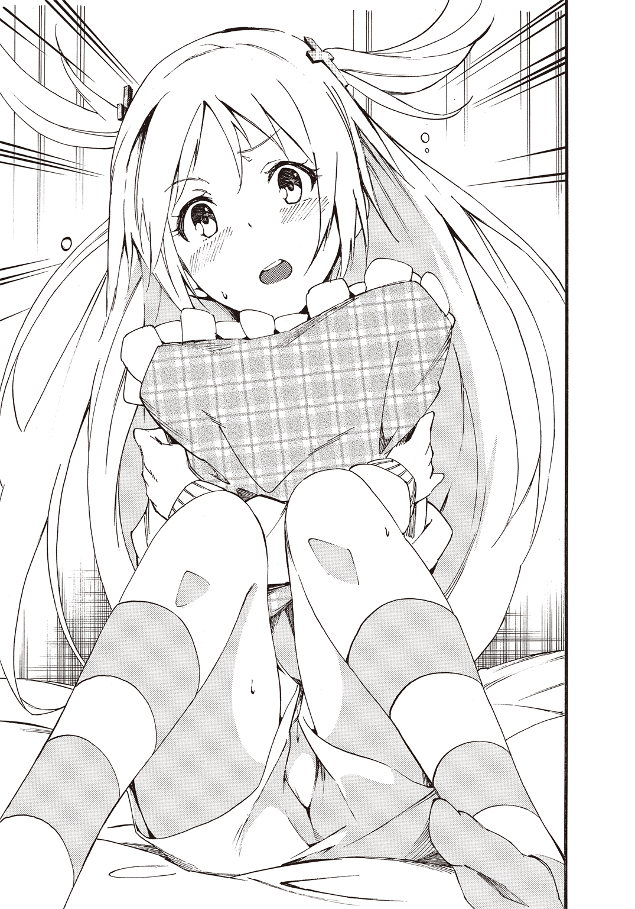
「普通の人間に戻りたいと思うか？」
「え、ええ!?」
ミリアは目を丸くさせて俺を見つめたまま動かない。あれ？ 驚かせたみたいだけど、俺が想像していた以上の反応だな。俺はミリアの目の前に手をかざして振ってみた。
「ミリア？ 大丈夫か？」
「わ、わああああああああ!?」
後ろにひっくり返るように体勢を崩して、ミリアはぽふんとベッドに尻餅をついた。
「大丈夫かミリア？」
「う、うん。ちょっと......ううん、だいぶびっくりしたよ」
「今すぐ答えられないと思うけど、できれば今夜か、少なくとも明日には気持ちを決めてほしいんだ」
「あ、あのね！ それなら......三太郎はどうなの？」
「俺？」
「うん。三太郎はやっぱり、普通の女の子が......いいんだよね？」
ミリアと一緒の時間を過ごしていきたい。そのためには、ミリアに普通の人間としての時間を取り戻して欲しい。けど......俺の考えを押しつけるような事もしたくない。
迷う俺にミリアは告げた。
「ちゃんと目を見て」
「俺は............ミリアと同じ時間を過ごしていきたい」
ミリアの頰に、突然一筋の涙が落ちた。
「わたしもだよ。三太郎といっしょにいたい」
「ミリアが引っ越しちゃってから、ずっと時間が空いたままだもんな。俺はそれを取り戻したいし、その先も......ミリアと......同じ歩幅で歩いていきたい」
ミリアはうなずいた。俺は手を差し伸べる。彼女は俺の手をとって立ち上がった。そして、首を傾げる。
「けど、どうして三太郎はそんなに悲しそうな顔をしてるの？」
俺が......悲しそうだって？
「そんな顔してるのか......俺？」
「うん。なんだかとっても辛そうだよ。もしかして、わたしがサグラダファミリアをやめちゃうのがもったいない......とか？」
「そんな事は思ってない！ ただ、条件が......厳しくて」
「人間に戻る方法って、まだ見つかってないんだよね？」
「表向きはそうなってる。けど、裏技があるんだ」
「それって、他の誰かを傷つける事だったりする？」
ミリアは優しい。自分が助かるために誰かを犠牲にしたくない。そんな彼女だから俺は救われて欲しいと思うんだ。
俺はミリアの問いに首を左右に振る。
「逆なんだ。遺産少女同士で戦って......破壊される事で、遺産と少女のリンクを強制的に解除するらしい。サニーがしようとしていたのはそういう事なんだ」
「えっ!? サニーちゃんって......池袋で襲ってきたのはサニーちゃんの偽物じゃないの？ 偽物だからわたしでも勝てたんだと思ってた」
ミリアはあれを偽物と思ってたのか。
「サニーは本物のサンピエトロ大聖堂だよ。そして、ミリアを襲ったのもミリアを遺産から分離するためらしいんだ」
事情を察してミリアは小さくうなずくと、小声で呟いた。
「痛いのかな？」
「わからない。ただ、何か精神的なダメージはあるかもしれない」
「この事を伝えにわざわざ来てくれたんだ？」
「時間がないんだ。サニーは......ええと、今からだと明後日の夕方に、ミリアに戦いを挑んでくるつもりでいる。ごめん。本当はもっと時間が稼げたはずなのに、俺......サニーの左腕の傷を修復しちゃって」
今思えば、あれは治療というより修復作業みたいだった。
「修復？ 三太郎が？」
「俺がこの学園に入学できたのも、そういう力があったからなんだと思う。誰かにきちんと教えてもらったわけじゃないけど、ミリアたちとふれ合ううちに、いつの間にかできるようになっててさ」
「そうなんだ。なんだか不思議だね。わたしは世界遺産になって三太郎はそれを修復する人......か」
「なあミリア。この方法......壊す事で分離するやり方が秘密にされているのには、なにかデメリットがあるからに違いないんだ。だから俺もミリアには無理してほしくない。それで救われるとわかっていても、ミリアが傷つくのを黙って見てられない」
「でも、このままじゃわたし、ずっと世界遺産なんだよね......」
ミリアは深くうつむいた。心細そうに肩を震えさせている。
思わずミリアの身体を抱き寄せそうになった。
俺が迷っている間に、顔を上げるとミリアは微笑んだ。それは不意打ちで俺の心を打ち抜くような笑みだった。
「決めた！ あのね......わたしは今のままでいい。今のままがいい。他の遺産だったら迷っちゃったかもしれないけど、わたしは三太郎が好きなサグラダファミリアなんだから」
ミリアは少し困ったように眉尻を下げて続ける。
「それに壊されるのとか、痛いのとかいやだし......だから明日から特訓しよ？」
「特訓？」
「サニーちゃんが襲ってくるなら次も返り討ちにしなきゃ！」
「本気で言ってるのか？ 相手は......サンピエトロ大聖堂なんだぞ？」
「三太郎がいてくれるなら、きっと大丈夫だよ」
いいのかこれで。この選択で......。
自問しても答えが見えない俺に、道を指し示すようにミリアは告げた。
「わたしね......自分が遺産少女だって実感が無かったんだ。三太郎と再会して、自分以外の遺産少女のみんなとお話して、みんなの悩みも教えてもらって......自分が選ばれた理由なんて考えた事もなかったけど......サグラダファミリアは、わたしと三太郎をつないでくれた遺産だから......大切にしたいって思うの」
「わかった。なら俺もできる限り協力するよ」
俺は自然と手を差し出した。
ミリアは大きくうんとうなずいて俺の手を握り返す。
方針が決まって俺は心のどこかで安堵してしまった。
彼女の本当の気持ちに気づく事もできずに。
第六章 決意
襲撃予告をしたサニーから、なんのリアクションもないまま学園での時間が過ぎていく。
三日間の約束をサニーは律儀に守るつもりらしい。戦わざるを得ないんだろうか。ともあれ、襲撃者と同じ教室で過ごす一日はひどく息の詰まるものだった。
放課後、俺とミリアは学園の大図書館にやってきた。
世界遺産に関する文献だけで館が地域ごとに別れている。
パリのソルボンヌ図書館をモデルにしたであろうヨーロッパ館の優雅で格調高い閲覧室で、俺とミリアはサンピエトロ大聖堂について調べてみた。
わかったことは、相手がどれだけ強いか......という事だけだ。
素晴らしいモザイク画。時代とともに設計図が描き直されながら、現在の形に至るまでの深い歴史。広場とそれを包み込むように広がる柱廊と、その世界観。
祭られている聖人たちも桁違いだ。
あの聖槍ロンギヌスまで所蔵していた。日本でも超メジャーな聖遺物じゃないか。
加えて聖ヘレナ。聖ヴェロニカ。使徒アンデレ......四天王だけでお腹いっぱいなのに、極めつけは大聖堂の名の大本たる聖ペテロのブロンズ像。これにミケランジェロのピエタ像も加わると思うと、お手上げだ。
ともかく列挙にいとまがない。すべての聖人について調べ、対処法を考えるには時間が足りなすぎる。
閲覧室を出て資料の本を元の棚に戻しながら、ミリアが肩を落とした。
「ど、どうしよう三太郎。サニーちゃんと戦う自信なくなっちゃったよ」
「だ、大丈夫だって。俺がついてるから！ それにほら、遺産力は日本だと弱まるみたいだし、むしろミリアの方が有利かもしれないし」
遺産少女の能力は、その地域の人々にとってのメジャーさで変動する。
とはいえ懸念がひとつあった。聖ロンギヌスのことだ。
知名度という意味では、ロンギヌスの槍はこの国では、本来のそれとは別の伝搬の仕方をしていると思う。俺の取り越し苦労ならいいんだけど、一応、言っておいた方がいいかな。
「あのミリア......」
「な、なに？」
ミリアは泣きそうな顔だった。これ以上、彼女を不安がらせても可哀想だ。
「なんでもないよ。そんなに心配しなくてもいいから。調べ物は俺に任せてくれ！」
ごめんミリア。大口叩いた割に打開策が見つけられそうにない。
相手はサンピエトロ大聖堂なんだ。サグラダファミリアと違って、すでに完成されている。地盤の弱さから鐘塔が立てられず割合されたというのも、大きな弱点にはならないだろうな。
「あのね......狙われてるのはわたしなんだから三太郎は......」
心細そうなミリアの言葉を俺は遮った。
「絶対に足手まといにならないから、いっしょに戦わせてくれ」
心がチクリと痛む。本当に足手まといにならない自信なんてない。けど、ここで俺が不安そうにしていたら、戦うミリアの士気をくじいてしまう。
「だめだよ。やっぱり危ないよ！」
「ミリアだけを危ない目に合わせられるもんか。それに置いてけぼりはもう嫌なんだ」
「ごめん......」
「わ、わあああ！ 責めてない！ そんなつもりはないんだ！ 俺の方こそごめん！」
手を合わせて俺はミリアを拝むようにした。聖家族教会を拝むなんて変な感じだ。
「うん。そうだよね。三太郎はわたしの味方だもんね」
ミリアの優しい口ぶりに救われて、俺は顔をあげた。
「じゃあ次はミリアの事を調べてみよう」
「わたしの事!? もしかして、身長とか体重とかスリーサイズとか？ だ、だだだダメだよ！ 女の子にそういうの聞くの良くないんだからね！」
「ちっがーう！ サグラダファミリアの事だよ」
「なーんだ。びっくりした」
心底ほっとしたようにミリアは大きく息を吐いた。それから真顔で俺に言う。
「三太郎、あんまり大きな声出しちゃいけないんだよ。図書館なんだから」
「ご、ごめん」
さっきから謝ってばっかりだな。
棚を移動して今度はスペインのコーナーにやってきた。
サグラダファミリアについての資料は多い。書棚には日本語に翻訳されたものはもちろん、英語やスペイン語で書かれた資料まで並んでいた。
「そういえばミリアが日本語なのはわかるけど、ヴァールベリさんたちやサニーって日本語に堪能なんだな？」
「あ！ それなんだけどね......遺産少女だからかも」
「遺産少女になると言葉の壁が無くなったりするのか？」
「うん。だからスペインにいる時も言葉で困ることはなかったよ」
ふとバベルの塔の逸話を思いだした。神様に近づこうとして人間は高い塔を作るんだけど、その行為が神様の怒りに触れて塔は破壊され、人々の言葉もその時にバラバラにされてしまった......っていう話だ。
諸説あるけどタロットカードの「塔」がバベルの塔という解釈もあったっけ。
その暗示は正位置では崩壊、災害、悲劇。逆位置では緊迫、アクシデント、誤解。
タロットカードは上下が違うと幸運と不運がひっくり返るのだけど「塔」のカードは正逆どちらも悪い暗示だ。って、何を自ら先行きを不安にしてるんだ俺は。
ミリアが不思議そうに俺の顔をのぞきこんでいた。
「三太郎、どうしたの？ ぼーっとしちゃって。もしかして、わたしに見とれてた......とか？」
「え、い、いやそうじゃなくて......」
「もう！ そういう時は噓でもお世辞でもいいから、女の子を褒めるべきだよ。三太郎は家訓を忘れちゃったの？」
最近、色々ありすぎて家訓どころじゃなかったんだ。っていうか、ミリアに我が家の家訓をきちんと教えた事なんてあったっけ。
「なんでミリアはうちの家訓に詳しいんだ？」
「小学生の時に三太郎のお母さんに教えてもらったんだよ。いっぱい三太郎に褒めてもらいなさい！ って」
「あ、あぁ......母さんめ。ともかく今はうちの家訓の事は置いといて、サグラダファミリアについて調べてみよう」
「なんだか恥ずかしいかも」
ミリアはもじもじと膝をすりあわせるようにした。
それから調べてみたものの......大きな成果は得られなかった。
サグラダファミリアのファサードも十八の尖塔も、完成していない部分からはその力を借りられそうにない。
宗教建築としての完成度ならサンピエトロ大聖堂にだって引けを取らないと思うけど......やっぱりそこで競い合ってもじり貧だ。
もう少し拡大して考えるべきかもしれない。ミリアと直接つながりはないけど、ガウディの作品群を調べれば何かヒントが......。
資料と格闘する俺の隣でミリアがいつのまにか鼻歌交じりで、図鑑のような写真資料をめくっていた。
「フフン♪ フフン♪ フフン♪ フフン♪」
「こらこら。図書館で鼻歌はまずいだろ」
「あっ......そ、そうだね。三太郎といっしょにいるとつい嬉しくなっちゃって」
俺がそばにいてミリアがリラックスできるなら本望だ。ところで......。
「今の鼻歌だけど、どこかで聞いたことがあるような......」
愉快なリズムでまるで童謡みたいなメロディーだった。ミリアが「うん」とうなずく。
「困った時はこの歌を歌うと元気になるって、おばあちゃんに教えてもらったの」
「歌うっていうことは鼻歌じゃなくて、ちゃんと歌詞があるのか？」
「うん。フニクリ♪ フニクラ♪ ってやつ」
「たしかイタリアのヴェスヴィオ火山を登る時に歌う......あっ！」
ミリアがきょとんとした顔になった。
「どうしたの三太郎？」
「ミリア。その歌だよ。まだ、それが力になるかわからないけど......」
そうだった。うっかりしていた。俺はサグラダファミリアの一面しか見ていなかったんだ。
サグラダファミリア。その概念は聖家族教会。祈りの場だ。
一方で、あの巨大な建物がなんで建っていられるのか？ あれだけのものがコンピューターも無い時代に設計されてるんだ。
俺は集めた資料の中からガウディの建築に関する本を手にした。
「フニクラ構造......これはミリアだけの力かもしれない」
ガウディは麻の紐と散弾の詰まった袋で建物を設計した。
緩やかに張った紐に重りの袋をつける。すると紐は重りに引っ張られて逆のアーチを描く。
それぞれのアーチの頂点を両端にして紐を張り、さらに水平方向と垂直方向に紐と重りを増やしていく。組み合わせるほど、紐同士の接点が増えて複雑なクモの巣のようになっていく。
そのすべての紐が偏ることなく美しいアーチを描くように、重りの袋の位置を細かく変更していくんだ。
ひとつ重りの位置を変えれば連動して他の重心の位置が変化する。それを修正する。修正に修正を重ねて改良し最適化する。
気の遠くなるような地道な作業の末に、麻の紐が「最も美しい曲線」を示した時、それは同時に「最も強固な曲線」を描くのである。
俺は興奮のあまり、席から立ち上がった。
「ミリア。次は身体を動かす特訓だ！」
「え!? もうお勉強はしなくていいの？」
俺はフニクラ構造の復元模型の写真が載っている本を借りて、ミリアといっしょに図書館を出た。学園正門前のバス停でバスに乗る。目的地は人工島南側にある海浜緑地公園だ。
バスの車内にちょうど二人がけの席が空いていた。
「ミリア！ 隣に座って」
「え、ええ!? すごい密着しちゃうよ？」
「いいから早く」
ミリアと二人、並んで席に座ると俺は借りてきた本を開いた。同時にバスが走り出す。
「ねぇねぇ？ 今からどこにいくの？」
「海浜緑地公園だ」
「もしかして、あのおっきな観覧車に乗るの？」
公園には大きな観覧車が設置されていた。ほかに芝生の緑地公園やバーベキュー広場や、水族館や野鳥園なんかがあるらしい。市民の憩いの場だ。
「観覧車には乗らないけど......」
「なーんだ。残念。二人っきりで観覧車......ちょっと憧れてたのに」
「憧れ？」
「な、何でもないよ!? じゃあ、何しに行くの？」
「緑地公園なら広さもあるし、遺産力を使っても迷惑がかからないだろ？」
「そ、そっか！ そうだよね！ わたしひとりで力を使っても結界が出ないんだもんね？」
「じゃあ公園に着くまでフニクラ構造について講義するから、ちゃんと聞くように」
「はーい先生。ところでフニクラ構造ってなんだっけ？」
バスが海浜緑地公園に着くまで、俺なりにまとめながらミリアにフニクラ構造のことを説明してみたんだけど......ミリアの反応は「うーん。建築学とかわかんないよぉ」と、いまいちだ。俺だって専門家じゃないし、ところどころ解釈が間違ってるかもしれない。
それでも今はガウディみたいにひとつずつ手作業で確認するしかないんだ。
ああ......時間が短すぎる。
明日にはサニーと戦わなきゃならないなんて、自業自得とはいえ彼女を修復してしまった事を、俺は悔やんでも悔やみきれなかった。
バスが海浜緑地公園前の停留所に止まった。帰りのバスの時間を調べてから、俺とミリアは公園内の芝生の広場に向かう。人影はまばらだ。午後四時を過ぎると、引き潮のように広場から人の姿は消えてしまった。
「なんだか寂しいね」
「あんまり人に見られても困るから、都合がいいよ」
「あっ！ もしかして三太郎、人気の無いところにわたしを呼びだして......」
「もしかするか！ 変な事言わないの。じゃあまずは落ち着いて能力を発動してみようか？」
「うん。うまくできるかな？」
ミリアは自信無さげに呟いた。
「うーんと......えい！」
何も起こらない。ミリアは制服姿のままだ。
「とやああ！」
その場でぴょん！ と、ミリアはジャンプした。着地と同時に彼女の制服のスカートがふわりと広がる。それだけだった。
「ど、どうしよう三太郎！ 変身できないよ!?」
「もしかして......ミリアって、自分ひとりだと遺産力を使えないのか？」
ミリアが自分の力に覚醒したのは、俺が更衣室でヴァールベリさんに襲われている（？）時だ。あの場にはミリアを含めて四人の遺産少女が集まっていた。
池袋でサニーの襲撃に遭った時もミリアは能力を発動させたし、俺がサニーと校舎の屋上で会った時にも、ミリアは生誕のファサードで俺を壁に挟み込んだ。あの時もそばにサニーがいたんだ。
それに先日、俺がやむなく女子寮にお邪魔した時にも、追って来たヴァールベリさんに反応するようにミリアは能力を使ったっけ。
ミリアはその場でジャンプしたり、くるくる回ったり、芝生の上に転がると大の字になって寝そべって空を見上げたりした。
「わあぁ......空ってこんなに広いんだ。三太郎もこうしてごらんよ！ 気持ちいいよ！」
「現実逃避ですか!?」
「困ったね。跳んでも跳ねても転がってみても力が出せないの」
「他人事みたいにおっしゃるな。ほら立って」
俺は手を差し伸べた。その手をとってミリアが立ち上がる。
「背中向けて。ああ、まったく......制服に芝がつきまくってるし」
制服の背中についた芝生をぽんぽん叩いた。つい、うっかり彼女のお尻まで叩いてしまった。もちろんスカートの上からだし、流れというか不可抗力というか......。
「きゃああああああああああああああああああああ！」
瞬間、ミリアの身体に光が宿った。陶器のような美しい鎧姿に早変わりする。
「三太郎！ そこはだめええええええ！」
ミリアの腕に生誕のファサードが盾となって生まれた。その腕に俺はぶっ飛ばされる。俺の身体は風に巻き上げられた木の葉のように、宙を舞った。
やばい......これが......遺産の......力......。
気がつくと俺は空を見ていた。夕日が沈みかけている。柔らかい感触が俺の後頭部を支えていた。
「よかった。ごめんね！ ごめんね三太郎」
「ミリア？ あれ、俺......いったい」
しばらくの間意識を失っていたらしい。俺はミリアに介抱されていた。彼女の膝枕からそっと頭を離す。
「救急車呼んだら大事になっちゃうし、けど、三太郎、目を覚まさないし......」
持ち上げるように身体を起こすと、泣きそうなミリアの頭をそっと撫でた。
「大丈夫だ。なんか、不思議と痛くないし」
身体が浮くほどの衝撃だったんだから、即死しててもおかしくないのに......。ともかく俺の身体の方は大丈夫そうだ。ミリアが俺を殴ったのが生誕のファサードだったから......ってのもあるかもしれないな。
三つのファサードのうち、もっとも優しく愛に溢れた聖母マリアの力なんだし。
「ミリアは、ちゃんと能力が使えたみたいだな」
「う、うん。頭の中が真っ白になっちゃったけど......で、でもでも！ 急に三太郎がお尻を触るからいけないんだよ！ 事前に触りますって言われても、ちょっと困るけど」
「その事については深く反省し謝罪します。なんか、子供の頃と変わらないノリになっちゃったな」
「そういえばそうだね。昔はいっつもわたしの方がどろんこになったりしてたよね」
懐かしむように笑うミリアに釣られて俺も吹き出した。
ミリアは何も変わってないんだ。
大きな責任を背負ってしまったけど、明るくて優しいごく普通の女の子のままなんだ。
そんな彼女だから、きっと生誕のファサードも力を貸してくれたんだと思う。
ミリアがぽつりと呟いた。
「特訓する時間、なくなっちゃったね」
時計を見ると帰りのバスの時間が近づいていた。これじゃあ、なんのために特訓にやってきたんだかわからない。
「そうだ！ 明日は朝練をしよう！」
「う、うん。そうだね。それもいいかもね」
ミリアは伏し目がちになって呟いた。
「学園で能力を使うと目立つから、場所はこの広場だ。朝六時集合。決戦当日の朝に特訓っていうのもあれだけど、時間がないんだからしょうがない！」
「あのね......三太郎」
「どうしたミリア？」
「三太郎は、その......す、すす、好きな人とか......いるの？」
「好きな人って......」
「お願い三太郎。ちゃんと......答えて」
「急にそんな事聞かれても、困るって」
「どうして困るの？」
「好きって言っても色々あるだろ？」
「色々なんて無いよ！ 好きは......ひとつだよ」
それって特定の女の子に対する気持ち......ってことだよな。
ミリアが半歩、前に出て俺に詰め寄った。
「やっぱり普通の女の子のほうが......好き？」
「ふ、普通とか特別とか......た、例えば普通であっても特別であっても、好きになったらそれは特別な存在になるっていうか......ごめん、わからない」
「え？ わからない......って」
「ああ。そういうのわからないんだ。俺ってまだ子供なんだと思う。誰かを好きになるとか、真剣に考えた事がないんだ」
「じゃあ、わたしの事......嫌い？」
「嫌いなわけないだろ！ ミリアは俺の......」
俺の......なんだ？ ミリアもこんな事を言い出すなんて、いったいどうしちゃったんだ。だめだ、考えるのが怖い。ミリアに近づきすぎるのが怖い。
これ以上踏み込むと、今の関係性が壊れてしまいそうで不安になる。
「俺の大切な友達だ。生まれて初めてできた親友だ」
ミリアは前のめりにしていた姿勢をそっと元に戻した。
「そう......だよね。わたしってば変な事聞いてごめんね。三太郎はわたしが外国人っぽくても、いじめられっ子でも、女の子らしくなくても......世界遺産になっちゃっても、ずっとずっと友達でいてくれるんだもんね」
ミリアに責められてるような気持ちになった。彼女は公園の入り口に向けて歩きだす。
「行こう！ 三太郎。明日は決戦だよ」
振り返って彼女は笑う。その笑顔は......どことなく寂しげだ。
「あ、ああ」
太陽が沈んで、足下の芝生を赤く染めていた光が止むと、闇が世界を蝕むように覆っていった。外灯を頼りに俺とミリアは公園を出ると時間通りのバスに乗る。
また二人がけの席に並んで座った。
結局、特訓にはならなかったな。
わかった事と言えば、ミリアが能力を使う条件は二つ。どちらかを満たせばミリアは能力を使えるということだ。
ひとつは相手となる遺産少女が存在する。たぶん戦いに巻き込まれたという認識から、遺産自身が自己防衛のためにミリアに力を貸すんだと思う。
遺産に意思があるのかはわからないけど、そういう印象だ。
そして、もうひとつはミリアがショックを受ける事。これなら相手がいなくても、ミリアは能力を発動できる。
思いだすと急に恥ずかしくなってきた。俺の右手にミリアの適度に弾力のあるお尻の感触が残っている。
何を考えてるんだ。ミリアをそういう風に見るなんて......俺は変態か!? ミリアは友達で、特別で......。
不意に俺の肩にミリアの頭がもたれかかってきた。
彼女は寝息を立てていた。俺が気絶してる間も心配をかけたろうし、サニーに襲撃予告をされてるんだ。ずっと緊張してたに違いない。
ミリアの場合、学園にいても寮にいてもサニーが近くにいたわけだし、俺なんかよりよっぽど精神的に追い詰められていたはずだ。
ミリアの口元がかすかに動いた。
「三太郎......守らなきゃ......わたしが......」
ミリアは俺を守ろうとしてくれていたのに、俺はミリアの力になれていない。
悔しいけど俺に少しくらい特別な力があっても、やっぱり遺産少女と人間との間には、どうにもならない壁がそびえ立っているように思えた。
無事、ミリアを女子寮に送り届けると俺はアパートに戻った。これから明日の朝練のためにもう一度ミリアの......サグラダファミリアのことを調べ直しだ。
アパートの駐輪場にクラシカルなデザインの自転車が停まっていた。引っ越して来て数日経つけど、実はこのアパート......俺しか入居してない。もちろん俺の自転車でもないので、何となく不気味だ。
このアパートの近所の住人が勝手に置いていったんだろうか。
ともあれ疲弊しながら自室の玄関前について、俺はハッとなった。どこからかカレーの良い匂いがしている。ご近所のカレーの気配に腹がぐーっと鳴った。
夕飯、買い忘れたな。
今からコンビニに行くのすら面倒だ。
諦めて買い置きしておいた冷凍食品でしのぐ事にした。
部屋の鍵を開けようとして俺は首を傾げる。鍵が......開いていた。
ドアを開くと玄関に小さな靴が揃えて置いてあった。キッチンからカレーのいい匂いがする。
「......おかえりなさい」
俺を迎え入れるように玄関前にやってきたのは、制服にエプロン姿のニア先輩だった。
「な、なんで俺の家でカレー作ってるんですか!?」
「......カレー、好きだから」
「そうじゃないでしょ！ 先輩がカレー好きなのはわかりましたけど、いくらカレー好きでも他人の家に不法侵入してキッチンを占拠してカレー作っていいわけないっていうか......」
「......心配しないで。ちゃんとご飯も炊いてあるから」
だめだこの人、なんかズレてる。
「いったい、どういうつもりなんですか？」
「......食べながら話しましょう」
この不思議な先輩の突然の来訪に、疲れがぶっ飛んで緊張が走る。
「......だから、もう一度最初からやりなおし。おかえりなさい」
「た、ただいま」
なんだか変な事になってきたぞ。
そういえば、キッチン周りもだけど、部屋が全体的に片付けられていた。引っ越したばかりで物も少ないから散らかりようもないんだけど、綺麗に掃除されたあとみたいだ。
ニア先輩がしてくれたのか？
「......どうしてエッチな本が一冊もないの？ ベッドの下にも見つからないし......ホモ？」
「いきなり何を言い出すんですか！」
「......噓。ノートパソコンのフォルダーで確認したから。あなたはホモじゃない」
「うわあああああああああああああああ！」
何してくれてるんですか！
「......楽しい会話は食事を美味しくする秘密のスパイス」
「ちょっとスパイシーすぎやしませんかね？ それに会話をするのは食事中でしょ？」
「......手洗いと、うがいをして」
まるで母さんみたいだな。言われるままに手を洗い、うがいをする。
もうインフルエンザって時期でもないでしょうに。
俺の準備が終わったところで、ニア先輩はお皿にご飯をよそってカレーをかけた。
本格的なインド風チキンカレーだ。ご飯よりもナンの方が合いそうだな。
「もしかして、ニア先輩ってインド方面の遺産なんですか？」
まっ先に白亜の宮殿のような建物が思い浮かんだ。
「......クックパッド。前から作ってみたいレシピがあったから」
「あ、はい」
相手が遺産少女だからって、何でも遺産にからめて考えるのはよした方がいいかもしれない。
小さなテーブルにカレーのよそわれたお皿が並ぶ。それだけでテーブルはいっぱいいっぱいだ。
「......めしあがれ」
「け、けど......」
「......据え膳食わねば男が廃る」
ニア先輩の意図もわからないまま、食べてしまって大丈夫なんだろうか。躊躇していると、ニア先輩はスプーンを手にしてカレーを一口分すくい、俺の口元に寄せてきた。
「......あーん」
他に誰が見てるわけでもないのにすごく恥ずかしい。ニア先輩は仔リスのように首を傾げた。
「......熱いの苦手？ ふーふーする？」
ニア先輩の吐息がかかったカレーッ!? なんだかいけない。いけません。恥ずかしさの度合いで言ったら、あーんとふーふーあーんとでは、天と地ほどの差だ。いや、そこまでではないかもしれないけど、ともかくここは骨を切らせて肉を断つ......じゃない、肉を切らせて骨を断つだ。
ニア先輩がふーふーする前に俺はすかさず口を開けた。
「いただきます」
ニア先輩の意図がまったく読めないまま食べたカレーは、香辛料がしっかり利いていて、それでいてまろやかで味わい深くて、ともかく美味しかった。
ご丁寧に食後の洗い物までしてくれたニア先輩の小さな背中に、何とも言えない母性的なものを感じた。
洗い物を片付けて、ニア先輩はエプロンを外して畳むと自分のカバンにしまいこむ。まさか帰るのか!? 何しに来たんだ？ 俺にカレーを食べさせるためだけに来たなんて、わけがわからんぞ。
先輩はテーブルの脇にちょこんと正座した。対面して座る俺も姿勢を整え直す。
「......美味しかった？」
「あ、はい。とっても」
「......そう」
会話が続かない。
「あ、あの、先輩は何しに俺の家へ？ というか、どうやって入ったんですか!?」
「......秘密。女の子は秘密でできているから」
人に言えないような非合法的な行為を含む方法、もしくは遺産能力的なものを使ったんだろうな。侵入方法については目をつむろう。
重要なのは不法侵入してきた動機だ。もちろんカレーを振舞う以外のものが望ましい。でなければニア先輩は重度のカレー好きの変人ってことになってしまう。
「なんでカレーを作って待ってたんですか？ あ、いやいやカレーはこの際、置いておきましょう。俺に話があるなら学園でもできるじゃないですか？」
「......あまり人に聞かれてはいけない事だから」
眉ひとつ動かさずニア先輩は告げた。
「俺にだけ話したい事がある......と？」
コクコクと二回うなずいてからニア先輩は続ける。
「......遺産と少女の分離方法」
ニア先輩のひと言に衝撃が走った。とっさに心が身構える。なんでその話題を俺にするんだ？ 俺がその方法を知っていると、どこかで聞いたっていうのか？ それともサニーがニア先輩に言った？ だめだだめだ、考えてわかる事じゃない。
「どうしてそれを!?」
「......秘密」
情報源は教えてくれない......か。秘密にされるとそれがなんであれ、不信感が芽生えてしまう。ニア先輩は本当に俺とミリアの味方なんだろうか？
「わかりました。情報源については聞きません。単刀直入にうかがいます。先輩は俺に何を伝えに来たんですか？」
「......分離方法の問題点」
「問題点って......強制的にリンクを切るから、遺産も少女も精神的なダメージを負うっていうやつですよね？」
「......そう。遺産少女は、ごはんとルーをまぜまぜしたカレー。二つを分離するのは難しい」
俺はご飯とルーは混ぜない派だ。って、なんでカレーでたとえるんですか。そんな俺の心の中のツッコミを流すように、ニア先輩はさらに続けた。
「......強制的にリンクを切断すれば、遺産は『元の形』を失ってしまう。そしてひとたび破損してしまえば、誰の記憶からもそれがどういった形だったか、消えてしまう」
遺産少女による加護が遺産から失われてしまう事を、ニア先輩は言ってるんだろうか。
サニーが言うには遺産と少女を強制分離した場合、遺産が壊れる可能性がある。けれども、それは人の手で修復できる破損だから問題無い......って話だ。
けど、実際のところはどうなるのかわからない。
俺が理解しようと必死で脳細胞を働かせていると、ニア先輩は付け加えるように言った。
「......失えば元には戻せない」
「戻せないって......写真資料とか他の資料を元に復元できますよね？」
ニア先輩はゆっくり首を左右に振った。
「......人間の認識そのものが改変されてしまうから無理。人間すべてが『そんな資料はない』と思ってしまう。そこにあるのに、遺産を遺産として意識する事さえもできなくなる」
「それって、いったいどういう事ですか？」
いまいちピンとこない。
たとえばこういう事だろうか。道ばたに落ちている小石が宇宙から飛来した貴重な隕石だとしても、それを隕石だと認識できない人間にとってはただの小石と変わらない......みたいな。強制分離によって遺産が破損したら俺は......いや人類全体が破損した事にすら気づかなくなるっていうこと......だろうか？
「......最悪の場合、サグラダファミリアが、人々の歴史から『無かった事』になってしまう。この強制力には誰もあらがう事ができない」
それじゃあ消滅したようなもんじゃないか。
「たとえ人の記憶から消えてしまっても、建物は物理的に存在するわけですよね？ それが『無かった事』になるなんて信じられません」
信じられないし信じたくも無い。
「......オーパーツは知ってる？」
「クリスタルスカルとか、計測技術も発達していない時代に創られた球体とか......でしたっけ？ 現在の技術でも作るのが難しい遺物が発見されるっていうやつ。あれって、ねつ造もあるって聞きましたけど」
「......ねつ造されたものもあるけれど、そのねつ造という認識すらも、認識改変の強制力が働いたものかもしれない。わたしは、オーパーツはかつてそこに存在していた遺産の欠片だと思う。この世界はすでに、無数の遺産を失った後の世界だから」
「後の......世界って」
「......アトランティスもムーも存在していた。証明できないのは、それらが遺産消失現象によって、人類の認識の外に追いやられてしまったから」
なんて事だ。言葉にならない。いや、しっかりしろ俺。世界の秘密にたじろいでいる場合じゃないんだ。
「ミリアとサグラダファミリアを強制分離したら、サグラダファミリアがオーパーツになるって言うんですか!?」
「......今の低い同調率でも、強制分離は危険。サグラダファミリアの十八の尖塔のいくつかが『建造計画に無かったもの』になるかもしれない」
サグラダファミリアは本来あるべき姿を失ってしまうってことなのか。
「じゃあ、ミリアはどうなるんです」
「......心に傷を負うことになる」
「それじゃあわかりません。もっと、きちんと教えてください」
「......記憶を失う。大切な記憶を......彼女にとって一番大切な思い出......大切な人と過ごした日々が消えてしまう。大切な人の顔を忘れて、他人のように感じるようになってしまう」
「本当なんですか？」
ニア先輩は一度だけ、深くゆっくりうなずいた。
つまり......家族との記憶を失うっていうのか？ それじゃあミリアは普通の人間に戻れても......孤独じゃないか。
「......リンクの強制解除では、誰も幸せにはなれない。だから遺産保護機構はこの方法を封印した。ヴァチカンに機密をリークした何者かの陰謀によって、サンピエトロ大聖堂はその事を知らずに遺産少女を解放できると信じているのかも......」
「どうして誰も止めないんですか？」
「......サンピエトロ大聖堂を止められる遺産なんて、そうはいないから」
「そんな......でも、もしミリアとサニーが戦ったら......」
「......倒された方がすべてを失いかねない。どちらにせよ人類の宝が......消える」
「ニア先輩は俺にそれを止めろって言いたいんですね？」
コクコクと、念押しするように彼女はうなずいた。
「......遺産少女同士で戦って、戦って、戦い続けて......解放されるために滅ぼし合う事だけは避けなければならない。もし、この世界からすべての遺産が消失すれば、人類はムーやアトランティスのように滅ぶか、文明も文化も失って......裸の猿にまで退化してしまう」
「そんな事って!!」
「......遺産は人々の記憶と記録が永い時をかけて形を成したもの。人が人である証。失えば人も人ではなくなってしまう」
何て事だ......俺は唐突にも人類存亡をかけた戦いを止める役目を担ってしまった。二人を止める以外の選択肢は無いのか。
「......あなたにしかできない事。あなたになら、できる事」
俺はニア先輩の目をじっと見つめた。彼女の赤い瞳の輝きは揺らがない。
「わかりました。俺、二人を止めます。ところで、どうしてニア先輩はそんなに事情通なんですか？」
「......女の子は秘密でできているから」
「せめてヒントをくれませんか？ そうだ！ 先輩の遺産ってなんなんです？」
それを聞けば俺も先輩を一〇〇パーセント信じられる。どうも俺はこの神出鬼没な先輩を、残り一パーセントのところで信じ切れなかった。
悪い人じゃないとは思うんだけど......彼女はあまりにも何でも知り過ぎている。
ニア先輩は、もしかしたら知識に関する遺産なのかもしれない。
「......説明はできない。けど、きっとあなたも知っていたはず」
俺が、知っていたはず？ 昔、どこかでニア先輩と会った事があったのか？
感情の起伏を感じられない彼女の表情から、俺は何も読み取ることができなかった。
語り終えたニア先輩は立ち上がると、小さなキーホルダーを俺の眼前につきつけた。
キーホルダーには自転車の鍵が下がっている。
「あの、先輩......これは？」
「......今を逃せばミリアにこれまで通りの明日はやってこない」
「どういう事ですか？」
「......二人は今夜、すべての決着をつけるつもりでいる」
「決戦は明日のはずです。サニーは明日まで待つって......」
「......ミリアから勝負を挑んだから、その約束は無効。ミリアはあなたを巻き込まないで、ひとりで戦って、ひとりで敗れるつもり。自転車、貸してあげるから......見つけてあげて」
「二人はいったいどこに!?」
ニア先輩は小さく首を左右に振ってから、俺に告げる。
「......大丈夫。あなたになら見つけられる。ミリアを思って彼女の存在を感じて」
俺はニア先輩から鍵を受け取った。部屋を飛び出すと自転車を借りて走り出す。
「うおあああああああああああああああああああああああああ！」
叫びたかった。心臓が早鐘を打つ。
ミリアならどこに行くだろう？ 考えろ。考えろ。考えろ！
引っ越して来たばかりで土地勘のないミリアが戦いの場所に選ぶとしたら、心当たりは二つ。ひとつは学園。だけど他の遺産少女が学園内に残っている恐れがある。結界の発生を感知されれば、勝負に水を差されるかもしれない。
だからもうひとつの心当たり......海浜緑地公園に向けて俺は自転車を走らせた。途中信号に捕まったタイミングで、俺はＬＩＮＥでミリアとサニー、二人にそれぞれメッセージを送る。
どちらからも返事はない。
どうか間に合ってくれ。ミリア......早まるような真似はしないでくれ！
第七章 大聖堂級の戦い
公園の中まで自転車で突っこんだ。駐輪場なんて無視だ。夜の海浜緑地公園は、しんと静まり返っていた。
もう、戦いは始まっているかもしれない。結界の中で。だからこんなにも静かなんだ。
感じろ。ミリアを。俺は公園内の緑道で一旦自転車を止めると、呼吸を整えた。
はっきりとはわからないけど、この先の芝生の広場にミリアがいるような気がする。
再び自転車を走らせた。ペダルをこぐ足を速める。
芝生の広場に出た瞬間――身体が鉛のように重くなった。
当たりだ！
急に身体のバランスがとれなくなって、俺は自転車ごと倒れると芝生の地面を転がった。
広場の中央付近でミリアとサニーが対峙している。
止めなきゃ......二人を戦わせるわけにはいかない！
立ち上がれ俺。進め。俺。
「二人とも待ったああああああああああああああああああああああああああああああっ！」
声帯が引きちぎれるつもりで声をあげると、二人の顔が同時に俺に向き直った。
「さ、三太郎!? なんで!?」
「彼は来ないんじゃなかったんですか？」
驚くミリアと、そんなミリアを非難するサニー。
ニア先輩が言った通り、ミリアはひとりで戦うつもりだったんだ。
「いいから聞いてくれ！ このまま戦っても、サニーは誰も救えないし、ミリアだって救われないんだ」
俺はよろよろとゾンビのような足取りで、広場の真ん中に向かって歩いた。二人の発する遺産力に気圧される。今まで以上の重圧感が俺の心と身体を押しつぶそうとする。
ミリアが拒絶するように叫んだ。
「それ以上近づかないで！ これはわたしが望んだ戦いだから！」
「ミリアに戦いなんて似合わない」
サニーが笑った。
「ええ、そうですね。だから戦わなくても、苦しまなくてもいいようにしてあげます。抵抗しないでください」
サニーの指が虚空の鍵盤を叩いた。彼女の奏でる指先のメロディーに呼び寄せられるように、光の糸が像を結ぶ。
ミケランジェロのピエタ像だ。サニーを説得している時間はない。ミリアに自分の身を守らせなきゃならない。
「ミリア！ 遺産力を使って対抗するんだ！」
「でも......でも......戦いに負ければ、わたし......人間に戻れるんだよ？ そうしたら、三太郎と一緒の時間を生きていけるんだよ？ 三太郎が時々すごくよそよそしくなるのって、わたしと仲良くなって......それでも必ず別れる時が来て......一緒にいられなくなるって、三太郎もわかってたから......だから、仲良くしてくれるけど、それ以上近くには来てくれなかったんでしょ!? わたしが普通の女の子じゃないからッ!!」
ミリアも俺も同じだったんだ。同じように臆病だったんだ。
「ミリア。負ければ俺とミリアは一緒にいられない。サニーに説明する時間を稼ぐためにも......頼む！」
「三太郎......どうして......どうして来ちゃったの？」
「ミリアが心配だからに決まってるだろ！ 俺を信じろ！」
ピエタ像が具現化し、サニーは問答無用でミリアに攻撃を仕掛けた。
ミリアの心臓――リンクコアを狙う一撃だ。俺の目には、ミリアの胸に脈打つ赤い核と、それを奪おうとするピエタ像の動きが見える。
ミリアが泣きながら声をあげた。
「生誕のファサード！」
俺の声がきっかけの起動じゃない。ミリア自身が自分の意思で盾を起動させた。同時にミリアの身体を陶器のように美しい鎧が包み込み、右手に尖塔のランスが構えられる。
ミリアはピエタ像を盾で押し返すようにした。ピエタ像と力比べをするように、ほとばしる遺産力がぶつかり合いスパークを起こす。
サニーの眉間に小さなしわが寄った。
「無駄ですよ。貴方に勝ち目はありません」
右手の人差し指でピエタ像を引き戻したサニーは、ミリアとの距離をとったまま、すかさず他の指にも遺産力をこめた。
やばい。けどチャンスだ。サニーが他の像を具現化している間に、ミリアから仕掛ければ勝機はある。
問題は、ミリアが戦えるかだった。
「ミリア！ サニーの腕を狙うんだ！」
「できないよ！ だって、サニーちゃんだって私の事、救おうとしてくれて......」
「その方法はやっぱり間違ってたんだ。サニーも騙されてたんだ！」
サニーが声をあげた。
「私の得た情報は間違っていません！」
「情報が足りないんだ。確かに強制分離はできる。けど、それだと失う代償が大きすぎるんだよ！」
「記憶が少しなくなるくらい、どうという事ないでしょう？」
「お前、知ってたのか？ じゃあ、遺産の消失現象は？」
サニーはうつむくと、小さな肩をわななかせた。
「私は......世界遺産なんて大嫌いです！ 無くなればいいんです！」
そんな人間がよりにもよってサンピエトロ大聖堂とリンクをしたっていうのか？
「どうしてそんな悲しい事を......」
「悲しい？ 生まれた時から遺産少女として育てられた私の気持ちが、人間の貴方にわかるっていうんですか？ 私は聖少女なんかじゃない。普通の人間なのに......みんな私に期待して......そんな期待に応えようと努力したけど......結局......誰も......誰も私を救ってくれなかった！」
生まれた時から......だって？ そうか......サニーはずっと背負い続けてきたんだ。その重荷の辛さを誰よりも知っていたんだ。
同情なんて言い方しかできないけど、サニーの痛みをほんの少しだけ感じた。
俺に生じた迷いがミリアへの指示を遅らせる。
サニーの具現化が完成してしまった。生み出されたのは......聖ロンギヌスだ。その手には槍を携えていた。
「だから、誰も私を救ってくれないなら、私が救うんです。遺産少女の呪いを解いてあげるんです！」
ロンギヌスが槍を構える。投擲体勢だ。俺の目には、槍の先端に強烈な遺産力のほとばしりが見えた。
日本国内でロンギヌスの槍が投擲体勢になった場合、それを防ぐ手立ては......おそらく無い。漫画やアニメや小説といった媒体による知名度アップが、本来の力以上にその性能を魔改造してしまう。
そして、ミリアは対応するように盾を構えてしまった。ここに来てミリアの力は進化をみせた。これまでと盾の形状が違う。完成しているもうひとつのファサード、受難のファサードをモチーフにしたミリアの第二の盾だ。
だがまずい。その盾じゃロンギヌスの槍は防ぎきれない。
イエスの最期が彫造された受難のファサードは、ロンギヌスの槍と最悪なまでに相性が悪い。ゴルゴダの丘の磔刑が再現されてしまう。となれば......方法はひとつしかなかった。
「ミリア避けろッ！」
陸上競技のやり投げのような、ダイナミックな躍動感で聖ロンギヌスは槍を放った。それはまっすぐにミリアに向かう。
俺は走った。ミリアに向けて駈け込んだ。
けど、届かない。槍は圧倒的に速く、俺の身体は意識した数テンポ後からしかついてこなかった。
槍はミリアの盾も装甲も貫通し、胸の中にあった握り拳ほどの大きさの赤い結晶体は、粉々に打ち砕かれてしまった。あれが......リンクコアなのか。人と遺産をつなぐ絆の証......。
ミリアの身体にぽっかりと穴があいた。中には内臓も骨も筋肉もない。風穴を中心に、ミリアの身体は石膏像のように白く硬化していく。
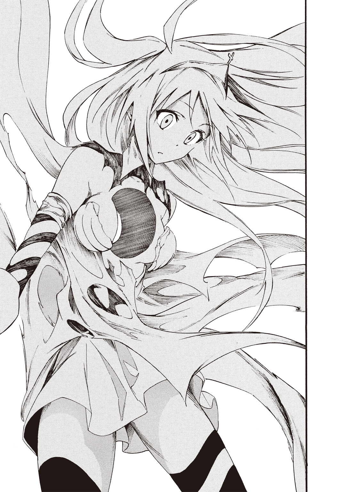
盾が消え、鎧も役に立たず、尖塔のランスもろともミリアの遺産力が光の粒子に還元される。目を見開いたままミリアはゆっくりと後ろに倒れた。俺がたどり着けたのは今だった。倒れるミリアの背中を支える。遅すぎた――。
ロンギヌスの槍は役目を終えた瞬間に、聖ロンギヌスともども光の粒子となって空間に溶けて消えた。
あの時、なんで俺はきちんとロンギヌスの槍についてミリアに講義しなかったんだ。
何もかも、遅すぎた。後悔が俺を打つ。心が壊れる音が聞こえた。
ミリアの身体からは血の一滴も落ちない。うがたれた穴を中心に、広がるように彼女は白く染まっていく。
「逝くなミリア！ お願いだッ！ 帰ってこい！ 帰ってきて......くれ」
体温を失ったミリアを背中から抱きしめた。
ミリアは死んだのか？ リンクコアが破壊されたのか？ ミリアは記憶を......失うのか？
「......たろぉ......」
ミリアの声が聞こえた。彼女は小さな口を動かす。
「......めんね、さんたろぉ......」
「謝るなよ！ 謝らなきゃならないのは俺の方だ！ もっと俺が的確に、少しでも早くミリアに指示できていれば......いや、お前がひとりで戦おうとするのに気づいて、止めてあげられれば......」
ミリアは俺の腕の中で首を左右に振った。
「......さんたろぉはわるくないよ......」
「ミリア......」
「......これで、わたし......にんげんに......」
「戻れるかもしれない。けど......記憶が無くなるんだ......」
「......きおく？」
「ミリアにとって、一番大切な人との記憶......家族との思い出とか......そういう失っちゃいけないものが消えるんだ」
「......やだ......そんなの......やだよ」
ミリアの手が俺の手を握った。俺も指を絡めるようにして、彼女の手を握り返す。
「ミリアしっかりしろ！」
「......こわいよさんたろう。いやだよ......さんたろうとのきおくが......なくなっちゃうのなんていやだよ」
俺との記憶？ ミリアにとっての、大切な人って......お、俺......なのか。
「......たすけて......さんたろう......」
助けたい。ミリアに忘れられたくない。
何ができる？ 俺に何が......。
ミリアの足下には砕けた赤い破片が散らばっていた。
俺はその欠片をひとつ手にとる。
瞬間、イメージが......俺の頭の中で爆発した。ミリアの記憶が指先から流れ込んでくる。
小学生の時の、あの思い出だ。
出会った時から、ミリアがいじめにあってしまった事や、一緒に生き物係をした事......そして、彼女が割った事にされてしまった花瓶。
できるのか？ 俺に......。
あの時みたいに。いや、あの時よりも、もっと上手く。もっと美しく。継ぎ目もわからないくらい精巧に、緻密に、繊細に......願え、想え、ミリアの心を救いたいんだ。
思い出を砕かれたまま、忘れさせるもんか。
意識を集中しろ。足りない記憶は俺が補え。何なら俺の心だって全部くれてやる。
だから、戻れ！ 元に戻れ！
「ミリア......ミリア......ミリアッ！ 帰ってこいミリアッ!!」
手の中に砕かれた心の欠片が集まった。俺はそれを組み合わせる。何千回、何万回というパターンのシミュレーションをする。正解をひとつ見つけては、また別の破片に取りかかる。
遠くで声が聞こえた。
「なにをしてるんですか？ そんな......リンクコアを......修復してる？ 不可能です！ 修復士ができる限界を超えています！ あなたのその審美眼は......いったい貴方はなんなんですか!?」
何かが近づく気配を感じる。けど、関係ない。今は俺の脳の全処理能力をミリアに捧げるんだ。
「やめてください。でないと......私は貴方を......殺します。そんな力、存在してはいけないんです」
俺とミリアの目の前に、聖母像が立っていた。俺、死ぬのか？
だからなんだ。それがどうした。あと少しでミリアを救えるじゃないか。
ピエタ像が腕を振り上げる。
ああ、あとひとつだけ......この欠片をはめこめば終わりだ。
俺は最後の欠片を手にしていた。ピエタ像が俺の右腕を握るように摑む。
「それ以上はさせません」
どこからか声が聞こえた。声のした方向すらわからない。
不意に、俺の手から最後の欠片がつまみあげられた。
「か、返せ！ それはミリアの心だ」
ピエタ像の隣で、サニーが俺を睨みつけていた。
「返しません......けど、砕いても元に戻されてしまうなら、こうするしかないですね」
ミリアの心の欠片を、サニーは自分の胸に押しつけた。彼女の身体の中に......ミリアの記憶が......心が埋没していく。
こいつ、ミリアの心を食いやがった。俺の特別な目にはその光景がはっきりと見えた。サニーのリンクコアが、ミリアの心の欠片を取り込んだんだ。
「これでもう元には戻りません。諦めてください。どうしても返して欲しいというなら、他の遺産少女に頼んで私を破壊してください。遠慮はいりませんよ。私には守りたい大切な思い出なんて、何もないんですから」
サニーは微笑むと、その目尻から涙が流れた。
「あれ？ どうして......こんなに悲しいんですか？ 悲しいのに心が温かくて......変です」
「ミリアの心を取り込んだならわかるはずだ。守りたい大切な思い出も、それを失う事の悲しみも」
サニーの指先からブツンと光の糸が切れて、ピエタ像が溶けるように消える。
ミリアのリンクコアは一部が欠けてしまっていた。
俺にはサニーからそれを取り戻す術がない。
「ごめんミリア......もし、足りないっていうなら俺の記憶も、心も、思い出もあげるから。だから......」
欠けたままのリンクコアを、俺はミリアの胸にそっと仕舞い直した。
「......じゅうぶんだよ......さんたろぉ......」
再び光が爆ぜた。目の前で何かが爆発したような力を感じた。
体温を失ったミリアの身体に血が通う。脈動が復活する。
ミリアは自分の足で立ち上がった。
「三太郎。ありがとね。わたし、三太郎の事忘れてないよ？」
「ミリア......大丈夫なんだな」
ミリアはそっと自分の胸に手をかざすようにした。そんな彼女の身体を光が包み込む。
「うん！ もう弱音は吐かない。負けて楽になろうなんて思わない。この心は三太郎が直してくれたものだから、大切にするね」
ミリアは遺産力を鎧に換えて再武装した。右手にランスを。ただし左手に盾は構えなかった。
「生誕のファサードは、サニーちゃんにとられた心の欠片の部分にあったみたい」
そんな事が起こりうるのか？ もはや俺の理解の範疇を超えている。
サニーが苦しそうに呟いた。
「こ、こんな心......いりません。それに勘違いしないでください。私が和久君を殺せばもう復活はできないんです。今のはちょっと......驚いてしまっただけです。覚悟してください和久君」
サニーが再び虚空の鍵盤を叩いた。十本の指の一本一本から無数の光の糸が走る。
その総数は......ゆうに百本を超えていた。光の糸の一本一本に聖人像が具現化される。
「この数の聖人を相手に戦えますか？」
これがサニーの奥の手......ってやつか。俺とミリアの目の前に聖人の軍勢が具現化された。
ミリアの顔が緊張で引き締まる。
「三太郎はわたしの後ろにいてね」
「ミリア......この数を相手に戦うのか？」
「そうしないと三太郎が殺されちゃうし」
「女の子に守ってもらうなんて、かっこわるいな」
ミリアはランスを芝生の地面に向けて振るった。地面をうがつようにラインが引かれる。
「こっから先に入って来たら、お仕置きだよ」
サニーが鼻で笑った。
「やれるものならやってみてください！」
聖人像の五体が一斉にラインを踏み越えた。瞬間、ミリアのランスがそれをなぎ払う。
「こちら側ががら空きですね」
右腕を振るってランスで五体を倒したミリアが、ランスを引き戻して構え直す前に、サニーは狙い澄ましたタイミングで別の五体をミリアの左翼側から突撃させた。
「フニックリ♪ フニックラ♪」
ミリアが呪文のようにメロディーを口ずさむ。すると左翼からの突進の速度が緩んだ。聖人たちは足首のあたりまで地面にめり込んでいる。動きも緩慢だ。
重力操作かッ!? ミリア自身がまだ力を理解できてないから、完全な足止めにはなってないけど、フニクラ構造の特性をミリアが活かそうとするなんて......ミリアは急激に成長している。もしかしたら、未完成なサグラダファミリアだからこその、成長力なのかもしれない。
けど、フニクラだけじゃ攻撃を止めきれない。もう一手......あと一手が足りない。
そう思った瞬間、俺には見えた。生誕のファサードを奪われ受難のファサードを砕かれたミリアの左手に......さらなる力が宿るのを。
サグラダファミリアには十八の尖塔が完成予定だ。そのうち、四つの尖塔はすでに完成している。これならいけるかもしれない。
「ミリアッ！ 二刀流だ！」
「うん！」
心が通じたみたいに、ミリアは左手にもう一本のランスを生み出した。それで聖人たちを弾き返す。
サニーの表情が青ざめた。
「そんな......この短時間に成長したとでも言うんですか？」
俺はじっと聖人たちを見据える。
ああ、そういう事か。これはサニーの奥の手なんかじゃない。ハッタリだ。
「ミリアも成長してる。けど、サニー......お前の遺産力......下がってるぞ」
日本ではなじみの薄い聖人も多く、それらをコントロールするにはサニーの遺産力だけでは足りなかった。そもそも、誰でも無いサニー自身が遺産少女であることを拒んでいる。
それではいかにサンピエトロ大聖堂といえども、力を発揮する事はできない。
サニーが具現化した聖人軍団は、ルネサンスの巨匠や職人たちに申し訳が立たないほど、再現度が著しく低かったのだ。
具現化したピエタ像が誇ったあのディティールの細やかさは、すべて分散してしまっていた。
それでもサニーは吠える。
「い、いい加減なこと言わないでください。それよりも降伏してください」
「それはこっちのセリフだ。数で圧倒してハッタリで押し切ろうとしたみたいだけど、残念だったな。そんな完成度じゃ聖人が嘆くぞ」
「そんなのやってみないとわかりません！」
サニーがやけになって一斉にミリアめがけて聖人軍団を殺到させた。
「ごめんなさいごめんなさいごめんなさいごめんなさい！」
聖人相手に謝罪しながら......というか、あくまでサニーが具現化したレプリカなんだけど......ミリアはそのことごとくをすべてランスでなぎ払い、打ち倒した。
無双状態だ。サニーも聖人それぞれを精密にはコントロールできないようで、単調な突撃を繰り返す。
「ごめんなさーい！」
ミリアが最後の一体を打ち倒し、サニーの指先に聖人軍団が受けたダメージがまとめてフィードバックされた。
「きゃああああああああああああああああああああああああああああああ！」
瞬間、サニーの服が吹き飛んだ。仕様なのだろうか。
サニーは下着姿で芝生の上にぺたんとアヒル座りになった。
どうやら、ようやく戦意を喪失してくれたらしい。
「こ、こ、こここ、殺してください！」
俺はサニーに歩み寄る。
「なあサニー。ミリアの心を返してくれ」
「力尽くで奪えばいいじゃないですか。私は抵抗なんてしませんし......もうできませんから」
どうすればいいんだ。サニーがまた、ミリアを襲う可能性だってある。それならサニーを倒して遺産少女ではなくしてしまうのも、現実的にはあり......だけど。
サンピエトロ大聖堂前の広場の柱廊から、柱が何本か消えるかもしれない......。聖人像が無くなるかもしれない。バロックの巨匠ベルニーニが作り上げた天蓋が消失なんて事になれば大事だ。
ああ、どうすればいいんだ。
頭を抱えて苦悶する俺とは正反対に、ミリアが微笑んだ。
サニーの前にしゃがみ込むと、ミリアはサニーを優しく包むように抱き寄せ、ぎゅうっと抱きしめる。
「サニーちゃんがよければ、わたしの心......このままあげてもいいよ」
「お、おい！ なんて事言うんだお前は！」
ミリアは無邪気に笑った。サニーの表情が硬直する。
「いりません。こんな気持ち......返品させてください！」
「えー。そんな事言わないでよ」
すうっと結界が解けていく。ミリアが地面を削るようにして作ったラインも、元通り綺麗な芝生のそれに戻っていった。
結局どうなったんだ？
ミリアが笑顔でサニーに告げる。
「サニーちゃん、お友達になろうよ！」
「ど、どうして......ですか......私は貴方を......壊そうとしたのに」
「最初はサニーちゃんからお友達になろうって言ったんだし、断ったりしないよね？ あのね......サニーちゃんがひとりぼっちだったから、こんな事しちゃったんだと思うの。だからこれからは、わたしや三太郎や、クラスのみんなといっしょにいっぱい楽しい事しよう。そうしたら思い出ができて、きっと『失いたくない』って思えるようになるよ！」
硬直していたサニーの表情が決壊したダムのように崩れた。
「う、うう、うわあああああああああああああああああああああああああああああん！」
「よしよし。泣かないの」
ミリアはそっとサニーを抱き寄せながら、彼女の頭を優しく撫でる。
泣き虫だったミリアは、俺の知らないうちにどこかへと行ってしまったみたいだ。
エピローグ
門限を破った罰として、ミリアとサニーは寮の掃除をさせられる事になった。
ほんのささいなペナルティーだ。
それからどうなったかというと......いつも通りの日常が戻って来た。
相変わらず俺は学園唯一の男子生徒である。
朝のホームルームまであと五分。教室でぼーっと自分の席に座っていると、ヴァールベリさんたちがやってきた。
「なあ和久。あの二人、なんで門限破りなんてしたんだ？」
「あの二人って？」
グリニッジさんが両手を万歳させる。
「ミリアちゃんとサニーちゃんだよぉ！」
「あ、ああ。なんでだろうな？」
二人が戦った事も、遺産と少女の強制的な分離の方法も、俺たちは秘密にする事にしたんだ。
とぼけた俺の顔を、ラ・ショー＝ド＝フォンさんが右目のモノクル越しに見つめてくる。
「和久君なら何か心当たりがあると思ったんだけど......。そうそう、あの二人、やっぱり同じ教会系だからかしら。ずいぶんと仲が良くて驚いてるのよ」
ヴァールベリさんが鼻息を荒くさせた。
「そうだよ！ しかも急にだし。あれかな？ 二人して深夜に校舎の窓を割って回ったり、盗んだ自転車で二人乗りとかしたのかな？ 変わった友情の育み方しやがって！」
「そんな事するわけないだろ！」
「そう言うんなら和久的にはどんな事したと思うんだ？ あたしにだけ、そっとこっそり教えてくれてもいいんだけど」
「知るかよ......」
ミリアとサニー。二人が仲良くなったのはサニーがミリアに心を開いたからだと思う。ただ、もしかしたらミリアの心の欠片をサニーが得た事も、少なからず関係しているのかもしれない。
そもそもリンクコアを分け合うなんて、前代未聞の事態だ。これからいったいどうなるかなんてわからないし、俺には調べる術もなく、どうにもできないんだけど......。
とりとめも無い事を考えていると、少し遅れてミリアとサニーが教室にやってきた。
「おはよーみんな！ ほら、サニーちゃんも挨拶挨拶！」
「おはようございます」
ヴァールベリさんが軽く手をかざすようにあげる。
「おっはー」
グリニッジさんとラ・ショー＝ド＝フォンさんもそれに続いた。
「おっはよー！」
「おはようございます」
ミリアが俺の顔をのぞきこむ。
「ほらほら三太郎も挨拶だよ！」
「お、おはようミリア。サニーも」
サニーが不機嫌そうな顔になった。
「なんで『も』なんですか？」
「え？ いやその、別に深い意味はないんだけど」
「わたしをオマケ扱いなんて良い度胸ですね」
朝から絡んできたッ！ どうしたんだサニーは。俺がミリアに手を貸して自分が負けたことを、まだ根に持ってるのか？
ミリアが慌てて取りつくろった。
「わ、わあああ！ 喧嘩はよくないよ。わたしたち親友同士だもんね！」
「え？ 私たちってどういうことだよミリア？」
「わたしと三太郎は親友でしょ。で、サニーちゃんとわたしが親友ってことは、三太郎とサニーちゃんも親友だよ！」
「どうしてそうなるんだよ！」
「ちょっとやめてください。こんなのと親友なんてありえませんから」
さっそくヴァールベリさんたちが食いついてきた。
「おいおい、まさか三角関係なのか？」
「わたしも親友がいいなぁ！」
「グリニッジは誰とでも仲良くできるわよね」
不意に予鈴が鳴った。教室に時計塔先生がやってくる。
「はい、そこの遺産少女の集まり。解散して各自席につきなさい」
先生に言われてミリアたちはしぶしぶそれぞれの席につく。
着席すると同時に、ミリアは振り返って俺に告げる。
「今日も一日、がんばろうね三太郎」
「お、おう。そうだな」
不意に後ろから、俺はほっぺたを左右に引っ張るようにつねられた。
「痛ッ！ なにするんだよ！」
「なにって、別になんでもないです」
心の中でため息が漏れた。
平和な学園生活を取り戻したと思ったけど、これから先、ずっとサニーにからまれるのか。
落胆する俺にミリアは微笑みかける。なんだか嬉しそうだ。
「二人とも仲良しだね」
「ミリア、お前にはそう見えるのか？」
「うん！」
ともあれミリアの笑顔だけが救いだな。
・
・
・
作戦終了。
本作戦における状況の変化から、再解析。
桜田・Ｆ・ミリア。和久三太郎。サニーピエトロ。以上三名のリンクを確認。
・
・
・
解析の結果......未知の領域に希望を観測。
以上、報告終了。
・
・
・
追伸、カレーの隠し味にチョコレートを入れすぎると、甘くて食べられなくなるので、要注意。
＜おわり＞
あとがき
摩周まろと申します。よろしくお願いいたします。
ペンネームの元となった摩周湖に、一度だけ訪れたことがあります。
当時は残念なことに濃霧に加えて雨という悪天候で、湖面を見ることができませんでした。
いつかその神秘的な光景をこの目に焼き付けたいと思いつつ、あとがきを綴っております。
自己紹介にもなっておりませんが、自身のことはこれくらいにして本作について少しだけ。
世界遺産――。
なんとも素敵な響きです。
美少女――。
とっても素敵な響きです。
そんな素敵な二つが組み合わさってこの本は生まれました。
どうしてこんな組み合わせになったのかというと、きっかけはとてもささいなことでした。
最初に本を書くにあたり、打ち合わせの席で担当編集者及び関係者といくつか意見を交わしたのち「スペインのサグラダファミリアは人名みたいだ」という話題が出たのが発端です。
その言葉遊びが世界遺産系ヒロイン「桜田・Ｆ・ミリア」誕生の瞬間でした。
冗談から始まったような企画でしたが、こうして形になったことに驚きつつも、尽力していただいた皆様への感謝の念を禁じ得ません。
世界遺産という題材の偉大さに対して力及ばぬ部分もあるかと存じますが、最後までお楽しみいただければ幸いです。
摩周まろ
著者紹介
摩周まろ ましゅう まろ
好きな世界遺産は「サグラダファミリア」とみせかけて「モン・サン・ミシェル」。いつか名物の卵焼きにも挑戦してみたい。
illustration
戸流ケイ とる けい
ジャンボ（挨拶）。
漫画描いて生きてる茨城県民です。
好きなものはラーメンとノンシリコンシャンプーです。
ダッシュエックス文庫DIGITAL
俺の彼女は世界遺産
著者 摩周まろ
(C) MARO MASHU 2015
２０１５年３月31日発行
この電子書籍は、ダッシュエックス文庫「俺の彼女は世界遺産」
２０１５年２月28日発行の第１刷を底本としています。
発行者 鈴木晴彦
発行所 株式会社 集英社
〒１０１－８０５０
東京都千代田区一ツ橋２丁目５番10号
０３－３２３０－６０８０（読者係）
制作所 株式会社デジタルディレクターズ
本作品の全部また一部を無断で複製、転載、改竄、インターネット上に掲載すること、および有償無償に関わらず、本データを第三者に譲渡することを禁じます。なお個人利用の目的であっても、コピーガードを解除しての複製は、法律で禁じられています。